| GOD W（｀・ω・´）RLD1 ―ごっど・わーるど― (富士見ファンタジア文庫) | |
| 吉村 夜 | |
| (2013) | |
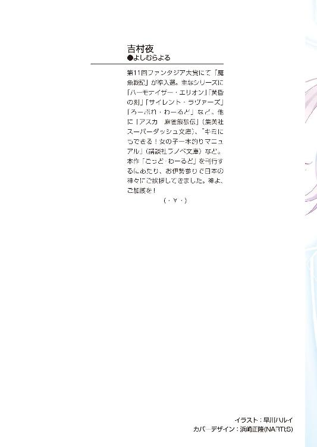
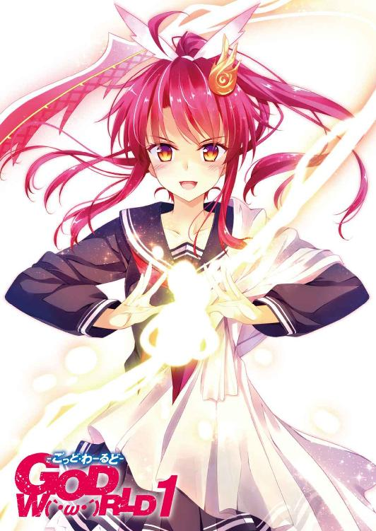
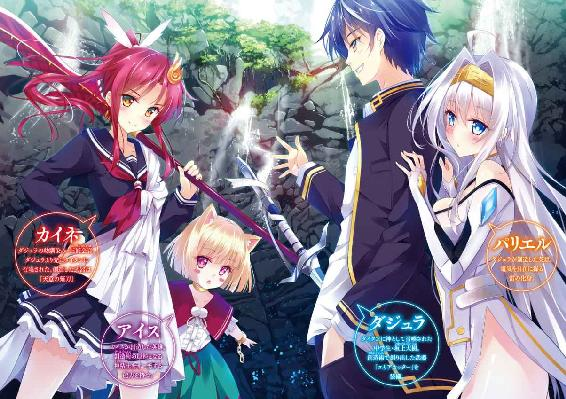
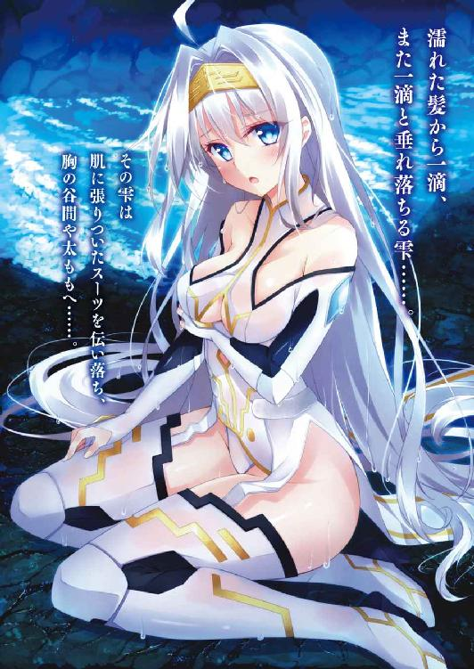
ＧＯＤ Ｗ（｀・ω・´）ＲＬＤ１
─ごっど・わーるど─
吉村 夜

富士見ファンタジア文庫
本作品の全部または一部を無断で複製、転載、配信、送信したり、ホームページ上に転載することを禁止します。また、本作品の内容を無断で改変、改ざん等を行うことも禁止します。
本作品購入時にご承諾いただいた規約により、有償・無償にかかわらず本作品を第三者に譲渡することはできません。
本作品を示すサムネイルなどのイメージ画像は、再ダウンロード時に予告なく変更される場合があります。
本作品は縦書きでレイアウトされています。
また、ご覧になるリーディングシステムにより、表示の差が認められることがあります。
口絵・本文イラスト 早川ハルイ
ＳＣＥＮＥ１
もし君が万物を創造できる神になったら、なにを創る？
────坂上 大樹
ふと、気がつくと......そこは神殿だった。
いや、正確には神殿の廃墟だな。床は白と黒の石が市松模様に敷き詰められ、立派な石柱がたくさん立っている。けれど天井の大部分が崩落して青空がのぞいているし、どこもかしこも風雨にさらされて傷だらけだ。
おれ、坂上大樹はそんな神殿跡地に学ラン姿でぽけっと突っ立っていた。
（んっ？ えっ？）
きょときょとと視線をさまよわせる。おれは直径二メートルほどの真円の鏡の上に立っていた。この鏡だけは今しがた作られたもののように傷ひとつない。
鏡の外側には、金髪の少女が立っていた。おれを見つめている瞳は澄んだ青。上は革の胸あて、下は革のズボン、腰には剣を佩いた勇ましい姿......なんだけど、額には宝石をはめこんだ金のティアラが輝いている。指は白く、細く、高貴なお姫様が無理をして戦場に出てきました、みたいないでたちだ。
「──！ ──！」
少女はおれの知らない言語でなにごとか訴え、緑の液体の入った小瓶を差し出した。蓋を外して、中身を飲み干す仕草をしている。
「飲めっていうのか？」
おれは小瓶を受けとり、匂いを嗅いでみた。メープルシロップに似た香りだ。
「──！ ──！」
少女が「早く飲んで！」って手まねでせっつく。おれは戸惑いながらも飲み干した。
「......あ。これって、果物のしぼり汁？ ジュース？ すっきりした味で悪くないな」
「言葉がわかりますか？ わかるのですね？」
「うん。......ええっ！ なんだこれ、未知の言語なのに理解できる！」
「あなたはダジュラ神でしょうか？」
少女はおれの驚きにはおかまいなしに早口でたずねてきた。
「そっ──そういう『設定』だけど、なんで知ってるの？」
「ああっ、やったわ！ 成功した！」
少女はひどくはしゃいだ声をあげた。あとから考えればマヌケな話だけど、おれは照れ笑いを浮かべながら「そうなの？ いやあ、それはよかった」と口走っていた。
「姫！ 姫っ！」
と、緊張をはらんだ鋭い声が響いた。そっちへ視線を飛ばすと......なんだあれは！ 牛ほどもあるでかい羊に騎乗したヒゲもじゃのおっさんが、蹄の音も高らかにやってくる！ このおっさんも武装しているけど、少女とはちがい、いかにも歴戦の兵って風情だ。
「どうっ」
おっさんがひと声かけて手綱を引くと羊はややつんのめりながら急停止した。
「姫、斥候から報告がありました。ホムリスがハチどもを率いてこの神殿へむかっています。召喚の儀式を邪魔するつもりかと思わ──」
おっさんは報告の言葉を途中で打ち切り、おれに目をとめた。
「召喚は成功しました。まちがいなくダジュラ神とのことです！ ガラシュ、神が創造術を行使するまでの間、敵を食い止めてください」
少女はおれを見ていった。そう、おれを『神』と呼んだんだ。
「了解しました。たとえ英雄が相手とて、時間稼ぎくらいはしてみせます」
ガラシュと呼ばれたおっさんは羊を操ってむきを変え、忙しく去って行く──。
おれはおっさんが去って行く方を見て、この神殿がなだらかな丘の上に建っていることを知った（柱の間隔が広いので見通しがいいんだ）。丘はじゅうたんのように一面に草が生え、あちこちに色鮮やかな花が群生していて絵葉書みたいな美しさだ。
だけど、たくさんの兵士たちが丘を囲んで円陣を組んでいる。彼らは剣や槍や弓を手に、空を見上げてしきりとわめいている。なにやら、ひどく切迫した状況らしいぞ！
（なんだあれ？ 空からなにかが接近してくる......？）
目を凝らすと、青空の一部が濁ったような灰色のカスミになっている。鳥の大群かと思ったが、それにしては低空飛行だ。それに鳥にしては大きい。
『なにか』はぐんぐん接近してくる。兵士たちは矢をつがえて放ち始めた。
おれは額の上に手でひさしを作り、身を乗り出すようにしてもう一度目を凝らした。
「あれって......あのフォルムと黄色と黒のカラーリングは......ハチ？ うわああ、ハチだっ！ なんだあのでかさは！ 秋田犬くらいでかい！ これって夢か？ 夢だよな？」
おれはあわてふためきながらお姫様にたずねた。でも、世界の明るさといい、草の香りといい、日光のあたたかさといい、夢とは思えないリアルさなんだけど。おれってば、なんでいきなりこんなシチュエーションに放りこまれてるんだ？
「夢ではありません！」
少女は──お姫様は鏡の中に踏みこんできて、おれの手をとった。
「ダジュラ神。あれこれ説明したいのは山々ですが、ひとまず眼前の敵を片づけてからにさせてください。たった二つではありますが、神粘土の用意がございます。創造術で武器や英雄を創造し、敵を撃退してください！」
「は？」
おれが......神？ すなわちＧＯＤ？
「ダジュラ神に神粘土をお渡しするのです！ はやく！」
お姫様は後ろを振り返って手を振った。ローブをまとった四人の老人が白木の台座を運んでくる。彼らはうやうやしく一礼してから、おれの前に台座をおろした。
台座の上部は赤い絹張りで、拳大の鉱石が二つ置かれている。
「なんだこれ！ ま、まさか、チェレンコフ光か？ 放射性物質なのか？」
おれは鉱石を見るなり後じさってしまった。というのもこの鉱石、どちらも青い光を放っている。それも、さんさんと降り注ぐ陽光を押し返さんばかりの強烈な輝きだ。
「ホウシャセイ......？ これは神粘土です。神よ、一刻もはやく創造術を──」
お姫様がいらだったようにせっつく声に、ブゥンッ！ と大きな羽音が重なった。
「姫、突破されました！ 一匹、そっちへ行きます！」
おれは羽音が聞こえたほうへ反射的に視線を飛ばした。
長剣をひっさげた男が駆けてくる。そいつが追っているのは......でかいハチだっ！ 想像してくれ、秋田犬なみにでかいオオスズメバチが高速で接近してくる様を！
「ああっ！」
お姫様は悲鳴をあげて両手で顔をかばった......んだけど、ハチはあっというまにお姫様のそばを通り過ぎ、台座を運んできた老人の一人へと突進した。
あっ、と思った時にはもう、老人はハチの体当たりで吹き飛ばされ、柱の一本にたたきつけられていた。彼は柱に背をあずけてずるずると力なく崩れおち、口から血を吐いた。
「うそだろ。ハチがどうしてあんなにパワフルなんだ。夢なら早く醒めてくれ」
ぼやいているうちにハチは弧を描いて旋回し、今度こそお姫様めがけて突進してきた。
ひくっ、とお姫様はのどの奥でしゃっくりのような音を立てた。恐怖で身体がかたまってしまったのか棒立ちだ。
「あーもー、どうしろっていうんだ！」
とっさにおれは右手を強く握り固めると、足を大きく踏みだし、突進してくるハチの頭部めがけてパンチを繰り出していた。なんでって......とっさにそうしちゃったんだ。
拳とハチの頭部が正面衝突するより早く、（おれってバカだ。あんなスピードとパワーで突進してくるハチにパンチしたら、拳が砕けて手首がへし折れる）という思考がよぎった。
おれは（この男らしいかもしれないが後先を考えていない行為の代償は高くつくぞ）と確信し、襲ってくるであろう激痛に耐えるため歯を食いしばった。
ところが、パキャッ、と想像を裏切る軽い破砕音が響いた。
おれの拳を食らったハチはあっさりと頭部を粉砕され、触角や緑の体液を撒き散らした。
「えぇ......？」
おれは緑色に染まった拳をまじまじと見つめた。おててがバッチくなっちゃったぞぉー。でも骨折も捻挫もしていないようだ。Ｗｈｙ？ なぜにィ？
頭部を失ったハチはインパクトの衝撃で回転しながらあらぬほうへ落下した。羽根と足が絶命する生き物の生々しい痙攣を起こしている。
「さすがは神、素手でさえこれほどの御力とは！ 頼もしい限りです！」
ハチを追ってきた剣士が顔を上気させておれをほめそやした。
「ああっ、わたくしを救ってくださったのですね！ 神よ、これでお拭きください」
お姫様が呆然自失のおれに刺繡の入った絹のハンカチを差し出してくれた。
「あ、どうも......」
「ですが神よ、相手は多数、このように素手で戦うのは無謀です。早く創造術を！」
「......なにをどうしろって？」
「創造したいものを強く心に思い描きながら、ここにある神粘土をこねてください。神であるあなたは神粘土を使って創造術を行使できるのです。強い英雄や武器を創造して、わたくしたちを助けてください！」
おれはハンカチを返し、台座の上で燦然と輝く二つの鉱石を改めて見つめた。
「神粘土って、この鉱石のことか？ 粘土みたいにやわらかい物質には見えないけど」
でもこれが夢なら、どんな不条理もたいした問題じゃない。
（それに、そう......。これが夢なら、『おれの名は闘神ダジュラ。あらゆる戦技に精通し、戦いを求めて数多の次元をさすらい続ける神！』って『設定』を公言しても恥ずかしくないな）
よし、決めた。旅の恥はかきすてならぬ、夢の恥はかきすてだ。ここはひとつ、『設定』通りの闘神ダジュラになりきって楽しんじゃおう。普段のおれは理性的にふるまう常識人だけど、時には思い切りはっちゃけたいんだ！
おれは背筋を伸ばして軽く髪をかきあげた。
「フッ......。それではこの闘神ダジュラに仕える英雄たちの中でも、特に強大な力を持つ者を呼んでやろう」
もったいをつけて宣言すると、お姫様は期待に満ちたまなざしをむけてきた。
おれはこつこつかきためた『闘神ダジュラ 設定集』（大学ノート五冊分ある）を思い起こし、脳内でぱらぱらとページをめくった。戦いの神である闘神ダジュラは強くて優しくて人格者なので、多くの英雄たちが憧れ、師事している......という『設定』なんだ！ さーて、だ・れ・に・し・よ・う・か・な。あ、そうだ。どうせなら綺麗どころがいいな。美少女の英雄にしよう、そうしよう。
おれは厳かに鉱石に手を伸ばした。
（んっ？）
触れた瞬間、感触に驚いた。いかにも硬そうな石なのにやわらかいぞ。それに温かい、いや、熱い！ 手のひらを通して、この物質が秘めているパワーが伝わってくる！
いっさいの理屈抜きにおれは確信した。この光り輝く鉱石にはパワーがある。そしておれには、そのパワーを解放する力が備わっている。
こねっ！ こねっ！ こねっ！ こねっ！
おれは両手で神粘土をこねながら、創造する英雄のイメージを心に浮かべた。するとどうだろう、神粘土は輝きを強め、生命の存在を伝えるように脈動し始めたじゃないか！
（すごい、形づくられてゆく！ おれのイメージが反映されてゆく！ おれが心に思い描くイメージを、この物質がシャープに補正しながらとりこんでいる！）
こねっ！ こねっ！ こねっ！ こねっ！
こね始めてからものの十秒か二十秒くらいで、神粘土は少女の輪郭をとっていた。身長約三十センチほど、フィギュアを連想させる大きさだ。この少女の鼓動をあらわしているように、一定のリズムで明滅を繰り返している。そして光の鼓動をひとつ奏でるたびに、この雛形はじわじわと膨張している──。
「クリエイション！」
おれが感極まって唱えると、少女の雛形は目もくらむ輝きを放って膨れ上がった。
輝きが消失すると......目の前には、おれが思い描いた通りの、いや！ それ以上に美しい少女が立っていた。
「お......おおっ......！」
すばらしいっ！ 銀色に輝く長い髪。青い光を放つ神秘的な瞳。真珠の光沢をもつ白い肌。身長は高からず低からず、手足がすらっと長くて小顔の八頭身スタイル！ 腰は折れそうなほど細くて、そのくびれがまたそそるなあ......。おっぱいは大きすぎず小さすぎず、でも形は極上で、これもおれ好みだぞぉ～！ さらにっ！ この究極の美少女が着用しているのは、ホワイト地に金のラインが走るエロかっこいいスーツだっ！ ウェットスーツみたいに肌にピタッと張りついて、身体のラインをくっきりと浮かびあがらせている！
（磁力だ......。磁力を感じる......。特に胸と腰のあたりに......）
おれの手は我しらず、ぷるぷる震えながら少女のほうへ伸びていった。途中でハッと気づいてお触りの御無礼を働かずにすんだけど、かなり危なかった。
美少女はあたりを物珍しげにひとわたり見まわしてから、おれの顔に視線を固定した。
「この方は？」
お姫様がたずねた。いや、たずねてくれた。
スゥー、とおれは深呼吸した。
「『雷撃パリエル！ この闘神ダジュラに仕える百八人の英雄の一人！ 電気を発生させ、またこれを自在に操る能力を持つ......！ 天界随一のおてんば娘だったが、闘神ダジュラと出会い、その圧倒的な力の前に自分が井の中の蛙であったことを知る！ 以後、ダジュラに師事することとなった。その雷撃は岩を粉微塵に砕き散らすほど無双だ！ ほかにも、電気的な力を駆使した多彩な技を持つ！』」
う......。
うおおおおおおおおおおおおおおおおおおおおお！
「おれが考えた『設定』を人前で力いっぱい語るって、なんて気持ちいいんだあああああああああああああああ！」
おれは荒い息を吐きながら肩を上下させた。こんなに興奮したのはひさしぶりのことだ。血圧あがっちゃった。脳から快楽物質がしゅわしゅわ噴き出している。
「雷撃パリエル......。それが、私の名前......？」
おれが創造した美少女は鼓動を確かめるように、心臓の位置に手を置いてつぶやいた。声もいい！ 妙なる音色のごとき美声だ！
「強力な英雄なのですね？ であればまことに頼もしい限りです！」
お姫様は瞳をうるうるさせた。
「フッ。だ、そうだ。パリエルよ、身を守る術なきかよわき者たちが、強大な力を持つお前の参戦を首を長くして待ち望んでいる。さあ、あの育ちすぎのハチどもを軽く薙ぎ払ってこい。もっとも、お前にとっては手ごたえがなさすぎて少々退屈かもしれんがな」
おれは髪をかきあげ、パリエルに命じた。
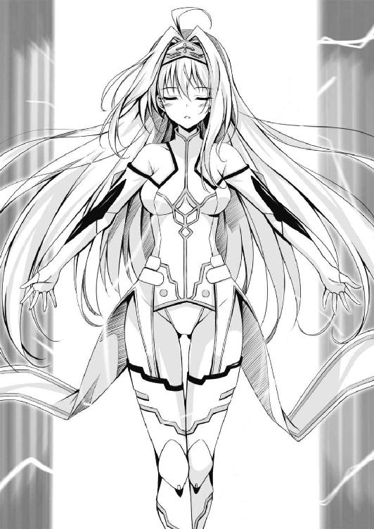
「うわあ......。このかっこうは、いったい......」
パリエルはおれの話を聞いていなかった。神殿の床にはめこまれている丸鏡に自分の姿を映し、ぶつくさいっている。
「あなたが私を創造した神なのか？」
ふいにパリエルは顔をあげておれを見つめた。
「そうだ。おれの名は闘神ダジュラ」
「この変態が」
「な......なんだとコラァー！ 神であるおれにむかって、なんという暴言を！」
「暴言？ じゃあどういう了見で、こんないやらしい衣装を着せて創造したんだ。いいわけできるものならいってみろ」
うっ。
「......まあ、その......いいわけできない......かな......。でも、かっこいいだろ？ 戦闘服としてのかっこ良さが香るシャープなスーツでありつつも美しさを引き立てる要素が満載で、一挙両得というか......。それにそのスーツ、超電導もびっくりの電気抵抗が限りなくゼロに近い特殊生地でできている上に、耐熱性能もあるって『設定』なんだよ。パリエルが放つ電気的な技を妨げないし、アーク放電で生じる高熱も防いでくれる！」
「ものはいいようだな」
「............」
おれは気恥ずかしくなって、両手の人さし指をちょんちょんつつきあわせた。くっ、やりすぎだったか？ おれが考えたおれ好みの美少女をそのまんま創造しちゃうなんて！ これって冷静に考えると、おれの欲望をそのまんま目の前に出現させたようなもんだよな。
「あの......。お話はそのへんにして、戦ってもらえないでしょうか」
お姫様が口をはさんだ。こうしている今も、神殿の外ではキモイ昆虫ＶＳ兵士たちの戦いが続いている。
「そっ、そーだそーだ！ 創造主たるこの闘神ダジュラが命じる！ パリエル、御託を並べてないで、とっとといってこい！」
おれは恥ずかしさを打ち消したい気持ちもあって、ことさら高圧的に命じた。
「いやだ」
ところがパリエルときたら、ますます機嫌を損ねた様子で、ぷいっとそっぽをむいた。
「おいおい！ せっかく稲妻を放つ力を持つ英雄として創造したのに、戦わないんじゃ宝の持ち腐れだろ！ 雷撃でハチ公どもを蹴散らせって！ みんなこまってるんだから！」
「......雷撃、か」
パリエルは瞳を明滅させ、右手にぱちぱちと青いスパークの蛇を躍らせた。
「なるほど、確かに私にはそのような力がある。だが、気に入らないな」
「気に入らないって、なにがだよ」
「私はあなたに創造された存在だが、あなたの所有物でもなければ人形でもない。ひとたびこの世に生まれた以上、私の命は私のものだ！」
「えっ？ ええっ？」
創造物なのに創造主に従わないのか？ まあキリスト教でも、神の創造物であるアダムとイブが、神の命にそむいて勝手に知恵の実をもしゃもしゃ食っちゃったらしいけどさぁ......。そういう神話ってほかにもいっぱいあるけどさぁ......。
おれは動揺してお姫様を見た。でも、お姫様も動揺して視線を泳がせている。
「まったく。創造するや否や、いってこい、戦え、とはなんだ。何様のつもりだ？」
「何様って......おれは闘神ダジュラで、神様なんだけど......。でも、高圧的な態度をとったのはおれに非があったかな？ よし、それについては謝罪する。ごめん、悪かった。でもな、パリエル。でかいハチの襲来でみんなこまってるんだぞ。パリエルにはそれを撃退できる力があるのに知らんぷりなんて、良心が痛まないか？」
おれが低姿勢で訴えると、パリエルは人さし指をピンク色の唇にあてて、「まあ、そうだな......」と考えこむそぶりをみせた。
「だからさ、なっ？ 戦ってくれよ、パリエル」
「では聞くが、ダジュラは戦わないのか？」
「んっ？」
「他人にむかって戦えと命じたいなら、まずは自らが率先して戦うべきだろう」
「あ。一理あるな」
おれは大きくうなずいた。これはまさしく、おれが思い描いていた雷撃パリエルだ。理知的で、曲がったことが嫌いで、神が相手でもいいたいことははっきりという強い意志を持つ、天界随一のおてんば娘だ！
「フフッ、いいだろう。この闘神ダジュラともあろう者が、たかだか昆虫相手にじきじきに戦うのは世間体が悪いと考え、遠慮するつもりだったのだが......。パリエルの言やよし、ここはひとつおれも戦うとしよう」
「ほんとうに、やる気あるんだろうな」
「男に二言はない」
おれは台座にむきなおった。まだ神粘土が一個残っている。
「それっ！」
こねっ！ こねっ！ こねっ！ こねっ！ と神粘土を力いっぱいこねる。またたくまに神粘土が、輝きを増しながら細長い形に引きのばされてゆく。
「クリエイション！」
光の粒が四方八方へ飛び散ると、そこにはひとふりの剣があらわれていた。
「フッ。我が相棒たる魔剣よ、ともに戦おう」
おれは鞘を手にとり、柄を握ってゆっくりと剣を引き抜いた。柄の長さは二十センチ弱、刃の長さは約九十センチ。形状はありきたりな片刃剣だが、刃が青い輝きを放って（これは魔法の力を持つ武器なんですよ）と自己主張している。
「それは......？」
お姫様が目をしばたたいた。
「ありがとう、それを聞いてくれて！」
おれは剣を高く掲げた。そして深呼吸っ！
スゥー。
「『魔剣エリアカッター！ あらゆる次元、あらゆる世界をめぐり、強敵との戦いと強力な武器の収集に無上の喜びを覚える闘神ダジュラ。そんなダジュラの武器コレクションの中でも、特に名高い逸品である。はるか古、さる銀河系にて起きた二大帝国の争乱に参戦したダジュラが両軍ともに撃滅して大乱を終結に導いた折、エドアス星人の刀工から感謝とともに贈られた。惑星エドアスでのみ産出されるエドアス鋼を秘術によって鍛えあげたこの剣は、打ち合わせれば折れてしまいそうなほど刃が薄く、また羽根のように軽い。だがこの剣はとてつもない切れ味で、なんと空間を切断してしまう！ すなわち空間ごと切断することにより、ありとあらゆる物質を切断できる！ この世に切れないものはなにひとつない剣なのだ。その特殊性ゆえに、同様にエドアス鋼で造られた専用の鞘以外にはおさめることができない。でないと、鞘が切れてしまうから！ しかもこの鞘、よくなついた秋田犬のように、宙に浮いて剣の主のそばについてくる。腰に固定しないから邪魔にならない、これまたポイントの高い鞘なのだ！』」
す......すばらしい......！ またしても『設定』を語ってしまった......！
「空間ごとすべてを切断？ それはほんとうか」
パリエルが興味ありげに身を乗り出した。
ふふん。
「そんな剣があるとは思えない、か？ ならば見せてやろう。それッ」
おれは腰を沈め、気合をほとばしらせて眼前の空間を三角形に切り取った。
......。
............あれ？
「空間を切ったのか？ なにも起こらないようだが」
パリエルは目をしばたたいた。
「おっかしーなー。おれの『設定』では、ここの空間が三角形に切り取られて、そのむこうにこの世界と隣接している別次元が見えるはずなんだ。刃こぼれしてんのかな」
おれはためつすがめつ魔剣の刃を眺めた。ものは試し、輝く刃を人さし指で触ってみる。
とたんに指が切れて血が出た。
「うわー！ 切れたー！」
「剣の刃に触れば、普通はそうなるだろう」
パリエルはあきれ顔になった。
「神よ、これをどうぞ。使ってください」
お姫様がハンカチを差し出してくれた。
「あ、どうも。パリエル！ お前もお姫様の気づかいを少しは見習ったらどうだ！ 創造主たるこのダジュラが怪我をしたんだから、ちょっとくらい心配しろよな！」
「指をちょっと切ったくらいで大騒ぎする神なんか、いたわってどうする」
「くっ......なんだとこのー！」
「神よ！ ケンカしないでください！」
「あっ、はい。お姫様、ハンカチありがとう」
でも、ハンカチを受けとったお姫様は眉間に皺を寄せ、ハァー、とため息をついた。
「ダジュラ神、その剣のことですが」
「うん」
「神であるあなたは、創造したいものの確固たるイメージと神粘土があればなんでも創造できます。ただし、神粘土が秘めているパワーが足りないと、イメージより弱いもの、劣るものができてしまうのです。その剣が空間を切り裂けないのはそのためかと」
「ふうん、そうなんだ。じゃあ......えーと、普通のものなら切れるのかな......」
おれは神殿の柱の一本に歩み寄った。（硬そうな柱だ）と思いつつも、刃をあててみる。
するとどうだろう！ スッ......と音もなく、吸いこまれるように刃が柱に入ってしまったぞ！
「うおおおおおお！ すごいっ！ 切れるっ！ なんだこれ、石なのに！ おとーふみたいに切れるぞ！ すぱすぱ切れる！」
すぱっ！ すぱっ！ すぱっ！
おれが調子に乗って切りまくると、切断された柱の破片が床に落ちてごとんごとん音を立てた。その切断面の鋭利なことといったら！
「きゃあああああああああああ！ なにをするんですかー！ こんなに寂れてはいるものの、歴史ある神殿なんです！ 破壊しないでくださいっ！」
お姫様が悲鳴をあげた。
「ごめんごめん。ちょっと試し切りしたかったんだ。空間を切り裂くほどの切れ味はなくても、石をこんな風にすぱすぱ切れるなんて悪くないな」
「そんなことより！ ダジュラ神！ さっさと私たちを助けてください！ はやくっ！」
お姫様は我慢の限界だといわんばかりに顔を真っ赤にしてわめいた。
「フフ......。わかったわかった、それではこの闘神ダジュラの力を見せてやろう」
おれはパリエルに軽く手を振った。
「パリエル。望み通り、ともに戦ってやる。ついて来い！」
そう告げると、おれはパリエルの返事を待たずに神殿を飛び出した。
＊ ＊
「なんだこれ、速い！」
駆け出すなり、おれは新たな驚きに見舞われた。
身体が軽い。大地を蹴りつけると、脚力が強すぎるため、つま先が地面にめりこむ感覚がある。ひと蹴りごとに身体が加速して前へ運ばれてゆく。自分が生み出すスピードで激しい風を受ける形になり、髪が後方へなびく。まるでバイクに乗ってアクセルを全開にしているようなスピードだ！
（これも、おれが神だからなのか？ 普通の人間とはくらべものにならないほど高い身体能力になっているのか？）
ダァン！ ダァン！
背後で爆音が轟いた。走りながら振り返る。パリエルが宙をジグザグの軌道で跳ねとびながらついてくる。
「あ。パリエルは、おれの『設定』通りに雷跳を使えるんだな！」
雷跳！ それは電気の力を駆使するパリエルならではの技！ 足の裏に同極面を接したふたつの電磁場を形成し、斥力を使って稲妻のような軌道で跳ねとぶ！
「あのハチを蹴散らせばいいのだな」
パリエルはあっというまにおれの前に出ると、空中でくるりと振り返ってたずねた。
「そういうことだ」
兵士たちが形成している防衛ラインは、神殿からおよそ三百メートルの距離。つまり神殿からだと、百メートルを十秒で走るアスリートでも三十秒はかかる計算だ。でもおれは数秒で彼らのもとへたどりついた。
「兵士たちはさがらせたほうがいい。私の雷撃は剣や槍に吸い寄せられてしまうから、誤爆してしまう恐れがある」
パリエルの双眸は青い輝きを強めていた。右手には青白いスパークが、もう待ちきれないとばかりにパチパチと躍り狂っている。フッ、頼もしいやつ！
「ここはまかせろ。お前たちは神殿まで後退して姫を守れ！」
おれが自信満々にさけぶと、兵士たちは振り返って歓声をあげた。
「おおっ、神よ！ では、お言葉に甘えて！」
ガラシュが「神殿まで退くぞ！」と声を嗄らす。剣士たちが身をひるがえし、弓兵たちは後退しつつも牽制のための矢を放つ──。
ハチたちが、ブンッ！ と羽音も荒く追いすがろうとする。
「お前たちの相手はおれとパリエルだ、ただでかいだけがとりえの昆虫め！」
最初はこのハチに恐怖していたおれだけど、殴っただけであっさり倒せちゃったし、今はぜんぜん怖くない。闘神ダジュラの前では、お前らなんぞただのやられ役だ！
「それっ」
おれは丘を駆け下ってきた勢いを利し、手近なハチめがけてジャンプした。
（えっ！）
そのハチは地上五メートルくらいの高さにいた。今のおれの身体能力なら刃が届く位置までジャンプできる......と思いきや、なんとおれはハチの上に舞っていた。
「なんだこれ、想像以上だ！」
でもこれが夢でおれが神なら、それこそなんだってありだ。おれは空中で上体を強引にねじり、ハチの背中を見下ろしざま胴を薙ぐ回転斬りを放った。
（............！）
瞬間、世界の動きがスローモーに感じられた。優れたアスリートが集中力を発揮するとこういう現象が起きると聞いたことがある。おれって、動体視力や、知覚情報を処理する脳の性能まで向上しちゃってるのか？
魔剣の青い刃がハチの胴体を通過した。世界のスピードが元にもどった。
ところが、斬った手ごたえがなかった。あるぇ？ 距離の目測をまちがえたのか？ いきなりそんな凡ミスやらかしちゃうなんて神として恥ずかしい......。
ところが一瞬後、ハチはまっぷたつに裂けながら落下していった。
「さ、さすがは魔剣エリアカッター！」
なんて切れ味だ。いつだっけか、おふくろが「研いだばかりの包丁だと鶏肉やトマトがよく切れるのよ」っていってた。母上、それはこのような感じでしょうか？
おれは驚きつつもバランスをとって足から着地した。
草が生えているとはいえ、六、七メートルの高さからの落下だ。落下の衝撃が足から腿へと這い上った。でもたいした衝撃じゃない。筋肉も骨もがんじょうになっている！
「フッ。こんなものか」
もうこれ、楽勝すぎる。おれは魔剣を肩に担いでポーズをとり、左手で軽く髪をかきあげ......。
どこっ、と後頭部に衝撃が走った。
「いてっ！」
卑劣にも後ろからおれを襲ったハチが、ふらつきながら飛び去るのが見えた。体当たりしたはいいが当たり負けして自分がふらふらになってしまったらしい。
「くぬやろぉー！ 人がいい気持ちで決めゼリフを吐いている時にっ！」
でも、ハチの体当たりをもろに食らっても死なないし怪我もしないってことだ。この戦い、勝ったも同然！
「ダジュラ！ こんなにたくさんいるんだぞ、どんどん倒さなければいつまでたっても片づかないだろう！」
と、パリエルがおれを叱りつける声を高いところから降らせた。
振り仰ぐ。彼女は雷跳のジグザグ軌道でハチたちのはるか上に舞っていた。
パリエルは細い腕を頭上でクロスさせた。クロスした部分に紫色の雷球が生じる。スパークの蛇たちがバリバリと大気を引き裂く音を奏でながら躍る。
「万雷招雷！」
パリエルがさけぶのと同時に、バリッ！ と強烈な破裂音が響き渡った。幾本もの稲妻がのたうちながら扇状に広がり、ハチたちを襲う。
風が吹いて、電気分解で生じたオゾン臭とキチン質の外骨格が焼けただれる焦げ臭さをおれの鼻先へ運んだ。すごいっ！ 二十匹以上のハチがまとめて地上に落下したぞ！
「やるな、パリエル！」
さすがはおれが創造した英雄！ 超かっこいいっ！ それに強いっ！
パリエルは戦闘の興奮で酔っているのか、得意げな笑みを浮かべて、パチンとウインクをよこした。
よぉーし。おれも負けてはいられない！
「パリエル！ おれの動きをよく見て、エリアカッターの圏内に入るなよ！」
「わかってる！ ダジュラも、私の稲妻に注意を払ってくれ！」
おれとパリエルは同士討ちにならないよう距離をとり、次々にハチを蹴散らしていった。
秋田犬蜂（命名・おれ）は百匹、あるいはもっといたはずなんだけど、またたくまに数を減らしてゆく──。
（おや？）
半分ほどを片づけた時、秋田犬よりも大きいハチがいることに気づいた。
よくよく見ると、そいつだけ複眼の色が黒じゃなく赤だ。触角が長くて羽根が六枚あり、ほかのハチとは明らかにちがう。さてはこの群を率いるボスか？
おれが注視しているのに気づくと、そいつは軋るような声で「おのれ、よくも我がしもべを！」といってよこした。つまり人語を発したんだ。
ギイイイイイイ！
続いて怪物は耳障りな声を発した。すると魔法使いが呪文を唱えたかのように、やつの眼前の空間に魔法陣が出現して、中心から光り輝くエネルギーの矢がほとばしった。
「うッ」
一瞬あせったものの、おれは魔剣を振るって光の矢をたたき落とすことに成功した。怪物はひるんだ様子をみせ、「撤退だ！ 退け！」とさけんだ。
「やはりやつは、このハチどもを率いるリーダーだな。逃すか！」
とおれは意気ごんだものの、こいつの飛行能力は他のハチよりも上らしく、地上十メートル以上の位置にいる。その高さだと、おれの脚力でも届かない。
「パリエル、そいつをいかせるな！ しとめろ！」
おれは剣でやつを指し示した。
ドン！
パリエルはものもいわず右腕を振るって、轟音とともに一条の太い稲妻を放った。
電気の蛇の顎がハチの親玉に迫る。ところが、べつのハチが稲妻の軌道に飛びこんできて盾となった。
犠牲になったハチは体液が一瞬で沸騰したんだろう、空中で派手に爆裂した。
「おのれ、アンデルの神め！ この借りは必ず返すぞ！」
でかいハチは赤い複眼でおれとパリエルをひと睨みしてから、草原の彼方へ飛び去った。生き残りのハチがその後に続く。
「おおっ！ やった、撃退した！」
「これが神の！ そして英雄の力か！」
後方から兵士たちの歓声があがった。
おれは魔剣を振って刃についた体液を振り払い、鞘におさめた。パリエルがかたわらにすたっと降り立つ。
「パリエル、よくやった。この闘神ダジュラも鼻が高いぞ！」
「このくらい、どうということもない」
パリエルはうそぶいたけど、内心では誇らしく思っているのか笑顔だった。
「いちおう聞くが、その......怪我はしていないよな？ だいじょうぶだよな？」
たずねると、パリエルはおれを見つめて、ぱち、ぱち、と目をしばたたいた。
そうして、「ああ、特に」とそっけなく返してきたものの、少し照れたように頰を桜色に染めた。
「フッ。そうか、ならいい。それにしても──」
おれはハチの死骸が散らばる草原を眺めた。
この夢、なかなか醒めないんだけど。
まさか、夢じゃないとか......。ははっ、そ、そんなことあるわけが......。
「ダジュラ神！ それに英雄パリエル！」
びくっとしておれは振り返った。お姫様を先頭に、ガラシュや兵士たちが駆けてくる。
「お見事でした！ さすがはカイネ神ご推薦の神です！」
お姫様が口にした名前を聞いて、おれは目を剝いた。
「えっ。お姫様、今、なんと？」
「説明がまだでした。わたくし、カイネ神のご推薦であなたを......ダジュラ神をタイタンへお呼びしたのです」
かっ、かいねだとぉー！
「......それってあの......。カイネ神って、三浦会音......？」
「は？ ええと、正義の守護者にして究極の女神、カイネ神です」
「なんだってぇー！ カイネ？ マジで！ あ、あいつの推薦っ？ タイタン？ それってこの世界の名前か？ ここって夢の中じゃなくて異世界なのか？」
「はあ、あの......」
お姫様はおれの今さらな驚愕ぶりに引いた様子を見せながら、「ここはタイタン。神々が集う世界です」といった。
おれは開いた口がふさがらなくなってしまった。
ＳＣＥＮＥ２
異性の幼馴染って、世間ではとてもありがたいものらしい。
────坂上 大樹
さて。
おれが異世界タイタンに神として召喚された原因は、おれがカイネの知り合いだったから、これに尽きる。
おれの幼馴染の女の子、カイネこと三浦会音。男勝りなんて生やさしいもんじゃなく、おれがひそかに（こいつってチンチン生えてんじゃねーの？）と疑っている女の子。生まれる時代を間違えた凄腕の薙刀使いにして、誰にも止められない強烈な意志を持つ取扱い要注意の危険人物！
うん。少し長い話になるけれど、おれとカイネのことを、ほんとに最初の最初ってところから語っておくとしよう。
＊ ＊
「かいねは、つおいんだぞっ！」
キリッとした眉。大きくて力強い瞳。
その女の子は、おれにエアーソフト剣の切っ先を突きつけていいはなった。赤毛の髪をポニーテールにしていたけど、女の子とは思えない猛々しさだったな。
あれはそう、おれが五歳、幼稚園の年長組だった時のことだ。
おれは幼稚園じゃ、先生が家族への通信欄に『たいじゅくんは絵本が大好きですね。でも、もっとお友達と遊びましょう！』と書いちゃうくらい内気な子でさ。両親はそんなおれをかなり心配していたらしい。
で、おれが年長組にあがった春のことだ。親父が、家から徒歩五分の距離にある市民体育館へおれを連れて行った。そこで開かれている『子どもスポチャン教室』におれを参加させて、もっと活発な子どもにするために。おれはそこでカイネと出会ったんだ。
ところで、スポチャンって知ってるかい？
スポーツチャンバラの略称だ。棒切れやハタキを剣に見立てて振り回すチャンバラごっこって遊びがあるだろ。それをスポーツ化したものだと考えてくれ。そんなふざけた名前のスポーツがあるのかよ！ って思うかもしれないけど、スポーツチャンバラは正式名称だ。きちんとした運営団体のもと、全国大会はおろか国際大会まである。
競技者はエアーソフト剣と呼ばれる空気入りの剣を使って切りあう。柔らかい剣だから、当たってもちっとも痛くない。ただし目を保護する必要はあるので、顔面のみアクリル製の透明な面をつけてガードするけどね。
剣を使ったスポーツというと多くの人が剣道やフェンシングをイメージすると思う。スポチャンはそうしたスポーツと比べ、とても自由度の高いルールが特徴だ。使用する武器は剣だけじゃなく、剣よりも短い小太刀、小太刀よりも短い短刀、逆に剣よりも長い槍や薙刀......と、バラエティに富んでいて好きなのを選べる。また剣一本で戦うのも『あり』だし、左右に一本ずつ握った二刀流で戦うのも『あり』だ。一対一じゃなく、一対多数の戦いも希望すれば『あり』だ。勝負の方法は単純明快で、頭だろうが足だろうが、身体のどこを打ってもオッケー。競技性より、まず楽しさありきってスポーツなのさ！
それはさておき──。
「えっと、ぼくは......たいじゅ」
カイネもおれも得物はお互いに小太刀。これは長さ六十センチ以下と規定されている短い剣だけど、五歳児の体格だと大人にとっての長剣に匹敵する感覚だ。スポチャン教室の講師を務めていた女師範からは「当たってもぜんぜん痛くないから、心配せず打ち合っていいのよ」といわれていたけど......おれは闘志剝き出しで仁王立ちになっている女の子にかなり気おされていた。
「じゃあ、はじめ！」
師範が開始の合図を告げるや否や、カイネは「やあっ！」と気合を発して猛然と突っかけてきた。そもそもチャンバラごっこの経験がまったくなかったおれはびくっとし、カイネの攻撃を防ごうと、反射的に小太刀を横倒しにして顔をガードした。
ポコーン！
一瞬後、カイネの小太刀はガラあきになったおれの胴を切り払っていた。エアーソフト剣は空気を入れてふくらませた剣なので、当たるとポコーン！ とか パコーン！ とか音が響くんだ。
「あ」
おれは馬鹿みたいに目をしばたたいた。あっけない勝負だった。
「かいね、つおいっ！」
審判役の師範よりも早く、カイネは胸を張って勝利宣言をしてほかの子どもたちを睨み回した。もうなんちゅーか、「あたしはだれよりもつおいんだぞっ！ そうでないとおもうなら、ばんばんかかってこいやー！」と、いわんばかりの態度だったね。
（む......！）
おれはむっとした。五歳児じゃ男女の体力差なんてないも同然だ。けど、男は生まれた時から男だ。男の子なのに女の子に負けたとあっては面白くない。そういうもんさ。
（おんなのこにまけた......。なんだか、はずかしいな......）
おれは子ども心にこう思ったよ。このままじゃ面白くない。この生意気な女の子ともう一度戦って、今度は勝ってみせるぞ！ とね。
だけどその日の子どもスポチャン教室では、雪辱の機会はめぐってこなかった。開催初日で、師範がスポチャンのルールとか防具のつけかたとか、その手の説明に多くの時間を割いたからだ。けっこうな数の子どもが参加していたこともあり、試合形式の勝負は各自一回ずつしかやらなかったのさ。
「おとうさん。ぼく、またすぽちゃんやりたい」
帰り道、おれがそう告げると親父は「おっ、そうか！」と喜んだ。おれの内向的な性格を直すいい刺激になると思ったんだろうなあ。
翌日......。幼稚園の自由時間、おれはいつものように絵本を読んでいた。だけど頭の中はあの生意気な女の子のことでいっぱいだった。もう一度対戦して、今度は勝ちたいっ！
「あ。たいじゅだ」
いきなり声をかけられた。
振り向いたおれはぎょっとした。宇宙最強を誇る赤毛の女剣士じゃないかー！
「かいね......ちゃん？」
「うん。おんなじようちえんだったのかー。たいじゅは、すぽちゃん、すき？」
「う、うん。まあ」
「よーし。じゃあ、かいねがきたえてあげる！」
なにが鍛えてあげる、だ。なんだその上から目線は。一度勝ったくらいでいい気になりやがって。くぬやろぉー！
こうこられて「やっぱり、やめとく」じゃ、男としての沽券にかかわる。
「まけないぞっ！」
おれは絵本を閉じ、心の力を振り絞ってカイネの視線を押し返した。カイネはさもうれしげに、ニカッ！ と笑ったっけ。
それからというもの、おれはカイネと一緒に足しげく市民体育館に通うようになった。なお、後でわかったんだけどカイネはおれと同じ団地に住んでいるご近所さんだった。
「よぉーし、すぽちゃんだっ！ たいじゅ、いそげ！」
「はしらずに、あるいていこうよ......」
最初のうちこそ、おれたちは『幼稚園が終わる おうちに帰ってひと息入れる市民体育館へ』だった。でもすぐに『おうちに帰ってひと息入れる』はカットされるようになった。......カイネがそうしろっていうから......。つまりそう、カイネもおれもスポチャンの道具を持って幼稚園に通い、幼稚園が終わるとそのまま二人して市民体育館へ直行するようになったんだ。カイネは心底スポチャンが好きで、子どもスポチャン教室が開かれていない日でもスポチャンしたがったんだ。
おうちに帰ってひと息入れる市民体育館へ』だった。でもすぐに『おうちに帰ってひと息入れる』はカットされるようになった。......カイネがそうしろっていうから......。つまりそう、カイネもおれもスポチャンの道具を持って幼稚園に通い、幼稚園が終わるとそのまま二人して市民体育館へ直行するようになったんだ。カイネは心底スポチャンが好きで、子どもスポチャン教室が開かれていない日でもスポチャンしたがったんだ。
おれはそんな彼女につきあわされる形だったわけだけど、でも──嫌々しかたなくだったわけじゃないぞ。
ポコーン！
「かいね、つおいっ！」
パコーン！
「たいじゅ、よわいっ！」
カイネは運動神経抜群、しかもおれよりずっと早く（「カイネは、二歳の時からスポチャンやってたのよ」・カイネの母親 談）スポチャンをやっていたもんだから、強かった。幼稚園生離れした強さだったと思う。
けど、おれはカイネにポコポコ打たれて、ますます男として引き下がれないものを感じるようになっていた。女の子に負けてたまるか！ 練習すればきっと強くなれるっ！
ポコーン！
「あ」
初めてカイネから一本とったのは、一か月くらい経った時だった。今でもあの時の記憶は鮮明だ。肩先を狙うとフェイントをかけておいて胴を払う一撃を繰り出したら、これがスパッ！ と綺麗に決まったんだ。
「......やった......！ いっぽん、とった！」
おれがあふれ出る喜びを嚙み締めていると、
「くぬー！ いっぽんとったくらいで、いいきになるなー！」
カイネはたった一本でもとられたことが悔しかったらしく、赤毛の髪が色あせるくらい顔をまっかにした。そしてその日、そのあと響いたポコーン！ やパコーン！ は、すべてカイネのエアーソフト剣が発したものだった。
けれど、おれは確かな手ごたえを感じていた。カイネは強い。めちゃくちゃ強い。だけど、やつとて無敵のバケモンじゃねえ、おれだってがんばれば戦えるんだぜっ！
気がつけば、おれ自身もスポチャンにのめりこんでいた。そうなると練習にも身が入り、集中力が増す。
ポコーン！
「たいじゅ、よわいっ！」
パコーン！
「そんなことないぞっ！」
次第におれがカイネから一本をとる回数は増えていった。もっともそれはカイネの闘争心を煽ることとなり、彼女もまた創意工夫を重ねてめきめき上達していった。おれたちは互いに切磋琢磨しあう剣士だったのさ。
ところで──。
このころ、日曜日の朝に『魔法少女プリティソード』ってアニメが放映されていた。正義の味方の魔法少女が悪の軍団と剣で戦うって内容で、女の子にバカ受け、関連グッズが飛ぶように売れていた。剣で戦うのに、なんで『魔法少女』なんだよ......ってツッコミはさておき、カイネもこのアニメがいたくお気に入りだったようだ。
「ぷりてぃそーどは、つおいんだぞっ！」
カイネはいつのまにか、プリティソードになりきってエアーソフト剣を振るうようになっていた。つまり、おれが悪の軍団の手先ってわけですよ。
でも悪の軍団の手先じゃかっこ悪いだろー。いや、面白くないだろー。
このころ、男の子の間では『ケダモノ戦隊アニマルズ』が流行っていた。赤、青、黄、緑、ピンクの正義の五人が戦う伝統の戦隊ものだ。リーダーは赤をイメージカラーとするドラゴンレッド。だけど赤はカイネを象徴するようなカラーなのでおれとしては避けたかった。そこで......。
「たいがーぶるーだって、つおいんだぞっ！」
おれはブルーを名乗ってエアーソフト剣を振るうことにした。
「なんだとぉー！ ぷりてぃそーどのほうがつおいんだっ！」
「たいがーぶるーのほうがつおいんだー！」
ポコーン！ パコーン！
かくて、おれたちはポコポコたたきあいながら、すくすく育っていった。
ご近所さんのおれとカイネは幼稚園を卒業後、同じ小学校に通うようになった。でもおれたちの関係は変化せず、学校が終わると即座に市民体育館、日がな一日スポチャンで汗を流す毎日だった。
なお、この小学校時代、二年生と四年生の時におれとカイネは同級生になった。カイネは我が強くて、正義の味方が大好きで、他人をぐいぐい引っ張ってゆくバイタリティあふれる女の子で......。当然のような顔で、一年を通じて級長を務めていたっけ。押しつけられて級長になりましたってタイプじゃなく、「あたしはこの教室の法律だから！ 無法地帯の保安官だから！」と顔にかいてある級長だったよ。実際、女子に意地悪をする男子を見つけた日には烈火のごとく怒り狂い、容赦なくグーで殴りつけていた。
おれはそんなカイネに最も親しく、唯一、仲裁に入って彼女を止められる存在だった。だから一度ならず、腕力にものをいわせるカイネを止めたっけ。
自然と、級長でありリーダであるのはカイネ、それを補佐するのが常識人のおれ、って立ち位置になっていった。
うーん、我ながら損な役回りだ。ただ、カイネの名誉のためにこれだけはいっておくか。カイネは裏表がなくて陰湿さとは無縁の性格だったし、親分肌の頼れる存在だった。だから『乱暴な子』のレッテルを貼られていたけど、男の子からも女の子からも人気があった。
なんにせよ、おれとカイネは長い時間をともにすごして、自然と兄妹あるいは姉弟みたいな間柄になっていったのさ。
とはいえ......人は成長するし、世の中は絶えず変化してゆく。
この小学校時代、おれとカイネの間にも三つほど変化があった。
まず第一の変化だが、『魔法少女プリティソード』と『ケダモノ戦隊アニマルズ』の放映は終了した。代わって女の子を魅了したのは『正義のアイドル スターマイン』、男の子の人気を集めたのは『宇宙海賊ゾディアック』だった。
てなわけでカイネはプリティソードからスターマインへ、おれもタイガーブルーは卒業してゾディアックへジョブチェンジした。この手の番組はたいがい一年で終了して新番組へ移行するから、おれたちはそのたびにちがうヒーローやヒロインへ鞍替えしていった。
第二の変化だが、小学三年生の春以降、おれもカイネも得物をそれまでの小太刀から長剣（全長百センチ以下と規定されている）へと変更した。小学生にとって長剣の長さはまだ扱いづらいんだけど、カイネは（あたしは大人なみに強いんだ！）って自負から長剣を使うようになったんだ。おれもそれに引きずられる形で得物を長剣に変更したってわけ。べ、べつに、カイネとお揃いにしたい、なんて思ったわけじゃないぞ！
そして第三の変化だが......おれは男でカイネは女だ。
小学生の高学年あたりから、性徴が始まって男女の運動能力の差は顕著になってくる。
カイネは性格もさることながら運動能力も女の子離れしていてさ。かけっこはべらぼうに速いし、柔軟性、跳躍力、反射神経、なにもかもズバ抜けていた。
けれど、五年生にあがったころからだったな。次第にスポチャンでカイネはあせりを見せるようになっていった。男であるおれの運動能力が急激に伸びたため、おれに一本をとられる回数が目に見えて増え始めたんだ。
カイネにしてみれば、これはアイデンティティを揺るがすほど大きな問題だったと思う。彼女は自分の強さに絶対の自信を持っていたからね。
それは──五年生の夏休みが始まった日のことだった。おれとカイネはいつものように市民体育館へむかった。そうさ、祝祭日だろうが学校が長期休暇に入ろうが、おれたちはスポチャン三昧の日々だったんだ。
ところがその日、カイネがスポーツバッグからとりだし、空気を注入して膨らませたのは長剣じゃなかった。
「えっ！」
おれは愕然としてしまった。長いっ！ 薙刀じゃないかー！ スポチャンにおいて長槍・薙刀の部で使われるこの得物は、長さ二百センチ以下と規定されている。それってあの......おれが得物にしている長剣の二倍の長さなんですけど......。
「あたし、今日からこれを使う」
カイネは薙刀を肩に担ぎ、傲然と宣言した。なんか文句あんの？ とおれを押さえつけるような目つきだった。
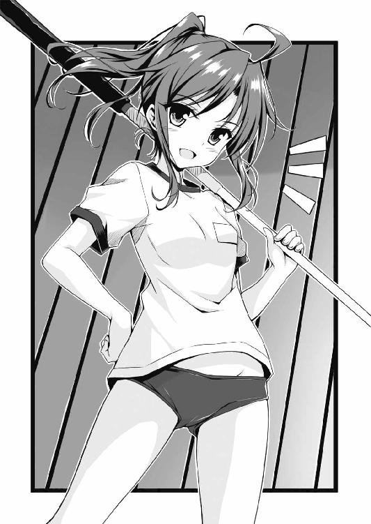
剣道三倍段、って言葉を聞いたことあるかい？ 剣道の初段は柔道や空手といった素手の格闘技の三段に匹敵するって意味だ。剣ＶＳ素手だと、剣を持つことで生じるリーチの長さが圧倒的に有利なんだよ。
これは剣と薙刀の関係においても同様だ。剣の二倍の長さがある槍や薙刀は、剣に対して圧倒的といえるほど有利なのさ。
それはカイネだってわかってるはずだっ！ なのに薙刀を使うなんてずるいっ！ ひどいっ！ ヂグジョォー！
と、反論したいのは山々だったんだけど──。
「......わかった」
おれは言葉少なく、カイネの宣言を受け入れた。
カイネにしてみれば、すでに逆転しつつあるおれとの運動能力について思い悩んだ末の選択だったんだと思う。おれたちはお互いに、そういうことを言葉なしで察せられるくらい気心が知れていた。それに、（いちおう）女の子のカイネにむかって男であるおれが「同じ条件で戦えよ、それが男女平等ってもんだろ」なんて文句をつけるのはかっこよくない。大げさかもしれないけど、おれは男としての矜持にけっこうこだわる方なんだ。
もっとも、この「......わかった」は高くついた。
想像はつくだろう？ 有利になったからといって手加減するようなカイネじゃない。この日以来しばらく、おれとカイネの間で響くポコーン！ やパコーン！ は、カイネの薙刀から発せられるものばかりになった。
だけどおれは......変な話かもしれないけど、カイネが再び強大な壁となったことが嬉しくもあった。その壁に挑むことでより上達できるのはまちがいなかったからね。
こうして小学生時代もすぎ、そして──。
「あれ。大樹と同じクラスなんだ」
「そうみたいだな」
小学校を卒業したおれたちは同じ中学校に進学した。早い話が、自分の家から一番近い公立中学校に進学したってわけだ。
このころになると、カイネもいちおう胸が膨らんで、だいぶ女っぽい見た目になってきていた。だけど、「あたしはこの世で一番強いんだっ！」と公言してはばからない傲岸不遜な性格は以前と変わらない......どころか、むしろ激しさを増すばかりだった。
で、十年一日のごとく、あいも変わらず二人してスポチャン三昧の日々だよ。中学生になったものの、ある日、お互いを異性として認識しロマンスが始まる──なんて艶っぽい展開はむこう百年来ませんよって感じだったな。
じつは、その......おれ、小学校時代からずっと、バレンタインデーにはカイネからチョコをもらってたんだけどさ......。「あ。今日ってバレンタインデーか」とほかの女子のすることを見て気づいたカイネが「よーし！ 大樹、チョコをあげる！」とおれを近所のスーパーのお菓子コーナーへ連れてゆき、その場で買った麦チョコの袋を開けて「半分だけ食べていい」と渡してくれる......そんなんばっかだった。ひでぇ。義理チョコと呼ぶのさえはばかられる。これじゃ異性関係には発展しようがないよなー。にもかかわらず、ほかの女子の目に、おれは（いつもカイネちゃんと一緒にいる彼氏）的な映り方をしていたようでさ。おれはカイネとちがって気配りのできる常識人の上、顔の造作も悪くないっつーか、かなりマシなほうなのに、ほかの女子からチョコをもらえたことはただの一度もなかった。
まあ、それはそうと......。小学校時代がそうであったように、中学校時代にも、おれとカイネの間に多少は変化の波が訪れた。
その最大の波、それはっ！
中二病の風......自分が考えた『オリジナル設定』の導入......！
あれは中学に上がって最初のゴールデンウィークのことだった。
「よぉーし。それじゃあ今日も......正義の守護者にして美と力を司る、この女神カイネが稽古をつけてやるかっ！」
市民体育館でおれとむきあったカイネは、いきなりそんなことをいいだした。
ウワァー、女神カイネだってよ。正気かお前。......などとからかおうものなら、カイネが薙刀をその場に打ち捨ててグーで殴りかかってくることは火を見るよりも明らかだった。
じゃあ、どう受け答えをするべきか？
おれは少考した。じつのところ、いくつものヒーローを演じてきたおれもまた、そろそろ借り物の設定には物足りなさを感じ始めていたんだ。
「フッ......。では、この闘神ダジュラが相手になってやろう」
その言葉は驚くほど自然におれの口をついて出た。闘神ダジュラ！ おれの名前である大樹と、戦いの神であるアシュラを組み合わせてみたっ！
名乗る時、気恥ずかしさがまったくなかったかといえばそんなことはない。でも、堂々と名乗っちゃうと案外しっくりきた。いや、すまん。やっぱり正直にいう。闘神ダジュラって名乗ったら気持ちよかったですっつつつつつつ！
「ウフフ......。面白い、相手にとって不足はないわ」
「それはこっちのセリフだ。強者と見れば戦わずにはいられないのがこの闘神ダジュラのサガ......。悪いが、女だとて容赦はしない、覚悟するんだな」
おれたちは申し合わせたように芝居がかったセリフを吐くと、ポコーン！ パコーン！ と打ち合った。
（やっべ。楽しい。超楽しい......！ クセになっちゃうっ！）
それはカイネも同じだったようで、いつになく太刀筋に気取った感じがあった。正義の女神にふさわしい、かっこいい大技を決めてやる！ って気配さ。
はい、そうです。おれたちはそろって罹患したんです。中二病ってやつに。
以来、この『設定』はおれたちのお気に入りとなった。自分で考えた『設定』だから、番組が終わったり流行が変化したりするのにあわせてキャラを変えなくてすむ。なによりオリジナルの設定は、自分であれこれ肉付けできるのが楽しい。
おれはその日のうちに大学ノートを用意して『闘神ダジュラ 設定集』の作成に着手した（たぶん、いや絶対、カイネも似たようなことをやっていたはずだ）。
闘神ダジュラ。あらゆる次元を旅し、戦いに明け暮れる闘争の神......！ もちろん強くてかっこいい。しかもただ強いだけじゃなくて人徳があり沈着冷静で、カイネとかいう猪突猛進ばっかのイノシシ女神とはひと味ちがう。戦った相手は敗れてもダジュラの強さと優しさに感銘を受け、思わず「弟子にしてください」と申し出てしまう。む、そうなると配下に加えたかつての敵についての設定もいるな。あっ、そーだ！ 美少女がいい、美少女が！ カイネみたいなガサツで乱暴な女じゃなく、ダジュラの強さと優しさを慕い、「あなたを師とあおぎさらなる強さを求めて修行したい」なんて口ではいいながら心の中ではべた惚れのツン成分三とデレ成分七を配合した美少女とかどうだ？ それいいな、よし、かいておこう。そうそう、この美少女には名前がいるよな。あと、服装、体型、髪型、そういう『設定』もちゃんと煮詰めなければ。そうそう、能力！ 特殊能力があったほうがいいよな、それも考えないといけないぞ。それから──。
......その......。
これって世にいう黒歴史帳か？ 数年後に振り返って過去の自分を絞め殺したくなると巷間で囁かれる自分専用時限爆弾なのか......？
でも楽しいんだよ『設定』を考えるのって。べつにいいだろ、誰に迷惑をかけてるわけでもないしさー。
こうして、おれとカイネは神になったんだ。少なくとも『設定』においては。
だけど──。
カイネはマジで正義の女神になろうとしていたフシがある。
カイネは小さいころから暴れん坊だったけど、中学二年生の秋、こんな事件を起こした。
それはすっかり木々の葉が紅葉した十月のことだった。おれたちが通っていた中学には、教師も目をそらすワルのグループがあってさ。それを束ねているボス猿は三年生で、中学生なのに身長百八十センチオーバー、見るからにケンカが強そうなやつだった。
その日、授業が終わったおれとカイネは早足で駐輪場へむかった。幼稚園と小学校は徒歩で通ってたけど、中学生になってからは自転車で通学していたんだ。なんで早足だったのかって？ いうまでもない、一秒でも早く市民体育館へむかうためだ。
そこに件のワルたちがいた。
人数は五人。なんとやつらは、駐輪場に止めてあった自転車をカッターナイフでパンクさせている最中だった。
「おい、なにやってるんだ！」
おれは思わず怒鳴っていた。ことさらケンカに自信があったわけじゃない。だけど標準的な善悪の価値観はあったからな。
「なんだオイ、なに見てんだ？ ええ？」
ボス猿は悪びれもせず、むしろギラつく目でおれを威圧してきた。
すると......。
「ううん、文句なんかないわ。邪魔してごめんなさいね！ ごゆっくりぃ～」
カイネはびっくりするほど明るい声で告げ、おれの手をつかむと、さっさと踵を返した。
「おっ、おい──」
おれは（なんだよ、そんなセリフ、カイネらしくないぞ！）と幻滅を感じていた。でも相手は五人、いずれもケンカが強そうで、カッターナイフを所持、さらにボス猿はあの体格だ。その場を離れ、職員室へ行って先生に報告するのが妥当な対応だろう......。
と、思いきや。
おれの手をひっぱり、あわただしく校舎へもどったカイネは、昇降口で上履きに履き替えることなく土足で手近な教室へ駆けこんだ。
「えっ。おいカイネ、どこ行くんだよ、職員室じゃ──」
答えず、カイネは教室の隅にある掃除用具入れのロッカーを開け放った。
モップをむんずとつかむ。
「ダジュラはこれ持って」
カイネはプラスチック製のホウキをおれに渡した。
「え......？ なに？ なんなの？」
教室にいた生徒たちが何事かとざわつく中、カイネはモップを乱暴にふるって床にたたきつけた。金具が壊れてハケの部分が吹き飛び、女生徒の誰かが「ひっ」と声をあげた。
カイネは木の棒──長さは一メートル六、七十センチで、カイネがスポチャンで得物としている薙刀よりやや短い──となったモップを、ヒュッ！ と風切音を鳴らして肩に担いだ。
「いくわよ！」
いうなり、カイネはだっと駆けだした。
（おいおい、やる気なのかよ！ やっぱりカイネはカイネだった！）
放っておくわけにもいかないので、おれは必死に後を追った。カイネは赤いポニーテールを炎のようになびかせて、飛ぶような勢いで駆けてゆく。カイネの性格を知り尽くしているおれは、かなりヤバイことになると感じていた。
「おいッ！」
カイネは駐輪場へもどると、ワルどもにでかい声を浴びせた。そう、おれたちに犯行現場を目撃されたってのに、愚かにもワルどもはまだそこにいたんだ。自分たちの小悪事に酔うとともに、やって来る被害者の反応を楽しもうとしていたんじゃないかな。
「なんだ、テメエ。文句あんのか」
ボス猿が凄んできた。相手が女の子でもブン殴りそうな酷薄さが漂う顔つきだった。
「なんだじゃねーよ、ブサイク！」
カイネはさっきよりもさらにでかい声でいいはなった。ああそうとも、正義の女神に恥じない堂々とした物言いだったよ。
「文句あんのか、だと。あるに決まってんだろ、バーカ！」
まさか女の子がここまで正面きって言い返してくるとは思っていなかったんだろう。ボス猿以下、ワル五人はあっけにとられた様子でぽかんとした。
一瞬の静寂。
「なんだと......！」
「ハン！ たたきのめしてやる、かかってこいやー！」
いうなり、カイネは猛禽類が獲物に襲いかかるような勢いで突っかけた。「かかってこい」っていっておきながら自分から攻撃ってお前──。
ガツンッ！
カイネが繰り出した突きは、突進しかけていたボス猿の眉間に決まった。
おれはその光景を目にした瞬間、背筋が寒くなったよ。なあ、想像して欲しい。仮に君が剣や薙刀の扱いに習熟していたとして、たとえ相手が悪いやつだったとしても、眉間めがけて躊躇なく棒で突きを繰り出せるか？ 普通はできないと思う。わずかでも手もとが狂えば目玉を抉ってしまうんだぞ？ 失明させてしまう可能性が恐怖とともに脳裏をよぎらないか？ いやそれどころか最悪の場合、眼底を破壊して脳にまで損傷を与え、相手を一生廃人にしてしまうかもしれないんだぞ？
だけどカイネはなんのためらいもなく、それをやってのけたんだ。それは「悪いやつに対して慈悲など無用」って哲学の発露だった。
「うあっ......」
ボス猿はうめいてのけぞった。目は恐怖で大きく開かれていた。人間は顔面を攻撃されるのって本能的に恐怖を感じるようにできている。
「オラァ！」
カイネはすばやく棒を引くと、さらにえぐい攻撃を繰り出した。棒の先で、胸骨を下から斜め上にズンと抉りこむ強烈な突きを放ったんだ。
ここもまた人体の急所のひとつだ。スポチャンでは急所を攻撃したからといって、ほかの部位を攻撃した時よりポイントが加算される、なんてルールはない。だけど、カイネは見事に決めた。
ボス猿の口から、肺の空気が絞り出される「ひゅっ......」という音がかすかにこぼれた。やつは顔面蒼白になり、唇をわななかせてヨダレを垂らしながらドッと両膝を地についた。
「どうしたー！ ばんばんかかってこいやあー！」
敵のリーダー格はすでにブッ潰した。でもカイネはそれで満足しなかった。泡を食って後じさりしかけた一人をあっというまに足払いで転がし、棒を回転させる勢いをそのまま使ってべつの一人の側頭部をガツンと一撃。続いて、「ああっ！」と女みたいな悲鳴をあげたやつの膝頭を突いて体勢を崩すと、そいつがあおむけに倒れる前に喉めがけて突きを入れた。喉を突かれたそいつは派手な音を立てて自転車の林の中へ倒れこみ、痙攣気味に手足を震わせてそのまま立ち上がれなかった。
「どうだ、このヤロー！」
カイネは棒を滑らかに回転させて肩に担ぐと、バッ！ と左手を突きつけて歌舞伎役者みたいに大見得を切った。
（すっ、すごい。あっというまに四人を──）
おれは息を吞んでしまった。こいつ、女なのにかっこいい。めちゃくちゃかっこいい。
だが。
「うわあああああああああああ！」
最後の一人が獣のようなさけび声をあげた。いつのまにかカイネの左後方に移動していたそいつは、顔を歪めてカイネにむかっていった。手には自転車をパンクさせるのに使ったカッターナイフが握られていた。
カイネがハッとして振り返る。カッターナイフがカイネの顔面に迫った。
シィッ！
日頃の訓練のたまものって、こういうのをいうんだろうか。おれの身体は弾かれたように動いていた。鋭く気合を発し、下から上へすくいあげる動きでホウキを繰り出す。カッターナイフは宙に舞った。
凶器はママチャリのカゴに落ちて小さな音を立てた。
「テメェ......」
振り返ったカイネの形相は悪魔でも土下座して命乞いを始めそうなくらいおっかないものだった。もっとも、女の命である顔をカッターナイフで攻撃されたんだ、逆上するのも無理からぬ話だろう。
カイネはブンッ！ と棒をうならせてそいつの右膝をしたたかに打つと、瞬時に棒を逆回転させて左足を払い、地面に転がした。
「あたしの顔に傷でもついたら、どう落とし前つけてくれんのよ。ええ？」
カイネはあおむけになった獲物の股間に棒の先をあてがい、ぐっと押しこんだ。
ヒイイイイイイイイイイイイイイイイイイイイイイイイイ！
人間が発したものとは思えない凄まじい悲鳴があがった。
「よせ！」
おれはホウキを振るってカイネの棒を跳ね上げた。おれがそうしなかったら、そいつはほんとうにタマを潰されていたはずだ。
カイネはじろっとおれを睨みつけた。怒りと興奮で顔はまっか、まなじりはキッと吊り上がっていて......おれは思ったよ。おれが止めないといけない、おれでなければこいつは止められない、って。
「なによダジュラ。なんで邪魔するわけ？」
「カイネ、もうじゅうぶん懲らしめただろ。それ以上はやりすぎだ」
「ハン！ 甘いこといってんじゃねーわ。こういうやつらをのさばらせておくから、いつまで経っても世の中が良くならないのよ！」
「わかった、カイネのいいぶんはわかった。でも、今の自分の顔を鏡で見てみろ！ こいつらを殺しかねない顔をしているぞ！」
おれとカイネは......睨みあった。おれはホウキを握りしめ、全身の毛を逆立てていた。
（カイネが制止を無視して、こいつらにさらなる制裁を加えようとしたら......果たして、おれは彼女を食い止められるのか？）
おれとカイネが今日まで修練を積んできたスポチャンはあくまでスポーツだ。
でもその時のおれは真剣を手に、希代の薙刀使いを前にしている気分だった。
それは、おれにはとても長く感じられる睨みあいだった。でも実際には、おれとカイネが対峙していたのはものの数秒だったと思う。
「ふん！ あんたたち、ダジュラに感謝するんだね。次やったら、殺すよ」
カイネはふいに肩の力を抜いておれからボス猿へ視線を移すと、棒の先端をやつの眼前に突きつけて脅し文句を吐いた。
ボス猿は声もなくただ目を伏せたのみだった。ご町内では怖いもの知らずだったイヌがサーベルタイガーの前で身の程を思い知った、そんな気持ちだったんじゃなかろうか。
「ダジュラ、いこっ」
「ああ......うん」
カイネは棒を肩に担いで、パンクさせられた自転車をひっぱりだした。おれもそれに倣い、急いでその場を離れた。
この一件は一般の生徒たちも目撃していた。
その結果、ワル五人は停学処分。いっぽうカイネとおれは、お咎めなしですんだ。
んで、カイネは一躍学校のヒーロー、いや、ヒロインとなった。教職員も生徒も、そのワルどもにはいいかげん嫌気がさしていたからね。
もっともカイネは、それでもなおこの一件について憤懣やるかたない様子だった。
担任教師の小菅ってのが「いやあ、三浦は強いんだな、驚いた」と褒めたんだけどさ。カイネは肩を怒らせてこういいかえしたよ。「はあ？ あんたたち教師が監督責任を放棄してああいうのをのさばらせなければ、そもそもこんなことにならなかったんでしょうが！」って。小菅は目を白黒させて言葉につまっていたな。教師が相手でも一歩も引かずに食ってかかるカイネは、ますます生徒たちを魅了し、彼女の人気はうなぎ登りになった。
おれはそういうカイネの友達であることに嬉しさを感じたものの、しばらくの間、かなり緊張しながら日々を送った。
停学が解けたら、あの五人はなんらかの形で報復を企てるんじゃないか？ そしてもしそうなったら、今度こそカイネは彼らにとりかえしがつかないほど恐ろしい制裁を加えるんじゃないか？ と心配していたのさ。
まあ結論からいうと、連中がおれやカイネにちょっかいを出してくることはなかったんだけど......ね。
ともあれ、この一件以来、おれはこんな風に思うようになった。
（カイネは正義感が強い。曲がったことが大嫌いだ。それはカイネの美点だけど、でも......カイネはそういうやつに対峙すると、腕力で粉砕しようとする。あいつはアニメや漫画の戦うヒロインに感情移入しすぎていて、しかも生まれながらの強者なもんだから、いつしか自分はほんとうに正義の女神になれると思いこんでしまったんじゃないか？）
もしもまた、カイネがあんな風に暴走しかけたなら──。
（おれが止めなければならない）
損な役回りだ、それはわかっている。
でもおれは、この件よりずっと以前から、正面きって悪と戦うカイネの勇気や度胸を尊敬していたんだ。こういうことができるやつって、ほんとうに少ないし、そばで見ていてスカッとするのもまた事実だからね。
そんなこんなの中学時代も一日、また一日と過ぎて......おれたちは順当に三年生へと進級し、卒業することとなった。
そうそう、『将来の夢』ってお題でみんなが作文をかき、それが卒業文集としてまとめられたんだけど、カイネの作文のタイトルはこうだ。
『正義の女神』。
その作文は『私の夢は正義の女神になることです』で始まり、世の中には悪いやつらがたくさんいる、そいつらを薙ぎ倒すために毎日薙刀の修練を積んでいます、って内容だった......。最初から最後までおふざけゼロの大真面目なもので、一読したおれは苦笑しつつも空恐ろしいものを感じたなあ。
「ついに中学も卒業、四月からは高校生か」
卒業式もすんで、三年間通った中学校ともお別れ。その日、おれとカイネは自転車を押しながら家路をたどった。三年間通った思い出深い通学路だから、最後となる今日は自転車に乗らずに押して帰ろう、ってカイネがいいだしたんだ。なお、カイネはいいだしたらきかない性格だから、おれに拒否権はない。
「高校もカイネと同じなんだよな。まったく、なにも変わりゃしない」
「そう？ 変化って毎日少しずつ、だけど確実に起きているもんよ」
「まあ、多少は......な」
「この中学時代、ダジュラはずいぶん強くなったよ！ あたしほどじゃないけど」
実際、おれは薙刀使いのカイネから長剣で一本とれるほどの腕前になっていた。といってもやはり薙刀の長さは圧倒的に有利で、カイネにとられることのほうが多かったけど。
「おれが上達したのは、カイネがいつも稽古つけてくれるおかげだろうな」
おれが半分本気、半分お世辞で口にすると、カイネは寂しげな笑みを浮かべた。
「でしょうね。だけど......銃やミサイルがあるこの時代、剣や薙刀を極めたとして、それがなんになるんだろう」
おれはしばし沈黙した。
「でも、暴漢に襲われた時とか、変なやつに難癖つけられた時とか、役に立つんじゃないか。去年の自転車置き場での一件がそうだったろ」
「そういう受け身の人生は嫌なの！ あたしはもっと攻撃的に生きたいの！」
「攻撃的、ねえ」
「ハァー。警察官や自衛官になったところで、バンバン鉄砲撃ちまくって悪党どもを皆殺しにできるわけじゃないしなー」
「......怖いこというなよ」
「なにいってんの。そのくらいでなきゃ、世の中よくならないわよ。あたし、思うの。世の中には必要なのよ、ノブさん（織田信長）みたいに力で世を正す者が！」
「............」
正義の女神カイネ。闘神ダジュラ。それはごっこ遊びの『設定』だ。
でも、おれは心のどこかで思っていた。こいつなら、ひょっとしてひょっとするんじゃないのか、大うつけと呼ばれていた織田信長が天下統一に王手をかけたように、と。
「どっかにないかなー。正義の味方養成所とかそういうやつ」
カイネは心底残念そうにぼやいた。
「その......なんだ。いつものようにスポチャンしよう。そしたら少しは気分も晴れるさ」
おれはそれ以外に、カイネの慰め方を知らなかった。
「そのことだけど、ダジュラ。あたし、今日は病院へ行っておばあちゃんに卒業証書を見せることになってるのよ。だから、ごめん！ 今日はナシで！」
「おばあちゃんって、確か去年、脳梗塞で倒れた、あの？」
「うん。いつ容態が悪化してもおかしくないから、卒業証書、見せておきたいのよ」
「わかった。まあ、おれのことは気にしないでくれ」
「代わりといっちゃなんだけど、明日の朝五時半にスポチャンの用意をして学校に来て！」
「え。学校？ なんでまた」
「中学時代の締めくくりに、いつもの市民体育館じゃなく、学校のグラウンドのどまん中でダジュラと戦いたいのよ。砂埃が舞う、果たし合いっぽい雰囲気で思いっきり！ その時間なら、まだ運動部は使用していないから！」
「卒業記念バトルか。いいだろう、この闘神ダジュラなら相手にとって不足あるまい」
「よぉーし！ じゃ、決まりね！」
こうしておれは家に帰り、翌日の早朝、学校のグラウンドへむかった。
着いたのは五時。グラウンドは無人だった。おれは学ランのまま軽く柔軟体操をして身体をほぐした。
（しかしカイネのやつ、遅いな）
スポチャンはエアーソフト剣に空気を注入してふくらませ、アクリル面をつければそれで準備完了だ。準備に時間がかからないから、約束の五時半ぴったりに来たってべつに構わないんだが......校舎の大時計の長針が進んでも、カイネは姿をあらわさなかった。
（なにやってんだ、あいつ。まさか巌流島の決闘になぞらえているのか？ 宮本武蔵を気取ってわざと遅刻か？）
じりじりしていると、時刻は五時半を回ってしまった。
そうして、ついには六時になり、運動部の生徒たちがちらほらあらわれ始めた。
（おかしい。カイネは約束をたがえるやつじゃないのに）
なにかあったのだろうか？
胸騒ぎがした。カイネにメールを入れるべきじゃないのかとおれが考え始め......。
た、その時！
いきなり足もとに直径一メートルほどの円形の鏡？ が出現してまばゆい光を放った。
「わっ！」
おれは飛びのこうとしたが、光がおれの全身を包むほうがずっと早かった。
そして気がつくと、学ラン姿のおれは、見たこともない神殿に立っていた、ってわけなのさ。
ＳＣＥＮＥ３
神は強大な存在です。しかし、アンデルの民を率いるのはわたくしです。
────プリンセス アン
「さすがは神！」
「頼もしい、これならきっとナヴレスに対抗できる！」
ダジュラ神とパリエルの戦いぶりを目の当たりにして、兵たちはやんやの大喝采でした。無理もありません、このアンデル島に神が降臨したのは数世紀ぶりのこと。神や英雄の強大さは書物や語り部によって連綿と伝えられてきましたが、実際に目にしたのはみな初めてなのです。
わたくしも例外ではなく、感銘を受けていました。けれど、このアンは多くの民を率いる身です。状況は切迫していますし、無邪気に喜んでばかりもいられませんでした。
「ガラシュ」
わたくしは右腕と頼む騎士をさし招きました。
「はっ」
「ナヴレスが島に派遣してきた三人の英雄のうち、ホムリスがこの神殿を襲撃してきました。これをどうとらえます？」
「コルドンを占領した後で、町民の誰かから神殿の情報を得たのでしょう。召喚石があると考え、神の召喚を阻止せんがため、空を飛べる足の速い戦力を送りこんできたものかと」
「なるほど。この後の方針について、意見を述べなさい」
「ナヴレス軍の動きは予想以上に迅速です。敵将ゼイモラはすでにコルドンを発ち、主力部隊を引き連れてこちらへ進軍しているかもしれませんな」
「アンデリオンを攻めるために、ですね」
「はい。もし敵が森の間道を使うならカイネ神と鉢合わせすることになります。が、恐らくそれはないでしょう。彼らは土地勘がありませんから、進軍には広くて見通しがよく、伏兵を発見しやすい街道を使うはず......。そうなると、整備された石畳の道ですから、行軍速度は速い。ダジュラ神とパリエル様には急ぎカイネ神の後を追っていただき、我らはただちにアンデリオンの防備を固めるのが最善かと」
わたくしがガラシュの進言を検討していると、ダジュラ神が「えぇと......。お姫様、ちょっといいですかぁ～」と上目づかいにたずねてきました。
「なんでしょう」
「いったいなにがどうなっているのか少しは説明していただきたいんですが......」
「ああ、そうでしたね。後回しになってしまい、申し訳ありません。ガラシュ」
「はっ」
「兵をまかせます。ただちにアンデリオンへもどり、防備を固めなさい。わたくしはダジュラ神に事情を説明してからもどります」
「かしこまりました。では、ひとまずこれにて！」
ガラシュは兵たちとともに、あわただしく去ってゆきました。わたくしは彼らを見送る手間も惜しんでダジュラ神にむきなおりました。
「では、手短にご説明いたします。ああ、そういえばまだ名乗ってもいませんでした。わたくしの名はアン。この島......タイタンの南東に位置するアンデル島をおさめております。正式な統治者は王である父なのですが、病を得て臥せっているため、長女であるわたくしが父に代わって政務を見ているのです」
「あっ、ご丁寧にどうも。闘神ダジュラです」
ダジュラ神は変にへりくだった態度でぺこんとお辞儀をしました。
（カイネ神の推薦を受諾して召喚してしまったけど、だいじょうぶなのかしら、この神は。みょうに気取ったところや自信なさげなところがあって不安だわ）
わたくしは心ではそう思っていたものの、顔には出さないよう自制を心がけていました。なにしろ神は強大な存在、怒らせたら怖いのです。うまくご機嫌をとって、役に立ってもらわなければなりません。
「ところで、タイタンってこの世界の名前かい？ 地球以外の星ってこと？ アンドロメダ星雲あたりにあるの？ それともまったくの別次元？」
ダジュラ神は落ち着かない様子でした。かたわらに立っているパリエルのほうがずっと落ち着いています。パリエルが神、ダジュラはパリエルの創造した英雄、なんて気さえしてきます。
「タイタンはタイタンです」
「はあ」
「この地──タイタンは、はるか古代から多くの神々によって発展してまいりました。ダジュラ神がすでに体験された通り、神は神粘土を使って万物を創造できるからです。便利な道具、病を癒す薬、強力な武器や防具、新たな動物、新たな植物......。神話が伝えるところによれば、最初の神である祖神タイタンが世界の土台となる大地や海や川を創造し、そして去った。現在タイタンに息づいている動植物はわたくしたち人間もふくめ、祖神が去った後でやってきた神々が創造した生き物の末裔なのです」
「......それはまたとんでもない神話だな......はは......」
語っている間に、侍従たちが神粘土を運ぶのに使っていた台座を運んできました。
「ダジュラ神、こちらをご覧ください」
侍従長のクヴァルが一礼して、台座の上にするすると地図を広げます。
「これはタイタン全図です。この......南東にある、この島。これがわたくしどものアンデル王国です」
わたくしは地図の上に指をすべらせました。
「ふうん。伊能忠敬の地図みたいに精密だな。てことはこの世界、文明程度は剣や弓矢のレベルだけど、数学や測量技術はかなり高度なのかな」
「イノウタダタカ？」
「あ。なんでもないです、続けてください。にしても、これがおれたちの現在地か。馬鹿でかい大陸のはしっこにある、ちっちゃい島なんだな」
「はい。アンデル島は領土もささやか、羊と海の幸以外に特筆すべき産業のない小国です。とはいえ我が国は他国に輸出できるほど食糧が豊富、民は健やかで勤勉、この地で長く繁栄を続けてきました。しかるに今、平和を乱す恐るべき神が暴威を振るい始め、彼の神が巻き起こす戦乱の風はこのアンデルにも及んだのです」
「それはたいへんだね」
だいじょうぶなのかしら。ダジュラ神ときたら、未だにピンとこない様子なのだけれど。
「先にも述べましたが、タイタンは多くの神を召喚し、その助力を得て発展してきました。しかし残念なことに、神は必ずしもタイタンに恩恵をもたらすとは限りません」
わたくしはダジュラ神をじっと見つめました。このダジュラ神だって、善の神として名を残すか、悪の神として名を残すか、今はまだ誰にもわからないのです。
「恩恵をもたらさないこともある？ というと？」
「神粘土は神にしか扱えない鉱石ですが、神を召喚する召喚石と、神を帰還させる帰還石、このふたつの神粘土だけは例外です。召喚石をタイタン各地に点在する召喚陣に置き、召喚者がどんな神を召喚したいか強く念じると、新たな神をタイタンに呼べます。召喚者の多くはタイタンの発展や平和に寄与する善なる神よ来たれ、と願うのですが......」
「悪い神をわざわざ召喚しちゃおう、なんてやつがいるの？」
「はい。他国との戦争で優位に立ちたいがため、凶暴な神よ来たれと祈って召喚を行うとか......。他者に復讐したいがため、残忍なる神よ来たれと祈って召喚を行うとか......。もっともタイタンの歴史を紐解くと、そのような最初から邪悪な神が災いをもたらす事例は稀です。むしろ、召喚した時は善なる心を持っていた神が、欲望にとりつかれて堕落し、いつしか邪悪の神へ変貌して悪事を働くようになる事例のほうが多いのです」
「欲望にとりつかれる？」
「ええ。神は神粘土を使って万物を創造できます。美衣、美食、美酒、美女、どんなものでも望むまま創造することにより、神は自身の欲求を満たせるわけですね」
「............」
「そして神粘土、それも強力な神粘土は希少な鉱石です。もっともっとたくさんの神粘土を集め、もっともっと快楽を追求したい......そのように欲望の虜となり堕落した神は、タイタンの平和と発展に寄与する神本来の使命など忘れ、自分のことしか考えなくなります。そうしてついには、人々を苛酷な奴隷労働に従事させて神粘土の掘削にあたらせたり、多くの神粘土を所有する他国への侵攻を企てたりするのです」
「そ、そうなんだー」
ダジュラ神はちらっとパリエルを見ました。そうです、彼のかたわらには（なんてことでしょう......。こんな自分の欲望丸出しの美少女をいきなり創造しちゃうなんて......）と、わたくしが先行きに不安を感じずにはいられない英雄が立っているのです。
パリエルはそのあたりを察したらしく、「誰かさんはそのへん、よく肝に銘じておいたほうがよさそうだな」と聞こえよがしにいいました。
「あのな、いいわけととられるかもしれないが、これだけはいっておく！」
ダジュラ神は顔を赤らめながらわたくしたちを見渡しました。
「この雷撃パリエルはだな、こんな美少女でエロ全開なかっこしてるけど、でも強いから！ 闘神ダジュラがとっても信頼している、戦闘力も知力も抜群の英雄だから！ そのへんは誤解しないでほしい！ 変な勘繰りはやめてもらおう！」
「そのわりにはしきりと私の胸や腰に視線をやっているようだが......。警告しておくぞ。私に変なことをしたら、たとえ創造主である神といえども許さない」
パリエルはもう一度釘を刺しました。
「力説していただかずとも、わたくしどもはダジュラ神を信頼しております」
わたくし、ほんとうはパリエルの尻馬に乗って「ダジュラ神って性欲丸出しですよね？ 少しは自重しないと神としての威厳にかかわりますよ」といいたかったのですが、そこはそれ、神がスネては困るのでフォローしておきました。
「神よ、話を続けます。そのように神はタイタンに大きな禍福をもたらす存在です。直近の事例では、およそ二百年前、とある悪神がタイタンの東側諸国すべてを巻きこむ大規模な戦乱を引き起こしました。多くの人命が損なわれ、多くの国が荒廃し、その戦禍は言語に絶したと歴史書が伝えております。その反省から、また稀少な召喚石がその大乱で消費しつくされてしまったことから、タイタンの東側諸国は『否神条約』を締結しました。今後は神の召喚を禁止し、これを破る国がないように監視団を設けるという条約です。これは三百年間の期限を設けた条約で、現在も条約の期限は切れておりません。ところが──五年前のことです。条約に加盟している国のひとつ、ナヴレス皇国を統べる皇帝が突如として条約を破り、神を召喚しました」
わたくしは地図上に指をすべらせました。
「これです。この、黒い線で囲まれているのがナヴレスです」
「でかっ！ 大陸南東部の大半を占めているのか。アンデル島と比べたら優に三十倍......いや、それ以上の面積があるんじゃないか？」
「はい。ナヴレスはタイタンの東側で最大の国土、最多の人口、最強の軍事力を誇る強国です。そうした強国にありがちなことですが、為政者の皇帝ナドラはなにかと横暴なふるまいが目立つ男でした。その彼も自然の摂理には勝てず、八年ほど前に病を得て臥せりがちになりました。なにぶん高齢だったので病を得てもべつだん不思議はなかったのですが、ナドラは自身に訪れる死の運命を恐れ、本来の寿命以上に長生きしたいと願うようになり、その結果、神を召喚してこれにすがろうとしたのです。つまりそう、新たな神を召喚して神粘土で病を癒す薬や寿命を延ばす薬を創造してもらおう、と」
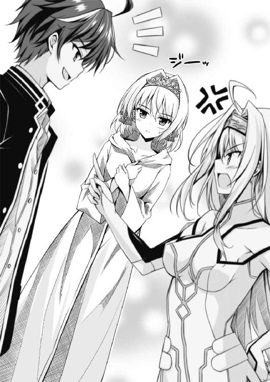
「ふうん」
「そして召喚された神、その名は......ナタス。魔神ナタス！」
忌まわしいその名を口にしただけで、わたくしは口の中に苦さを感じました。
「ナタスは老いた皇帝の懇願を受け入れ、神粘土から万病に効く薬を創り出して彼を救いました。その後、ナタスは皇帝が用意した豪華な宮殿で美衣美食にふける日々を送っていたのですが、それ以外は特になにをするでもありませんでした。つまり、ごくささやかな欲求を満たしていればそれでいいという、毒にも薬にもならない凡庸な神だったのです」
「それがある時、変心した、と？」
「はい。それはほんとうに突然のことでした。ナヴレスには、わたくしどもはもちろん、多くの国々が使者や諜者を派遣して魔神ナタスの動向に神経を尖らせていました。そして半年ほど前のある日、諜者が急報をもたらしたのです。魔神ナタス、変心して皇帝一族を誅殺す、と」
「ちゅっ、ちゅーさつって、皆殺しにしたってこと？」
「はい。いったいいつごろからナタスが変心し、計画を練っていたのかは不明ですが、彼はひそかに神粘土を蓄え、自身の配下となる英雄や怪物を次々に創造していたのです」
「じゃあ、おれとパリエルが取り逃がしたあの人語をしゃべるでかいハチは──」
「ナタス配下の英雄にして怪物、千針ホムリスです」
「............」
「ナタスはまたたくまに旧支配者層を排除してナヴレスを我がものとしました。それがすむと彼の神は多くの民を動員し、より多くの神粘土を集めるべく採鉱に従事させました。そうやって集めた神粘土で、さらに多くの英雄や怪物を創造していったのです。ナタスがナヴレス一国の支配では満足せず、他国に攻め入る準備をしているのはもはや明白でした」
「うわあ......」
「東側諸国はこの脅威を食い止めるべく、戦備にとりかかりました。神に対抗できるのは神のみです。各国は次々に否神条約から脱退して自国防衛のため神を召喚し始めました。ですが、つい一週間前のことです。ナタスは大軍を動かし、南東の国境を接するライラス共和国に雪崩れこみました。ライラスでもすでに神を召喚、英雄を創造してもらい、これに備えていたのですが......まったく歯が立ちませんでした。現在、ライラスはナヴレスの占領下にあります。この国ですね、この点線で囲っているのが旧ライラス共和国です」
わたくしは地図上の、今はもう滅亡してしまった国を指で示しました。
「ライラスって、このアンデル島とナヴレスの間にあった国だったのか。てことは──」
「はい。もはやアンデル王国は風前の灯です。ナヴレスに降伏するか、それとも断固戦って独立を守るか。激論が戦わされましたが、最終的には戦うべしとの決定に至りました。これまで否神条約の加盟国はみな、召喚石や神粘土の採掘を禁じ、互いに監視し合ってきました。ですが我が国はこのような事態に備え、ひそかに召喚石をふたつ確保しておいたのです」
「............」
「ところが、ナヴレス軍の動きはあまりにも迅速で......。つい昨日のことです、ナタス配下の魔将軍である牙面ゼイモラが二人の英雄および兵を引き連れてアンデル島北西の海岸に上陸、この島では唯一神粘土を採掘できる炭鉱の町コルドンを占領してしまいました。もはや一刻の猶予もありません。本日未明、わたくしは神殿で急ぎ儀式を執り行い、強き神よ来たれ！ と祈りを捧げました。そしてあらわれたのが、正義の女神、カイネ神だったのです」
「あいつ、それでグラウンドにこなかったのか。おれとの約束をすっぽかしたわけじゃなかったんだな。にしても、なんつーとんでもない話に巻きこまれているんだ......。それであいつは、カイネは今どこに？」
「急いでわたくしが事態を説明しましたところ、カイネ神はひとふりの武器と一人の英雄を創造した後、ただちにコルドンへむかうと宣言しました。まずはコルドンを占領しているナヴレス兵を蹴散らし、より多くの神粘土を確保する、それが最優先の課題だ、と。わたくしどもも否やはありませんでしたので、百名ほどの兵をつけ、すぐにコルドンへむかっていただきました」
「うわあ......。なんてこった。あいつの性格からすると、絶対にこの状況を楽しんでる......。正義の女神になった自分に酔ってるにちがいない......。んで？ カイネは出発する前に、召喚石がもう一個あるならおれを呼べってお姫様にいったわけ？」
「はい。自分の知り合いで闘神ダジュラという者がいる、頼りになる神なのですぐに召喚し、自分の後を追わせるようにとの指示でした。そこで再びわたくしが儀式を執り行ったところ願いが通じて、無事、ダジュラ神があらわれたのです」
ダジュラ神はこめかみのあたりを指でおさえ、頭が痛いというジェスチャーをしました。
「カイネめ、とんでもないことにおれを巻きこみやがって！ もっともそういうのって、今に始まった話じゃないんだけど」
「それでダジュラ、どうするんだ？ ここまでの話を総合すると、ぼやぼやしている暇はなさそうだが」
パリエルが静かにたずねました。
「どーもこーも、行くっきゃねー！ カイネはおれの幼馴染だけど、性格に少し問題があってさ、おれが見張っておかないと、なにをやらかすかわかったもんじゃない。なあ、お姫様。こういっちゃなんだけど、ひょっとしたら君は魔神ナタスよりもさらにヤバイ神を召喚しちゃったのかもしれないぞ」
「えっ」
ダジュラ神の言葉はわたくしをドキッとさせました。そうです、そういう可能性だってなきにしもあらずなのです。
「と......とにかく、ダジュラ神。コルドンへむかい、カイネ神と合流していただけますか？」
「わかった。そうと決まったら急ごう」
「では──リリー！」
わたくしが名前を呼ぶと、「はいっ！」と元気な返事をして三つ編みの少女が前へ出ました。当年十二歳、わたくしにとっては従妹にあたる信頼できる女の子です。
「さあ、ダジュラ神に自己紹介を」
「はいっ！ 初めましてダジュラ神、そしてパリエル様。リリー・アデナルアと申します。本日ただ今よりダジュラ神にお仕えいたします。身の回りの世話、雑用、そのほかなんでも遠慮なくお申しつけください！」
「あっ。それは、うん、ありがとう」
ダジュラ神は面映ゆそうな表情でした。リリーは器量よしですし、第一印象は悪くないようです。
「クヴァル。羊の用意はできていますね？」
わたくしが問いただすと、侍従長はうなずいて手をたたきました。
すぐに調教師たちが、ダジュラ神の分、パリエルの分、リリーの分、三頭の羊を曳いてきました。いずれも立派な体格で、それでいてよく調教されている雄羊です。
「ではダジュラ神、この羊に乗ってコルドンへむかってください。ここからコルドンへむかうには、通常はアンデルの王都であるアンデリオンから延びている石畳の街道を使います。ですが見通しが良くて敵に発見される恐れがあるので、今回は森の中を抜ける間道を使ってください。初仕事として、このリリーが案内役をつとめます。リリー、ふるまいに気をつけ、ダジュラ神に対してそそうのないように」
「はいっ！ おまかせあれ！」
ところがリリーときたら神を前にして興奮しているのか、ひらりと羊の鞍にまたがってしまいました。従者は主人が乗らないうちに羊に乗ってはいけません。失礼にあたります！
「でかいなあ、この羊。だけどこの島って馬はいないの？」
幸いダジュラ神はリリーの所作に腹を立ててはいないようでした。ですが、ひどく不思議そうに羊を眺めています。
「確かに、タイタンのほとんどの地域では馬に騎乗します。でもこのアンデル島には、かつて賢神ザリアが創造したこの大きな羊......ザリア羊がいます。毛は衣類や敷物として役立ち、肉は食用に適し、頑健で病気や怪我に強く、短距離走では馬に劣るものの長距離走では馬に勝る。今なお島で讃えられているザリア神が遺された、偉大なる遺産なのです」
「ふうん。この羊もまた、昔この地に召喚された神が創造したものなのか」
「はい。賢神ザリアはタイタンの平和と発展に寄与した善神の代表格といえます」
「フッ。そいつを聞いて、この闘神ダジュラもだんだんやる気が出てきたな。カイネと合流して、島に上陸したナヴレスの軍勢を追い払い、平和に貢献してやるとするか！」
ダジュラ神は頼もしい言葉とともに羊に飛び乗りました。パリエルもそれに倣います。ですが二人とも騎乗の知識がないらしく、リリーを観察して、彼女を真似る形で手綱をとり、鐙に足を乗せました。
「神よ。手綱を引くと止まれ、腹を軽く蹴ると歩け、すばやく二度蹴ると走れ、の合図でございます」
危ぶんだ様子で調教師がいい添えると、ダジュラ神は早速、羊の横腹を軽く蹴りました。そうして羊が歩き出すと「おっ！ 歩いた歩いた！」とひどくはしゃいだ声をあげ、手綱を引いて止めました。
（なんだか子どもっぽくて、今ひとつなところが感じられるわ。だいじょうぶなのかしら）
ですが、もう手持ちの召喚石は使い果たしてしまったのです。カイネ神とダジュラ神がわたくしの願い通り魔神ナタスに対抗できる強大な神であることを信じるほかありません。
（賢神ザリアよ、ご加護を。あなたが愛したこの小さな島を暴虐の徒からお守りください）
わたくしは祈りをささげると、クヴァルに合図して本を──といっても数枚の紙を束ねただけのものですが──持ってこさせました。
「ダジュラ神。出発前にこれをお受け取りください」
「それは？」
「この島には、賢神ザリアが後の神々のために書き記した、神の心得や創造術に関する情報をまとめた書物が伝わっています。その名はザリア全書。いわば神のための参考書です。神にとってとても役立つ書物ですが、今は時間がありません。そこで、さしあたり必要と思われる神粘土や創造術の基本概念について、わたくしが抜粋・要約してこれにまとめました。コルドンへの道中、必ず目を通してください。きっと役に立つはずです」
「へえぇ、参考書か。面白そうだな、ありがとう」
「なお、英雄や武器を創造できる強力な神粘土は、カイネ神が使った二個、ダジュラ神が使った二個、これですべてです。強力な神粘土を新たに得るには、採掘するほかありません。が、小さな力しか持たない神粘土はありふれた鉱物です。この羊の鞍のわきに吊るした革袋──これですね。この袋の中に、そうした神粘土を二十個ほど入れてあります。創造術の練習などにお使いください」
「どれどれ......。あ、ほんとだ。この石、光ってる。でもパリエルや魔剣を創造した神粘土より光がずっと弱いな」
ダジュラ神は革袋を開けて中をのぞきこむと、わりあいマシな光量のものを一個選び出し、黒いズボンのポケットに移しました。
「では、ダジュラ神。英雄パリエル。どうかお気をつけて！」
侍従や調教師が、「どうかお気をつけて！」と唱和します。
「よぉし、いってくる！ 吉報を待て！」
ダジュラ神は威勢よくいってリリーに目配せしました。リリーがうなずいて羊を歩かせます。
わたくしは草原を吹く風を頰に受けながら、去ってゆく三人の背を見送りました。
途中、リリーがちらりと振り返り、わたくしを見てうなずきました。
（まかせましたよ、リリー。ダジュラ神がどういう神なのか、今のところはなんともいえません。それにタイタンの歴史上、善神が欲にかられて悪神へ変貌した例は枚挙に暇がない。リリー、ダジュラ神をよく見張り、ご機嫌をとって、うまく操るのですよ）
三人の姿がすっかり遠のいてしまうと、わたくしは空を見上げました。
春の太陽が青空にさんさんと輝いて、戦乱が島を覆っているなど噓のようです。
（この草原で暖かな陽ざしを満喫し、無心に花冠を作っていた、幼かったあの日......）
懐かしいわ。でもわたくしは民を率いる身。やるべきことをやらねばなりません。
「さあ、みな。アンデリオンへもどりましょう。もはや敵は、いつアンデリオンへ攻め寄せてくるかわかったものではありません。ガラシュたちを手伝い、防備を固めるのです！」
わたくしは心の中で賢神ザリアにもう一度（ご加護を）と念じると、羊に乗ったのでした。
ＳＣＥＮＥ４
あたしみたいな特別な存在には、特別な運命が待っているのね！
────三浦 会音
その日、あたしは早朝四時に学校のグラウンドに到着した。
ダジュラとの約束の時刻は五時半。しかし、あたしはそういいだした段階からすでに、自分は四時には到着しようと決めていた。そうすれば柔軟体操やランニングで入念にウォーミングアップできる。いつもの市民体育館の床板とグラウンドの砂地じゃ摩擦もちがうから、薙刀を構えた状態で動き、慣れておく！
兵法にいわく、勝敗は戦う前にすでに決している。中学時代の総決算となるダジュラとの一戦。ぬかりなく万全の態勢を整えて、こてんぱんにやっつけちゃうから覚悟せいやー！
そんなあたしに、運命を司る何者かが微笑みかけたのかもしれない。
柔軟体操を終えて、早朝の冷えきった空気が気にならなくなってきた時のことだった。
突然、足もとに円形の鏡が出現してまばゆい光を発したの。
光はあたしを包み、そして......正義の女神カイネは異世界タイタンに降臨したのよ。伝説を、いや、神話を築くためにね！
＊ ＊
ウフフ......。わくわくが止まらないわぁ～。
このタイタンって世界じゃ、あたしは神！ 事実あたしは神にしかできない創造術を行使して、なんでもかんでも思うままに創造できる！
誰だって神になれたらうれしいでしょ？ 加えて、このアンデル王国を見舞っている危難もまた、あたしにとっては心躍るものだった。
今、このタイタンって世界では魔神ナタスとかいう邪悪の権化が戦争を始め、みんなが迷惑しているんですって。嬉しいわぁ～♡ そんな、ブチのめしたところで誰からも文句の出ないわかりやすい悪党がいるだなんて......！ あたしってば幼いころから、戦うヒーローやヒロインに憧れがあって、どっかんどっかん肉弾戦で戦っちゃうシチュエーションに燃えるのよ。血が熱くなるのよ。心臓が喜びのドラムをたたきまくっちゃうのよ。きっと魔神ナタスってのは、この！ あたし！ 究極の力を持つ正義の女神カイネこと三浦会音のため、運命を司る何者かが用意したやられ役にちがいないっ！
そんなわけで、あたしのテンションはＭＡＸを超える域に突入していた。ヒャッフゥー！ ハァッハッハッハァー！
「ふんふふんのふ～ん♪」
あっと、上機嫌すぎて鼻歌が出ちゃった。
あたしは立派な雄羊にまたがり、緑濃い森の踏み分け道を、百名ほどのアンデル兵を引き連れて行軍していた。
アンデル島はすでにナヴレス軍が上陸していて存亡の危機にある。お姫様から事情を説明されたあたしは、早速、神の力で武器と英雄を創造した。お姫様いわく、もう一個召喚石があるらしいので、親友のダジュラをこのすてきな世界に呼んであげるように指示し、そして......ただちに敵の支配下に置かれた炭鉱の町コルドンを奪還すべく、颯爽と進発したってわけ！
天気は快晴、木漏れ日が描き出す風景は美しい。この森は形のいい古木が広い間隔で生えており、日光がさんさんと降って陰鬱さとは無縁だった。それに、小鳥さんのぴーちくぱーちく鳴く声、樹間にちらりとよぎるリスさんの姿、そういう生き物の賑わいに満ちていて、あたしのうきうき気分に拍車をかけてくれるわぁ～。
（フフ......。はやく炭鉱の町コルドンに着かないかしら）
楽しみでしかたない。悪党どもに占拠された町で、あたしはタイタンにおけるデビュー戦に臨むのよ。悪党どもをばったばったと薙ぎ倒す女神カイネの勇姿！ デビュー戦を華々しい快勝で飾り、人々に崇め奉られるあたしの姿が瞼の裏に浮かぶ！
あたしは肩に担いだ大薙刀をちらっと見やった。
この薙刀はタイタン着後、あたしが創造した武器だ。その名も『天意の薙刀』！
女神カイネは、あらゆる神々の中で一番偉い神なわけ。天上世界の意識の総体なわけ。そういう『設定』なわけ。であるからして、あたしはこの薙刀で天意をみなさんに伝えちゃうわけよ。つまりそう、悪党どもをこの薙刀でブッ倒すって形で。
いうまでもなく、ただの薙刀じゃない。この薙刀には所持者の瞬発力と持久力を増す特殊効果を持たせて創造したの。これがあれば、女であるあたしも男にひけをとらないっ！ それにね、基本的にはボケナスに天誅を食らわせる道具なんだけど、見て見て、この薙刀の刃を。まるで炎のように鮮烈な赤い輝きを放っているでしょ？ ただでさえあたしは美少女だけど、この薙刀を持てば凜々しさ、かっこよさがさらに増して女神としての威厳も増すって寸法よ。そして、さらにっ！ この薙刀はね、振ると効果音を発するようになってんの。ほら、時代劇やカンフー映画って『バシッ！』とか『シュバッ！』とか、斬撃や打突の際に小気味いい音が入るでしょ？ あれよ、あれ。あたし、あの手の聴覚効果が大好きなのよ～。
ブメエエエエエー。
不意にでかい羊が野太い声で鳴き、あたしの興奮に水をさした。
（うーん......。この、ええと、ザリア羊？ ふかふかで丸っこいフォルムは嫌いじゃないんだけど、正義の女神が騎乗する生き物にしてはちょっとマヌケよねえ......。強力な神粘土が手に入ったら、あたし専用のかっこいい乗り物を創造するとしましょう）
なにがいいかしら。フェニックス？ ドラゴン？ あるいはユニコーンとか。あ、純白のユニコーンは悪くないチョイスね、これ心にメモっておかなきゃ。
「あっと、そうそう」
あたしは出立の際、お姫様から神のための参考書を渡されたことを思い出した。
鞍のわきに吊るしている革袋のひとつからひっぱりだして、ざっと目を通す。ごく薄い本だし内容は簡潔だったので、すぐに読み終わった。
（ふーん。神粘土と創造術の基本は理解したわ。後は実践しながら覚えていこうっと）
本を革袋へもどすと、首の後ろに手をやってポニーテールを持ち上げ、風を通した。少し汗ばむくらいの陽気なのよ。
「ねーぇ、ねーぇ」
と、あたしが前に乗せていたきゃわいい猫耳幼女がふりむいた。
「あら。どしたの、あいちゃん」
「あいちゃん、のどかわいた」
このきゃわいい幼女は、その名も聖霊アイス！ あたしが創造した英雄よ。とってもプリティですなおないい子、それでいて、ある強力な能力を秘めている。
「あら～。なにが飲みたい？ なんでも作ってあげるわよ」
「んとね、あいちゃん、あまいのがいい」
「オッケ～イ」
あたしはさっきとはべつの革袋へ手をつっこんだ。神粘土が二十個くらい入っている。この子や天意の薙刀を創造したのよりグレードの低い神粘土ばかりだけど、食べ物や飲み物を創るならこの程度の神粘土でじゅうぶんだとすでに判明している。
こね、こね、こね、こね。
「クリエイション！」
たちまち缶入りのオレンジジュース、それもキンキンに冷えたやつのできあがり！ いやー、創造術ってほんと便利ね。あたし、料理とか裁縫とかその手のいわゆる女の子らしいことって全般的に苦手なのよ。でも神粘土があれば超余裕！
「はい、どーぞ」
パキュッ、とプルタブを引きあけてから渡す。あいちゃんはこくんこくんとかわいらしく喉を鳴らして飲んだ。
「おいちー！」
「ん～。よかったわね～」
あたしはあいちゃんの頭をなでた。ほんと、かわいいわあ。あたし、一人っ子なものだから、こういうかわいい妹が欲しいと思ってたのよ。
「カイネ神」
と、兵士長のゾルダが羊を寄せて話しかけてきた。彼はこの百人あまりからなる部隊を束ねている隊長だ。ずんぐりむっくりの小男でハンサムにはほど遠いけど、太い眉がキリッとしていて、鼻柱が太くて、面魂が感じられる容貌をしている。歳は三十前後かしら。
「魔神ナタスは冷酷残忍、配下の英雄たちもそのような輩が多く、これにつき従うナヴレス兵は練度が高い。たとえ神とて油断は禁物です」
「え。あたし、つい鼻歌を歌っちゃうくらい上機嫌なのは事実だけど、油断はしてないわ」
「その言葉、信じます。ただ、敵は逃げないのですし、コルドン奪還はカイネ神が召喚するように要請したダジュラ神と合流してからでも良いのではありませんか」
「ハン！ ぬるいこといってんじゃないわ。そもそもお姫様がダジュラを首尾よくタイタンヘ呼べるかどうかわかんないでしょ。それに、島へナヴレス軍が上陸したのはつい昨日のこと、つまり町はまだ占領されたばかりなのよね？ 時間が経てば敵はそこを前哨基地にすべく、防備を整えちゃうでしょーが。ナヴレス本国から増援が送られてきたら面倒だし、一秒でも早く仕掛けてさっさとブチのめすに越したことないの！」
あたしは胸を張って自信満々にいいはなった。もっとも、あたしは生まれてからこのかた、ずっと自信に満ち溢れているけど。
「ないの！」
あいちゃんがあたしの真似をした。
「わかりました。いえ、カイネ神にきちんとしたお考えがあって仕掛けるのであれば、このゾルダも、また兵たちも、異存はないのです。ただ、いくら戦うのが兵士のさだめとて、納得のできない戦いで死ぬわけにはまいりませんので」
ゾルダは気魄のこもった笑みを浮かべた。
「なるほど......。じゃあゾルダ、戦って死ぬ覚悟自体はできているわけね？」
「もとより。アンデルは弱小国にもかかわらず大国の横暴に対して牙を剝いたのですから」
「それを聞いて安心したわ。あたしは美しくて強くて気高い正義の守護者だから、ともに戦ってくれる者を決してないがしろにはしない。そして、あたしはとっても偉い神様なわけだけど、意見があるなら今後もどんどん進言してかまわないわ。いいえ、むしろ大歓迎よ。このこと、よく覚えておいて」
「ははっ！ それを聞いて、このゾルダも安心しました」
あたしとゾルダはお互いに微笑みあった。うーん、いいっ！ いいわぁ、こういう戦国的な会話！ 魂が喜びで震えちゃう！
「ゾルダ。あんたにしてみれば、あたしの実力がどれほどのものかまだ半信半疑だと思う。でも、見てなさい。コルドンに着いたら、先頭きって戦うから。魔将軍とかいうスカしたマヌケが出てきたら、軽くブッ潰してやるから。あんたたちはあたしの邪魔にならないように注意するのよ」
「頼もしいお言葉ではありますが、聞き捨てなりませんな」
「なにがよ」
「カイネ神、我らは神や英雄には比ぶべくもない雑兵です。しかし、この国を愛し、守ろうとする気持ちはちゃんとあるのです。戦いのいっさいをカイネ神におまかせするなどとんでもない！ せめて敵の雑兵どもの相手くらいはお申しつけください」
「いうわねぇ」
「いえ、当然のことです」
再び、あたしとゾルダはお互いに微笑みあった。うーん、やっぱりいい！ 気分はもうすっかり戦国武将！
「じゃ、お言葉に甘えて、あんたたちにもなにがしかの役割を果たしてもらうわ」
「ははっ！」
あたしは前をむいて羊を進め、あいちゃんのさらさらヘアーをなでなでしながら物思いにふけった。
（この羊だらけのちっぽけな国が、侵略戦争を始めたナヴレスに対して戦うか降伏するか、方針を決定するまでに上層部はかなり揉めたんじゃないかしら）
とすれば、この期に及んでまだ（戦うより降伏したい）って考えのやつもいっぱいいそう。そうなるとあたしとしては、信頼できる人物を見極めてゆく必要がある。
（このゾルダをはじめ、信頼でき、能力もある者は、今後はあたしが後ろ盾となって出世させていこうっと）
豊臣秀吉は草履とりから始めて、どんどん出世していったんですってね。
アンデル王国は戦国乱世に足を踏み入れてしまった。そして、戦国乱世においては年功序列なんてぬるいシステムなど百害あって一利なし！ 信用と実力を兼ね備えた能力ある者をばんばんとりたててゆかなければ国が亡びる。
（すでに地図で見たけど、ナヴレスは国土が広い。当然、タイタンにおいて最も重要な戦略資源である神粘土の産出量も、ナヴレスは多いことを意味する）
つまり現状、魔神ナタスはこちらの数倍のスピードで強力な武器や防具、英雄などを創造できる。このカイネ神が味方についてもなおまだ、アンデル王国ははるかに不利だ。
（これを覆して勝利するには、人事をはじめ、あらゆることをうまくやらなくちゃ）
ちょっぴり面倒な気がしないでもないけど、わくわくのほうが大きかった。だってあたしは、正義のヒーローやヒロイン、そして戦国武将ってやつにずっと憧れていたから！
（ノブさんは尾張一国から、領土を押し広げて天下の覇者となった。ぞくぞくするわぁ～、あたしはこのタイタンでそれをやってみせるっ！）
あたしは天意の薙刀を握る手に我知らず力をこめていた。
でも誤解しないでね。こんなあたしでも女らしいところはちゃんとあるのよ。
あたしは革袋に手をつっこんで神粘土をとりだした。
こね、こね、こね、こね。
「クリエイション！」
みんな大好き、バナナを創造！ 完熟のあま～いモンキーバナナよ。
「もっきり」
あたしはまず一本をもいで皮をむき、あいちゃんに渡した。
「ほ～らあいちゃん、バナナよ～。おいちぃよ～」
「ありがとぉー！」
あいちゃんの頭を撫でてから、「もっきり」ともう一本もぐ。
「ほら、ゾルダ。神を恐れず進言した勇気のご褒美として、これあげるわ」
「え。あ、はあ」
ゾルダは面食らった様子でバナナを受けとると、二、三度目をしばたたいてから皮をむき、頰張った。
「これは......果物、でしょうか？ おいしいですな」
「でしょ！」
有能な配下はこうした細やかな気配りで忠誠心を高めていかなくちゃね！
あたしは「もっきり」とバナナをもいで自分でももしゃもしゃ食べた。うん、甘い。バナナは消化が良くておなかにもたれないから、戦う前の栄養補給には最適の食品なのよ。カリウム豊富で健康にもいいし、食物繊維のおかげでお通じもよくなる。まさに万能っ！
とまあ、そんな具合に──。
あたしは、心には自信が、身体にはパワーが漲っていて、じつにいい気分だった。
＊ ＊
「あら」
樹木の合間に鐘楼？ らしき建造物がちらっと見えた。あたしは手綱を引いて羊を止め、ゾルダを振り返った。
「あれがコルドンです」
「えぇ？ そうなの？ まだ日が高いわね、お昼前よ」
地球とタイタンの日時はリンクしているようで、この世界にあたしが召喚されたのはまだ夜明け前の午前四時をちょっと回ったところだった。お姫様から事情を説明してもらい、兵を率いて出発したのがその一時間後......午前五時くらいだったと思う。
この羊の歩行は人間より少し速い。時速でいうと六キロか七キロってとこかしら。今が午前十時と仮定すると、五時間かけることの六キロで神殿から三十キロほどの道のりを踏破したことになる。
「全隊、止まれ！ ゾルダ、地図を見せて」
ゾルダが広げたアンデル島全図をあたしはのぞきこんだ。
きちんとした測量技術に基づいて作製された地図で、海岸線が詳細だし、等高線も入っている。また町や街道のつながりが太い線で記されており、とてもわかりやすい。島にはおよそ二十の町や村が点在しているようだ。海の幸の恩恵を受けられるためだろう、町や村の多くは海岸付近に位置している。
「コルドンの町と、アンデリオンの位置を教えて」
「ここがコルドン、ここが王都アンデリオンです」
王都アンデリオンは島のほぼ中央に位置し、等高線が島で一番高い場所であることを示している。また炭鉱の町コルドンは数少ない内陸部の町のひとつで、アンデリオンの北西に位置していた。
「あたしたちが出発した神殿は？ この、アンデリオンから近いところにある、二重丸のマークがそうなの？」
「はい」
あたしは軽く唇を嚙んだ。これがなにを意味するかというと......。
「国家存亡の危機もいいところね」
コルドンは王都アンデリオンに近い！ ナヴレス軍にその気があれば、あっというまに王都を直撃できる！
「やっぱり、もたもたしている暇はないわ。さっさと片づけなくちゃ。とはいえ......ゾルダ、情報があるなら検討しておくに越したことはないわ。ナヴレス軍について現在判明している情報をかいつまんで説明して」
「はっ」
ゾルダは重々しくうなずいた。
「昨夜、新月の闇に乗じ、ナヴレス軍は多数の小舟に兵を乗せてやってまいりました。島の周囲には岩礁が多く、潮の流れが複雑なのですが、損害が出てもかまわないといわんばかりの強襲でした。我が国は小国ですが、獣船を多数擁しているほか、漁に従事して海をよく知っている者も多い。そこで兵と漁民が一丸となって上陸前に敵船を沈めようと試みました」
「獣船？」
「イルカやシャチといった海獣を調教し、これに曳かせる船です。手漕ぎ船や帆船よりもすばやく、小回りがききます」
「ふうん」
「我が方は敵船の約四分の一を沈めることに成功。が、敵には千針ホムリスなる英雄が率いる巨大なハチがおり、これが空を飛んでこちらの船を激しく攻撃してきました。このため、こちらもいったん撤退せざるをえなくなりました」
「巨大なハチ？ なるほど、ナタスはそういうモンスターも創造しているわけね」
「はい。そして上陸したナヴレス軍は海岸付近の村や町は無視して、一気にコルドンへむかいました。コルドンの様子を探ってもどった斥候によれば、ナヴレス兵の数はおよそ三百。雑役夫と目される者がおよそ五十。ホムリス配下のハチがおよそ百。これらを率いているのは魔将軍の一人に数えられる英雄、牙面ゼイモラ。またその配下として先に述べた千針ホムリス、四剣ガルジャ、二人の英雄が上陸しております」
「ふうん。島に上陸している敵の数はたいしたことない......！ それにその兵力じゃ、コルドン以外の町や村までは占領できないわよね？」
あたしは確認口調でたずねた。
「今のところ、コルドン以外の村や町は無事です。ただ、コルドンは古くから石炭、銅や鉄、銀や金、また宝石類など多様な鉱物を産出してきました。なにより坑道の奥深くには、大量の神粘土が表出している場所があります。コルドンさえ押さえてしまえば、我がほうは召喚石や神粘土を入手できず手も足も出なくなると敵は読んでいるのかと」
「理にかなっているわね。王都アンデリオンにも近いから、橋頭堡としては絶好だし......。でも、ざ～んねん！ すでに絶大な力を持つこの女神カイネがアンデル島に召喚されたのよ。それがやつらの敗因となる......！」
あたしが不敵な笑みを浮かべると、ゾルダもまた笑った。
「ウフフ......。このカイネが降臨したからには、そうやすやすと事は運ばねーってことを思い知らせてくれるわ。ともあれ要約すると、雑兵の数はたいしたことないから、ゼイモラ、ホムリス、ガルジャ、その三人の英雄をたたき潰すのがあたしの仕事ってわけね」
「そうなります。ナヴレス兵は装備もよく練度も高いと聞いておりますが、それでもしょせんは同じ人間です。我らとてじゅうぶん対抗できると自負しております」
「三人の英雄についても情報はある？ えーと、いい加減な噂話とかそんなのじゃなくて、ちゃんとした確度の高い情報って意味よ」
さしあたり、あたしにとって一番重要な情報はこれね。炎とか稲妻とか特殊な攻撃能力を持っているのならあらかじめ知っておきたい。それに、魔神ナタスがどんな英雄を創っているのか知れば、今後あたしが新たな英雄を創造する際の参考となる。
「ナヴレスに潜らせている諜者がもたらした情報があります」
「じゃあそれ、説明して。ただし簡潔に」
「はっ。まずは千針ホムリス。これは巨大なハチの群れを従える英雄です。赤い複眼と六枚の羽根を持つ恐ろしげな姿ですが、海戦の折、戦いは手下のハチたちにまかせきりで自分は戦闘に参加しようとしませんでした。このことから、さほど戦闘能力は高くないものと思われます。ただし鳥には劣るものの飛行できますので、剣や槍では倒しづらい相手かと」
「ふむふむ」
「次に四剣ガルジャ。これは四本の腕を持ち、四本の剣を自在に操る英雄です。さほどの体格ではありませんが、それでも常人をはるかに凌駕する腕力です。また装備している四本の剣はいずれも神粘土から創られたもので、特別な力こそないものの、普通の剣よりはるかにがんじょうなのだとか」
「............」
「そして、牙面ゼイモラ。魔神ナタスが特に強力な神粘土から創造した、魔将軍と呼ばれる英雄の一人です。島に上陸したナヴレス軍の最高指揮官はこのゼイモラとみて間違いないと思われます。鉄球棒と呼ばれる、先端に大きな鉄球がついた長柄の棒を武器とし、凄まじい膂力でこれを振り回します。しかしなにより恐ろしいのは不死身と謳われる肉体で、炎、酸、電撃、冷気などあらゆる攻撃を軽減してしまうのだとか。またこのゼイモラは見るからに恐ろしげな黒い甲冑をまとっているのですが、これはナタスが上質な神粘土から創造した魔法の鎧であり、とてつもない硬度で、いかなる斬撃や打撃をも防ぐのだとか──」
「なるほどねー。なかなか有意義な情報だったわ、ありがとう」
あたしは大きくうなずいた。
「その......さすがですな、カイネ神。これほど恐ろしい英雄たちの情報を耳にしても、まったく動じておられる様子がありません」
ゾルダは尊敬のまなざしをむけてきた。
「実際に戦ってみなくちゃ、そいつらがあたしと比べてどのくらいの強さなのかわからないでしょ。強いとか弱いとかって、相対的な概念なんだから。あたしがそいつら以上に強ければ、そいつらはあたしより弱いってことよ」
あたしはうそぶくと、馬上、じゃなかった、羊上で薙刀を一閃させた。
ジュババッ！
ブチかました相手は手近にあった大木よ。凄まじい効果音とともに、あたしの一撃を食らった樹木はすっぱりと断ち切られて倒れた。
「おおっ」
「た、頼もしい」
兵士たちが瞠目する。
お姫様いわく、神は強力な英雄に匹敵する腕力や脚力を備えているんですってよ。そのあたしが、天意の薙刀でさらにパワーアップしているんだから、まさにそう、鬼に金棒ってやつよ！
「なるほど、強弱は相対的な概念。いやまさにそのとおりですな」
ゾルダがしきりとうなずく。
「ウフフ......。ナタス配下の英雄とやらが、あたしにブチのめされて泣きながら許しを請うのが楽しみでしかたないわ」
さすがにはしたないと思うのではっきり口には出さないけど、こんな大きな力を持ったら、「ほーら見て見て！」ってみんなにひけらかしたいと思うじゃない。ねえ？ んで、この島には、あたしが力をひけらかしてもいい獲物が三匹もいる。やだぁ～、なにからなにまでおあつらえむきの展開で、笑いをおさえるのに苦労しちゃうわぁ～。
「さて、と。ゾルダ。コルドンの地図はある？ 見せてちょうだい」
「ははっ！」
いよいよ、具体的な作戦の検討よ！
ゾルダが広げた地図はコルドンの町および周辺を俯瞰した図面だった。これもまた確かな測量技術に基づいた詳細なものだ。
「この図面によると、コルドンには外壁とかそういう防御物は存在しないみたいね」
「堀なども特にありません。ですから攻撃側が侵入するのは容易、逆に防御側が寄せ手の侵入を防ぐのは困難といえます」
「壁がないなら、住人は脱出しやすそうね。コルドンが占領された際、どさくさまぎれに町から脱出できた人はいるの？ いるなら、敵についてなんらかの情報をもたらしていると思うんだけど」
「数名の住人が脱出し、アンデリオンまで逃げおおせております。彼らによりますと──」
ゾルダは地図の上に指を滑らせた。
「町の中央にある、この大きな建物にご注目ください。これはアンデルの古き神、賢神ザリアを祀っている神殿で、コルドンで最も大きな建物です。逃げてきた者たちによると、ナヴレス軍はここを暫定的な宿舎と定めているとのことです」
「この建物、入り口は何か所？」
「正面に一か所あるだけです」
「てことは、入り口をふさいでしまえば中の兵士は出てこられないわけね！」
「そうなります。そして入り口で戦うのであれば、互いに接敵できる人数は少ないので、仮に内部にナヴレス兵が三百人いたとしても、こちらの百人でそれを抑えられるかと。ただ......神殿は三階建てで、二階にも三階にも広いテラスがあるのです。つまり敵兵は上から弓で投射攻撃できるため、入り口での攻防戦は若干敵側が有利になります」
んー。ゾルダは打てば響くように答えがかえってくる。有能でありがたい人材ね。
「ところで町に物見台のたぐいは？」
「ここからでも樹木の間からわずかに見えますので、ごらんください。あれですね、あれは鐘楼です」
「......見張りを置くには絶好ね」
「はい。本来はみなに時刻を知らせるための施設ですが、高さに関しては神殿を上回る建物です。おそらくナヴレス側は見張りを配置していることでしょう。コルドン周辺は木々を伐採しているため見通しがよく、我々がこれ以上進めば、森が途切れたとたんに発見されるものと思われます」
「百名を超すアンデル兵を発見すれば、当然、ザリア神殿に待機していた敵兵は総出で駆けつけてくるでしょうね」
あたしはしばし考えた。
「よーし、じゃあ作戦はこれでいくわ。まずはあたしが一人でコルドンまで行く。見張りが発見しても、あたしがたった一人でのこのこやってきただけなら、敵兵が総出でどうこうって騒ぎにはならないはずよ。そのマヌケな油断に乗じて、あたしは神殿の入り口までいってそこに立ちはだかっちゃう！ 後はこの天意の薙刀にものをいわせて神殿から出てこようとするナヴレス兵を食い止めるから、あんたたちはころあいを見計らって町へ突入。神殿に到着したら入り口での攻防戦をあたしと代わりなさい。そしたら、手があいたあたしはゼイモラ、ガルジャ、ホムリスをブチのめすわ」
「神よ、あまりにも大胆な作戦ですが、だいじょうぶですか？ 日没を待って夜襲を仕掛ける手もありますが」
ゾルダは口ぶりこそ心配そうだったけど、顔には（これは面白くなってきたぞ）とかいてある。
「そんなまだるっこしいことやってらんないわよ。それに敵だって、攻めてくるとすれば昼間じゃなく、夜中にこっそりだろうと考えているはず。敵が油断している昼間に襲いかかるのと、警戒している夜に襲いかかるのとじゃ、たいしてちがわないでしょ。それにあんたたちって、夜襲を仕掛けても同士討ちにならないほど練度が高いの？」
「いや、これは耳が痛い。長らく平和だった我々アンデル軍の練度は、それなりです」
「だから、さっさと仕掛けちゃう。ただし！ あたしが町にいるであろう敵の英雄との戦いに専念するには、あんたたちが責任をもって敵の雑兵を食い止めていなくちゃならない。ザリア神殿から雑兵どもが外へあふれ出す事態はなんとしても避けるのよ。いいわね？」
「おまかせあれ。必ずや果たしてみせましょう！」
「いい返事ね。なにか異論がある人は？ 意見があるなら今のうちにいってちょうだい」
......。
............。
「ないようね。じゃ、作戦決定！」
あたしはいったん羊をおりるとあいちゃんをだっこし、地面におろした。あいちゃんは難しい話についていけなかったらしく、退屈そうな顔をしていた。
「この聖霊アイスはあたしが特別な力を授けて創造した英雄だけど、その能力は戦闘では役に立たない。戦いが終わるまでここに待機させておくから、誰かおもりをしてあげて」
「では、わしが......」と年老いたよぼよぼの兵士が進み出た。うん、この人ならどうせ戦闘に参加してもたいした働きは期待できなそうだし、適任ね。
「あいちゃん」
あたしはしゃがみこんで、あいちゃんと目の高さを同じにした。
「これからね、正義の女神であるカイネちゃんは悪い人たちをブチのめしにいくの。でも危険だから、あいちゃんはお留守番。このおじいちゃんと一緒に、ここで待っているのよ。いいわね？」
「うん」
あいちゃんはこっくりうなずいた。すなおでいい子ね～。
「よぉーし。そんじゃ、行くかあ！」
あたしはひらっと羊にまたがると、天意の薙刀を肩に担ぎ、町を目指して進み始めた。
＊ ＊
炭鉱町コルドンには外壁がない。つまり、町と外界を隔てる明確なラインがない。
それでも町のとば口には来訪者を歓迎するように装飾が施された、アーチ形の門が設けられていた。
（ふうん。門のむこうに見える町は中世ヨーロッパ風というか、ローマ風というか、じつに風情があっていいわぁ。まるで海外旅行に来たみたい）
スポーツバッグに入れていた携帯電話は元の世界に置き去りになってしまったため、写真を撮れないのが残念！
それはさておき門のそばにはナヴレス兵が二名立っていた。町の住人が逃げ出さないように見張っているのかしら。
「おい！」
「なんだ、止まれ！」
二人はあまり真面目な兵士ではないらしく雑談に興じていて、あたしがすぐそばまで羊を進めたところでようやく剣を抜いた。
「へ～。ナヴレスの兵士はアンデルの兵士より、装備で勝っているのね」
あたしはじろじろと遠慮なく二人を観察した。アンデル兵は隊長も一般兵も革製の胸あてをつけているのみだ。対してあたしの目の前にいる二人は黒鉄のチェストプレートを装備している。剣の刃も陽光を受けてぴっかぴか、よく切れそうだ。
「誰だ貴様は！」
「怪しいやつめ、おりろ！ さっさと羊をおりろ！」
二人は剣をちらつかせてあたしを威嚇した。
「まあそういきりたたないで。あたしの名はカイネ。アンデリオンから使者として来たのよ。ナヴレス軍で指揮系統の頂点に立っている人に面会したいの。通してちょうだいな」
あたしはにっこりと笑った。
（どうよ、この頭脳プレイは。使者のふりをして堂々と、かつ穏やかに町の中へ入る！ こんな雑兵かんたんに蹴散らせるけど、正義の女神であるカイネは、敵であってもなるべく傷つけまいとする優しさがあるのよ！）
フフ......。そうよ、あたしってちゃんと女の子らしいところもあるの。
ところがっ！
「なんだとぉ？」
「ふざけんじゃねえ、なにが使者だ。羊をおりろ！ それと、武器を手放せ！」
この雑兵どもはオタンチンのスットコドッコイだった。こんな見目麗しい美少女が丁寧な言葉づかいで使者だっつってんのに、なんで信用しないわけ？
「まあ！ 見てのとおり、あたしはたった一人で来たのよ。それが武器を担いでいたからって、兵隊さんたちはべつに怖くないでしょ。ほ～ら怖くないよ～怖くないわよ～」
「そういう問題か！」
「でかい態度をとるな！ さっさと従わんと、女でも痛い目にあわせるぞ」
ムカッ！
「んだとボケェ！ テメーらを痛い目にあわせてやるわァ──────！」
ズバババッ！
あたしはさけびざま天意の薙刀を一閃させた。アホ二名は効果音つきで吹っ飛んだ。
あーもーメンドクセーわ、使者のふりすんのやーめた。
「それいけッ！」
すぐさま羊のわきばらを蹴る。羊がブメエエエエエエ！ と鳴いて駆け出す。かくなる上は、真正面からしかけて大乱闘してやる！
「うん？」
「あっ、な、なんだ？」
石畳のメインストリートを蹄の音も高く駆け抜ける。町の住人やナヴレス兵がなにごとかと声をあげたけど、突然のことに驚いて棒立ちだ。
ガラァ～ン！ ガラァ～ン！
大きな神殿が見えて（あれだ！）と確信したのにわずかに遅れて、鐘楼から盛大に鐘の音が鳴り響いた。見張りが発したんだろう、「敵襲！ 敵襲！」とわめく声も聞こえる。でも、ざ～んねん！ テメーらを地獄に送る美しき女神様はもうご到着なのよ。
「それっ！」
あたしは掛け声一番、鞍の前に左手をつくと腕力だけで軽々と宙に舞い、駆け抜ける羊の背から飛び降りた。
石畳の上にすたっと降り立つ。ザリア神殿の入り口へとダッシュする。
ブンッ！
入り口に見張りらしき兵が立っていたけど、薙刀一閃、あっさり吹っ飛ばす。横幅約八メートル、高さは約三メートルほどの、アーチ形の入り口だ。仁王立ちになって神殿の中を睨む。ギリシア彫刻風の写実的な神像（トーガ風の衣装をまとったヒゲもじゃの大男だった）がそそり立つ礼拝堂が見えた。礼拝堂にたむろして雑談や食事をしていたナヴレス兵がなにごとかとあたしに視線を集める──。
すううううう、とあたしは大きく息を吸いこんだ。
「おいコラー！ 出てこいナヴレスのヘナチョコどもがァー！ 正義の女神カイネが天誅をくだしに来たぞ、かかってこいやァ────！」
バッ！ と薙刀を構えてあたしは吠えた。すごいっ！ アドレナリンがガンガン湧いてきてる！ ヤダァ、超気持ちいい～。
「おい敵だ！ 敵だっ！」
「なんだと？ 奇襲か？ 応戦しろ！」
「ガルジャ様を！ 誰か、ガルジャ様を呼んでこい！」
あわてふためき、うろたえた声をあげつつも、ナヴレス兵はあたしめがけて殺到してきた。あらあらまあまあ、いっぱいいるわねえ。視界が兵士で埋まってゆくわ。
「ハン！ 死にたいやつからかかってこい！」
あたしは戦いの歓喜に打ち震えながら薙刀を豪快に振り回し、次から次へと襲ってくるナヴレス兵をばったばったと薙ぎ倒した。
（見える！ 敵の動きがわかる！ そして、あたしの身体は遅滞なく動いている！）
あたし、じつはスポチャンの公式戦ではさほど強くなかったの。スポチャンってルール上、剣や薙刀の先のほうでちょこっと当てても当てたことになるわけ。それで勝ちなわけ。だけどあたしは、相手の急所を深く突いたり斬ったりする攻撃にこだわっていた。つまりそう......これが本物の薙刀だったなら、この攻撃で相手を確実に絶命あるいは戦闘不能にできる！ っていうのを常に想定していたの。
そしてまた、ダジュラほか男子たちに手伝ってもらって、一対多数の戦いもよくやっていた。自分が戦国武将で、戦場に身を置いたら......って想定での立ち回りを練習していたのよ。
その積み重ねは無駄じゃなかった！
「アハハハハハハ！ そぉーれ！ どうしたどうした、どんどん来いッ！」
自分があげる声が、ますます興奮と喜びを増してくれる！ ズバッ！ ズババッ！ と薙刀を振るうたびに響く効果音もすばらしい！
（ああ......。これよ、これ！ こーいうの！ あたし、ずっと空想してたのよ。こういう風に猛々しく生きたいと思ってたのよ！）
興奮で髪が逆立っちゃう！
けど、あたしは冷静さを失っていたわけじゃなかった。
（この雑兵どもは弱いっ！ だけどこいつら、しきりと、ガルジャ様を呼べとか、ガルジャ様はどこだとかわめいてる）
島に上陸した三人の英雄のうちの一人、四剣ガルジャか。そいつはこのザリア神殿ではなく、町のどこかべつの場所にいる......？ そして、ほかの二人、千針ホムリスと牙面ゼイモラの名前が出てこないってことは、そいつらは町を離れているのかしら。例えばそう、すでに王都アンデリオンを目指して進軍しているとか。
（ゾルダによれば、アンデリオンとコルドンの間には石畳の舗装された街道が延びているとのこと。でもあたしたちはナヴレス兵に発見されないよう、森の間道をたどってコルドンへ来た。だから、コルドンをすでに発ったナヴレスの将軍とすれちがいになった......ありうるわねえ）
ワアアアアアアアアアアアアアアア！
背後から喚声が聞こえた。振り返ったあたしは、アンデル兵が駆けてくるのを知ってにっこり微笑んだ。先頭はゾルダ。よぉし、段取り通りの展開よ！
「カイネ神、ナヴレスの英雄は？」
ゾルダはまっさきにそれをたずねて視線をあたりに配った。
「それが妙なのよ。町にいるのは四剣ガルジャだけみたい。しかもそいつ、どこで油売ってるんだか、まだ舞台に出てこないのよ」
あたしが冷笑とともにこたえた、まさにその時──。
「来た！」
「ガルジャ様！ 敵襲！ 敵襲です！」
ナヴレス兵が歓声をあげた。彼らの視線を追ったあたしは奇怪な人影を認めた。
四本の腕を持つ人影。その腕のうち一本は長剣を、べつの一本は短剣を、さらに一本は曲刀を、最後の一本はギザギザの歯がついたノコギリみたいな剣を握っている（相手の剣を破壊するための剣、いわゆるソードブレイカーってやつかしら）。顔は赤黒くて頭は禿げ上がり、大きな単眼が中央にひとつ。モロに怪物じみた外見ねえ。
「カイネ神、代わります！」
ゾルダ以下、アンデル兵が神殿の入り口に殺到してナヴレス兵を食い止める栓となる。
あたしは軽く跳躍して通りのどまんなかに移動し、ニッと笑ってガルジャを待ち構えた。
「見慣れぬ異装！ さては貴様、アンデルの神が創造した英雄か？」
ガルジャは六、七メートルほどの距離を置いてあたしに対峙すると、でかい目で睨みつけてきた。
「ブブー、不正解。たたきのめす前に名乗ってやるから、よく覚えておきなさい。あたしの名はカイネ。正義の女神カイネよ！」
「なにッ......神だと？ 神がじきじきに戦いの場に出てきたというのか？」
「そうよぉ～。神であるこのあたしがテメーごとき三下の相手してやるんだから、大喜びでツイスト踏みながら地獄に落ちるといいわ」
「うぬッ、相手にとって不足なし！ おれの名は四剣ガルジャ、ナヴレスではそれと知られた英雄よ！」
「あっそ。じゃあガルジャさん......こんにちは。そして、さようなら！」
あたしは天意の薙刀を大上段に振りかぶると、一気に突っかけた。敵の攻撃を待ち受けるなんて、性分にあわないからねー。
ガァンッ！
ガルジャは四本の剣をクロスさせてあたしの薙刀を受け止めた。互いの得物が激突して火花が閃く。だけどガルジャはあたしのパワーを殺し切れずに腰が砕け、吹き飛ばされて民家のわきにあったタルに激突した。
「ぐあうっ」
タルが砕け散り、中につまっていたリンゴがごろごろと転がり出る。ガルジャは驚愕したように、ただでさえでかい目をさらに大きく見開いていた。
あらあら、口ばっかし君もいいとこね。......と、あたしは軽く煽り文句を垂れてやろうと思ったんだけど、鼻先をみょうな臭いがかすめた。
（おんや？）
なにこれ、アルコール......酒の臭い？
ワッハハハハハハハハハハ！
「あら～。あんたがなぜ神殿にいなかったかわかっちゃったわ。酒場に繰り出していっぱいひっかけてたってわけね」
図星だったらしい。ガルジャは立ち上がったものの足をふらつかせた。こいつの顔色が赤黒いのは酒が入ってたせいなのね。
「けっ。アンデルみたいな小国を占領するなんて退屈すぎる任務だから、ボクチンお酒飲んじゃいましゅってか？ こんなのがナヴレスじゃ名のしれた英雄なのぉ～？ このぶんじゃ、親玉の魔神ナタスとやらもたいしたことないわね」
ただでさえあたしは強いのに、相手は酔っ払いですってよ。勝ったも同然じゃあー！
「いくぞオラー！」
ダッと距離をつめる。ようしゃなく攻め立てる。
「そらっ！ そらっ！」
「うっ、うおっ」
ガルジャは防戦一方に追いこまれた。矢継ぎばやに繰り出されるあたしの攻撃を防ぐのに手いっぱいで、攻撃に転じられない。けっ、酒が入っていなければもう少しマシに戦えたかも、なんて思ってんじゃないでしょうね。テメーごとき、しらふだったとしても敵じゃねーんだよ！
（こいつは四本も剣を持ってるけど、いずれもあたしの薙刀より短い。そして近接戦闘ではリーチの長さは大きな優位となる......！ スポチャンで上級者が初心者と対戦する場合、上級者はハンデとして短い得物を使うもんなのよ）
なにより、薙刀や槍や棒といったリーチが長い武器の大きな利点、それはっ！
「もらった！」
あたしはガルジャの上体へ意図的に攻撃を集め、意識を誘っておいてから、おもむろに足払いを繰り出した。
これよ、これ。剣の長さだと膝やすねといった低い位置は攻撃しにくい。でも剣よりリーチの長い武器では足への攻撃も容易に繰り出せる。スポチャンで長らく薙刀使いだったあたしは、このことを熟知している！
この足払いは『シュパッ......』というステキ効果音とともにきれいに決まり、ガルジャは地面に転がった。力をこめた大打撃じゃなく、転がすための一撃だったので足は切断されていないけど、完全に勝負あった！
あたしはやつが立ち上がるよりもはるかにすばやく、天意の薙刀の刃をでかい目玉のどまん前にピタリと突きつけていた。
「あたしの勝ちぃ～。あんたの負けぇ～」
ガルジャはなにかいおうとするそぶりを見せた。でも、歯がカチカチと小さく音を立てただけだった。
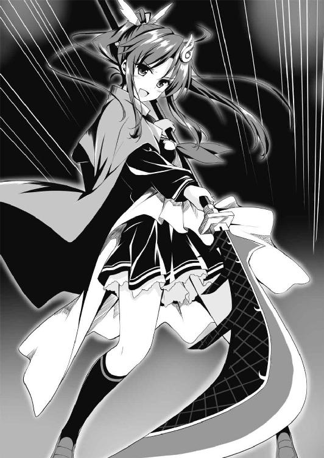
「格のちがいってものを理解してもらえたかしら？ でもあたしは超美しくて超優しい女神だから、降伏すれば命まではとらないわよ。てことで、とりあえず、そうねえ、あんたが持つにはもったいないその剣を全部もらいま......」
しょうか、とあたしがいい終える前に、ガルジャは曲刀を投げつけてきた。
「うっ」
顔面に刃が迫る！ あたしは反射的に飛び退って剣をかわした。ところがその隙にガルジャは立ち上がり、よろめきながら逃げ出していた。
「しまった、あたしとしたことが」
勝ちに奢って油断するなんて......！ くうっ、はずかちぃっ！
「待て！ 逃げんのかー！ それでも英雄か、バーカ！」
追いかけようとしたけど、もう後の祭り。すでにガルジャの姿は遠くなっていた。
......って、今気づいたんだけど、なんとガルジャは頭の裏側にもでかい目玉がひとつついていた。死角なしの視野を持っているってこと？ 強敵との一騎討ちよりも、乱戦で雑兵を倒すことを想定して創造された英雄なのかしら。
「チッ。まあいいわ」
ガルジャは逃亡したし、ほかの二人の英雄は町にいないようだ。とにもかくにも、デビュー戦に勝利ッ！
あたしはガルジャが投げ捨てていった曲刀を拾いあげ、神殿へと足を向けた。
「おらー！ テメーらの頼みの綱のガルジャは剣を捨てて逃げちゃったぞ！ とっとと降伏しないと皆殺しだー！」
ありったけの声で今後の予定を知らせてあげると、神殿の入り口であがっていたさけび声やわめき声、剣戟の響きはすぐに止んだ。
「こ......降伏します......。おいみんな、武器を手放せ」
小隊長らしき男がまっさきに剣を放し、両手を挙げて頭を垂れた。ほかの兵士たちは死んだような顔つきでそれに従った。
「カイネ神、さすがです！ これほどあっさり町をとりもどしてしまうとは！」
ゾルダが顔を上気させて剣を高く掲げる。アンデル兵は大いに沸いた。いつのまにか家々から住人が通りへ出てきていて、彼らも大はしゃぎだ。
「まあ、こんなもんでしょ。ところでゾルダ。ガルジャが落としていったこの剣、捨てるのももったいないからあげるわ。使うもよし、記念にとっておくもよし、好きにしなさい」
あたしが無造作に曲刀をさしだすと、ゾルダは子どものように目を輝かせた。
「ありがたき幸せ！ 下賜されたこの剣に恥じぬよう、今後とも精進いたします」
「そうして。でも、喜んでばかりもいられないわ。出てきたのはガルジャだけ、つまりほかの二人の英雄はどこかへ行っている。どこへ行ったの？」
あたしは薙刀の刃を手近なところにいたナヴレス兵に突きつけてたずねた。
「そ......その......。ホムリス様は今朝早く、配下のハチたちを率いて、アンデリオン郊外の神殿へむかいました」
彼は後ろめたそうにうつむきながらも、すなおに情報を吐いた。よかったわぁ、拷問せずにすんで。そんなことしたらあたしの正義道まっしぐらなイメージに傷がつくし、第一、時間がもったいない。
「あっそ。つまりアンデル側が神を召喚するのを食い止めようってわけね。でも、ざ～んねん。もうすでに、あらゆる神の中で最強を誇るこの女神カイネが召喚されてんのよ」
あ。だけど神殿では......お姫様がダジュラを召喚する予定なのよね。儀式を邪魔されていないかしら。ダジュラはちゃんとタイタンへ来ているのかしら？
まあでも、召喚の儀式を邪魔されたら邪魔されたで、後で改めて呼べばいいわ。あたしを太陽とすればダジュラは月、あたしをホオジロザメとすればダジュラはコバンザメ、要はオマケみたいなものなんだし（あっ。いちおういっておくけど、べつに馬鹿にしてるわけじゃないのよ。オマケって、あるとうれしいものじゃない。ねえ？）。
「んで、ゼイモラはどこ？ 上陸したナヴレス軍の中で、そいつが一番強いんでしょ」
「ゼイモラ将軍は兵二百を率いてアンデリオンへむかいました。アンデル王家に降伏勧告をし、受諾されればよし、さもなくば武をもって攻める予定です」
聞くなり、アンデル兵はざわめき出した。ゾルダが「いつのことだ！ いつ町を出た！」と食ってかかる。
「ホムリス様も、ゼイモラ将軍も、ここを発ったのは未明のことです」
「未明だと！ まずい、アンデリオンが！ 姫様が危ない！」
「ちょっと。あたしが話してんのよ、静かに！」
あたしはうろたえ騒ぐゾルダたちを一喝して黙らせた。
「どうやらゼイモラたちは正規の街道を堂々と進軍、森の間道を抜けてきたあたしたちとは、どこかですれ違いになっていたようね」
「カイネ神、落ち着いている場合ではありません。すぐにアンデリオンへ引き返さねば！」
「ゾルダ、落ち着きなさいよ。あわてて引き返したって、あたしたちがアンデリオンへ到着するのに数時間はかかるでしょ」
「ええ。ですからなおのこと、早くもどらねば......」
「却下よ。ゼイモラはまず降伏勧告をするそうだから、しばらくは時間を稼げるでしょ。もちろん、交渉決裂で戦闘が開始される可能性はあるわよ。だとしても、二百ぽっちの兵でしょ？ それを率いているゼイモラがどんなに強い怪物でも、しばらくは持ちこたえるはずよ」
「............」
「それより、あんた。見たところ、このコルドンの町で略奪や放火が行われた形跡はないわね。ゼイモラってどんなやつなの？」
あたしはナヴレス兵に視線をもどした。
「将軍は人格者です。そのような行為は厳しく禁じておられます」
「ふーん。いきなりアンデリオンを攻めるんじゃなく、まずは降伏勧告をするってあたりから考えても信用してよさそうね」
あたしはしばし考えをめぐらせた。
「ゼイモラはこの町に百人前後の兵を残し、ガルジャに留守番をまかせていたようだけど......。あんたたちはここでなにやってんの？ あ、待った。わかったわ、町の鉱夫たちをかき集めて、一刻も早く神粘土の採掘を始める気だったんでしょ」
「......そうです」
露骨な侵略戦争を絶賛遂行中の魔神ナタスは、当然、アンデル以外の国も敵に回しているはず。やつはより多くの神粘土を、それもなるべく迅速に手に入れたがっているわけね。
それはこのカイネにとっても同じこと。あたしが最優先すべきは強力な神粘土の入手だ。
「よーし、それじゃ今後の方針を発表するわ」
あたしは手早く指示を出すことにした。
「ゾルダ、町にいるすべてのナヴレス兵を武装解除させ、軟禁しなさい。それがすんだら鐘楼に見張りを配置。それと、逃亡したガルジャを捜索する兵を何人か出して。あ、見つけても無理に倒そうとしなくていいわよ、どこへ逃げたかさえつかめば、後であたしが料理するから。そのほか町の住人から情報を集めたり、もろもろ......まかせていいわね？」
「はっ！」
「そしてあたしだけど、今からすぐ坑道にもぐって強力な神粘土の探索を開始するわ。だからゾルダ、坑道の案内ができる者と、すぐにばりばり働ける体力自慢の鉱夫を選出してここへ集めなさい」
「アンデリオンにはもどらないのですか？」
ゾルダは上目づかいにおうかがいを立てた。
「さっきもいったでしょ、今からあたしたちがアンデリオンへむかっても到着するのは数時間後よ。希望的観測だけど、お姫様がダジュラの召喚に成功しているなら、ホムリスやゼイモラはダジュラにまかせちゃっていいんじゃないかしら」
「ダジュラ神とはそんなにも強い神なので？」
「あたしほどじゃないけどねー。仮にホムリスの妨害にあってダジュラの召喚に失敗していたとしても、ゼイモラがアンデリオンを陥落させるまでにはそうとうな時間がかかるはずよ。お姫様だって馬鹿じゃないはずだから、いざとなれば交渉を引き延ばして時間稼ぎをしてから、降伏勧告をいったん受け入れるはず。無血開城なら人的損害もないしね」
「はあ、しかし......」
「はっきりいうとアンデリオンなんて陥落しちゃってもいいのよ。それよりあたしたちが今なすべきは、坑道にもぐって神粘土をかき集めることなの。それさえあれば、あたしが強力な英雄や魔法の武器を創造して、かんたんにアンデリオンを奪還できるんだから。わかったぁ？」
「な、なるほど。一理ありますな」
「一理どころか百理も千理もあるってーの。......ん？」
あたしは町の通りに視線を飛ばした。あいちゃんがちょこちょことした足どりで走ってくる。猫耳をしているのは伊達じゃなく、ネコ科動物のすばやさを連想させるスピードだ。
「あいちゃん、お留守番中、いい子にしてた？」
「うん！ あいちゃん、いいこ」
「ん～よしよし！ それじゃあね、あいちゃん。これから、あいちゃんにもお仕事してもらうんだけど、いい？」
「おしごとって、なあに？」
「これからね、この町の坑道に入って神粘土を探すのよ」
「かいねちゃんが、ばななつくる、いし？」
「そう、それ！ あいちゃんにはね、その石がどこにあるかわかるのよ」
あたしがこのタイタンで初めて創造した記念すべき英雄であるこの聖霊アイスは、ただかわいいだけがとりえの猫耳幼女じゃない。あたしは、ある能力を付与してこの子を創造した。
その能力とは！ 神粘土探知能力ッ！
魔神ナタスとナヴレス軍に対抗するには強力な神粘土が大量に必要だ。それさえあれば英雄や武器をばんばん創造できる。だからこそ、まずは神粘土の取得をスムーズに進める能力を持った英雄が必要なのよ。
「ゾルダ、はやいとこ準備を整えて。あ、坑道内で必要になるかもしれないから、念のため飲み水や食料や松明も用意しておくのよ」
指示を下し終えたあたしは兵に命じて手近な民家から椅子を持ってこさせ、腰かけた。
あいちゃんを膝の上に抱き上げる。猫耳をぴこぴこさせているのがきゃわわだ。さらさらヘアーをなでなでしていると、戦闘の興奮が静まってゆく......。
ふうっ、とあたしはひと息ついて、デビュー戦の勝利の余韻をしみじみと味わったのだった。
ＳＣＥＮＥ５
我こそは雷の化身。万雷を鳴らして敵を討たん！
────雷撃パリエル
頰を撫でる優しい風。木漏れ日が織りなす美しい陰影。ひと呼吸するたびに胸の中を洗ってくれる木々の香り......。
私たちを乗せた羊は、リズミカルな蹄の音を立てて森の踏み分け道をたどっていった。時折、小鳥のさえずりがその音色に変化を加える。
まだ生まれたての私は世界の美しさを全身で感じとり、楽しんでいた。
ただし、同時に私は、のどかな風景に身を置きつつも周囲に気を配っていた。
「うーん。あくびが出ちゃうな」
いっぽう、私を創造した闘神ダジュラとやらは、ゆるみきった態度だ。
（......だいじょうぶなのか、こいつは？）
私は彼の様子を危ぶみ、苛立ち気味の視線を送った。
「おや。どうしたパリエル、おれの顔を見ているが......なにかついているか？」
「べつに」
「フッ。隠すことはない」
スゥー、とダジュラは深く息を吸った。
「『闘神ダジュラは、かくべつ色好みというわけでもないのに、あらゆる次元、あらゆる世界で多くの美女や美姫にいいよられてきた。なぜなら、ダジュラが常に発散している最強の雄のオーラが、彼自身も知らず知らずのうちに雌を引きつけてしまうからだ！』」
ダジュラは自慢げに語ると、「どーだー」といわんばかりに私を見た。そのニヤけた顔といったら！ まったく、聞いているこっちが恥ずかしい。
私はパチンと指を鳴らして小さな稲妻を放ち、ダジュラの額にあてた。
「うあうっ！ 痛いじゃないかっ！ てゆーか、いきなりなんだっ！」
「ダジュラ、もっと周囲に気を配ったらどうだ。まったく、状況を理解しているのか？」
「え。状況......？」
「この島にはすでに魔神ナタスなる神が軍勢を送りこんでいるのだろう？ すでに町がひとつ占領されているのだろう？ 私たちは今、その町へむかっている。着いたらどう攻めてこれを解放するか、手立ては考えているのか」
私の言葉を聞いて、案内役のリリーもダジュラの顔を見た。彼女もまた、ダジュラののんきすぎる態度に危惧を抱いていたのだろう。
「ああ、まあ、うん」
「じゃあ、いってみろ。どんな策だ」
「それは、ええと......ま、まだ秘密。いや、待てよ？ 町を占領している敵の数とか、そういう情報を現地で確認しないと策の立てようがないな。うん、そうだ。てことは策を立てるのはまだ早い」
くっ......。予想してはいたが、こいつ、今の今までなにも考えていなかったな。
「ダジュラ、この森をよく見ろ！」
私は声を荒らげた。
「森？ さっきから見ているけど」
「そういう意味じゃない。この森がどういう地形なのか理解しているか？ 歳を経た巨木がたくさん生えていて、樹木と樹木の間隔は広いものの見通しが悪い。つまり敵に発見されにくい反面、私たちも敵を発見しにくい」
「んっ？」
「神殿をハチの大群が攻撃してきたことから考えて、敵は情報収集のための斥候や小部隊をすでに島のあちこちに放っている。そうした敵の『目』はこの森にもいて、すでに私たちを発見しており、見通しの悪さを利して奇襲をかけるべく、音もなく迫っているかもしれない......。またこの森は、ハチと戦った開けた草原とはちがい、樹木が障害物となる。このため、私が雷撃を放ってもまとめて大量の敵を倒すことはできない。だから、周囲には気を配っていなければだめだろう！」
リリーは「その通り」といいたげにうなずいた。ダジュラはといえば、ぽん！ と手を打って「ほう。いわれてみればそうだな......！」などと今さら得心顔をしている。
「パリエルの危惧はわかった。でも、だいじょうぶだろ」
「なにがどうだいじょうぶなのか、根拠を聞かせてもらいたいものだな」
「だって、おれは神だから。雑魚が押し寄せてきたところで、おれがこの魔剣をふるえば......！ 死体が森のキノコの栄養分になるのが関の山だ。フッ、それにな、パリエル」
「なんだ」
「大型の肉食獣は、案外、緊張感もなくのんきに生活している。だって強いから。強すぎて敵らしい敵がいないから、いちいち気を張っている必要なんかないのさ」
聞くなり私の心の内で、ビキッ！ と怒りの感情が青筋を立てる音がした。
「......ダジュラ」
「うん？」
「これでも食らえ！」
私はサッと腕をふるった。さっきよりも大きな稲妻がバチン！ と音を立ててほとばしり、ダジュラの額を直撃した。
「うぶおっ！」
ダジュラは顔をのけぞらせ、感電して髪を逆立てた。とばっちりで感電した羊がブメエエエエエエエ！ といなないて棹立ちになる。ダジュラはバランスを崩して落っこちた。
「こっ......こらぁー！ さっきからなんだっ！ この闘神ダジュラに雷撃を放つなんて、失礼にもほどがある！」
「この程度の雷撃ですませたのだから、ありがたいと思ってもらおう。いちおう聞いておくが、痛かったか」
「痛いに決まってるだろーがー！」
「そうか。だがこれは、私としてはほんのお遊び程度の軽い雷撃だ。ダジュラはこの意味がわかるか」
「意味？」
「ハチとの戦いで感じたが、おそらく私にはダジュラと互角にわたりあえる戦闘能力が備わっている。そうなると......魔神ナタスが創造した敵側の英雄にも、そのくらいの力が備わっていると考えるべきだろう」
ダジュラは目をぱちぱちしばたたいた。
「あ。なるほど、いえてるな」
私はこれみよがしに大きなため息をついた。
「だったらもっと緊張感を持て！ 島に上陸しているナタス配下の英雄たちがすでに斥候の報告で私たちの存在を探知しており、この森で奇襲をかけてきたらどうなる！」
「すばらしい......！」
ところが、どういう脈絡なのか、ダジュラは顔を輝かせた。
「雷撃パリエル！ 美しく、強く、その上、聡明でもある！ こんなにも優れた英雄を創造してしまうとは、さすがだなおれは！」
あきれるあまり、私は開いた口がふさがらなくなってしまった。そんな私を尻目に、ダジュラはにこにこしながら羊にまたがった。うう......頭が痛くなってきた......。
「リリー。もし予期せぬ戦闘が発生したら、君は私たちにかまわずすぐに逃げるんだぞ」
私はひよわそうな少女を気づかって告げた。リリーは「はい、心得ております」と神妙な顔でうなずいた。
「パリエルのいいたいことはわかったよ。確かに、戦いに備えておくに越したことはないな。というわけで──」
ダジュラは鞍のわきに吊るした革袋から本をひっぱりだした。出立の際にお姫様から渡された、あの本だ。もっとも数枚の紙を綴じただけの薄いものだが。
「コルドンへ着くまでに、この神にとっての参考書を熟読しておくか」
「羊の上でなにもせずぼーっと森を眺めているよりはいいだろう」
「じゃ、パリエル。おれがこれを読んでいる間、周囲の警戒はまかせたぞ」
「わかったわかった」
ちらりと目をやったところ、本のタイトルは『神粘土教本 初級編』。願わくば、この頼りない神でも理解できる程度のわかりやすい内容であってほしい。
「えー、なになに。『序 かつてアンデル島の平和と発展に大きく寄与し、賢神と讃えられた神がおりました。その名はザリア。現在も島で深く慕われているこの神は、タイタンを去る前に、後進の神の一助になればとザリア全書なる参考書を著しました。この教本はザリア全書に記されている様々な事柄のうち、神の最も重要な御業である創造術関連の項目から、基本的な部分を抜粋・要約してわたくしがまとめたものです。ご一読ください。──アンより』か」
ダジュラは音読しながら、私に視線をちらちらよこした。真面目にやっているんだぞ！ とアピールしたいのだろうか......。ただ、その本の内容には私も興味があったので、音読してくれるのはありがたかった。
「それで、と。『一 神粘土について』か。『神粘土とは神が創造術を行使するために必要となる鉱石である。神が神粘土をこねながら創造したいものをイメージし、クリエイションと呪文を唱えることにより創造術はなされる。神粘土はタイタン全土に広く存在し、自ら光を放っているため、通常の鉱石との区別は容易である』。ふむふむ。『重要なのは、神粘土が内包している力の大小には差異があることだ。光の強い神粘土ほど大きな力を秘めており、大まかに、Ａ、Ｂ、Ｃ、Ｄ、Ｅ、Ｆの六段階のグレードがある。ここからさらに、各ランクの神粘土は三段階にわけられ、Ｂに近いＣはＣ１、中くらいのＣならＣ２、Ｄに近いＣならＣ３である。グレードの高い神粘土ほど希少であり、グレードの低い神粘土は比較的容易に発見・入手が可能である。なお、Ａよりも強力なＳグレードの鉱石もあるにはあるが、これはごく稀にしか見つからない』」
私は耳をそばだてた。グレード......。興味深い内容だ。
「『神は想像力の及ぶ限り、炎や風を操る力を持つ英雄、稲妻を放つ魔法の武器など、なんでも思いのままに創造できる。ただし、強い力を持つ生き物や器物の創造には、神粘土に神のイメージを具現化するに足る力がなければならない。おおよその指針を示すと、強い力や特殊能力を秘めた英雄の創造に使えるのはグレードＡからＢ、かつ大きさが拳大以上のものである。魔法の武器や鎧の創造に使えるのは、グレードＡからＣまで。グレードＤでは昆虫や植物といった下等な生き物や、即効性のある医薬品、上質だが魔法的効果のない普通の武器防具などが創造できる。グレードＥとＦは日用品や食糧などのありふれたものしか創造できない』。なるほどねえ......」
「ダジュラ。私は？」
たずねずにはいられなかった。
「んっ？」
「私はどんなグレードの神粘土から創造されたんだ？ 教えてくれ」
「ごめん、わからない。お姫様はおれに神粘土を渡した時、グレードについては説明してくれなかったんだよ。気になるか？」
「ええとですね、ダジュラ神がパリエル様の創造に使った神粘土はグレードＡです。正確にはＡ２です。私は神粘土について詳しくないのですが、姫様がそうおっしゃっているのを聞きました」
リリーが答えを教えてくれた。
「Ａ２か。まあまあだな」
私はなんとなくほっとした。本が語るには英雄の創造に使える神粘土はグレードがＢ３以上、大きさが拳大以上のもの。グレードＡ２なら、まず悪くないといえるだろう。
「まあまあ？ そんなことはないぞ、自信をもて！ フッ......パリエル自身が一番よくわかっているはずだ。自分が美しく賢くしかも強大な力を備えた英雄だってことを。パリエルはこの闘神ダジュラが太鼓判を押す、どこへ出しても恥ずかしくない英雄だ！」
「そ、そうか」
私は少々おもはゆい気持ちになった。
「えー、それで」
ぱらっ、とダジュラはページをめくった。
「『二 創造術の注意点』か。なになに......『創造術を行使する際、いくつか留意すべきことがある。第一に、神粘土そのものを生む英雄や魔法の道具は創造できない』。ははあ、神粘土を使って神粘土を増やす、みたいな永久機関はできないんだな。『第二に、神は最初から創造術を行使する力を備えているが、創造術の能力を備えた英雄を創造することもできる。ただしその場合、英雄の創造術は神よりも劣るものとなる。神と同じグレードの神粘土を使っても、品質の劣るものしか創造できないのだ』。ふうん。でも、もし神粘土が大量に手に入ったなら、お手伝いさん的な英雄を創造するのもありかな......。『第三に、神が思い描くものをそのまま創造できるとは限らない。創造術を行使する際に創造物のイメージがあやふやであったり、神粘土のグレードが適切でないとそのような事態が生じる。また厳密には、個々の神粘土には固有の性質・性格のようなものが潜在しているため、それが創造術の結果に大なり小なり影響してくる』。ほほぅ......」
これもまた、神の創造物である私には気になる内容だ。
「ダジュラ、私は？」
「んっ？」
「私は、おおむねダジュラがイメージした通りに創造された英雄なのか？」
「......たぶん」
「なんだ、そのあやふやないいかたは！」
「おれはそう思っているよ。つまり、おれが思い描く通りの英雄が創造できたな、って。いや、ちがうか？ どちらかというと......その......」
「口ごもるな。はっきりいってくれ」
「うん。えーと、おれが思い描いていた美少女より、もっと魅力的な女の子ができちゃったかな」
「......そうなのか？」
「うん」
まあ......悪い知らせではないな。
「そっ、それはさておき、次いこう、次。『三 神の心得』か。『神は様々なものを創造することでタイタンの発展に寄与できる。それがタイタンにおける神の存在価値であり、神が人々にあがめられるゆえんである。しかるに、私がタイタンのほかの神々を観察するに、己の欲望を満たさんがための創造術に傾倒する神がまことに多い。この書を読んでいる後の時代の神よ、以下のことをよく心にとめおくべし。神は生き物を創造できるが、生き物はすべて自由意志を持つ。神の創造物とて、神のいいなりになる奴隷ではないのだ。もし、貴神が善性を持たず己の欲望の追求にのみ神の力を行使するいわば邪神であった場合、遠からず貴神は自らが創造した英雄や武器により滅ぼされることとなるだろう。重ねて警告する、貴神は自らのためにも善性を失ってはならない』」
ダジュラは「フッ」と一笑に付した。
「いわずもがなのこと。この闘神ダジュラは弱きを助け暴虐の徒をくじく、正義の側に立つ神だ......！ パリエル！」
「なんだ」
「まあそんなことはありえないだろうが、万が一、万々が一、このダジュラが道を過ったなら、臆することなくその旨を諫言するがいい。いやそればかりか、このおれが変心し邪神になってしまったなら、容赦なく討ってかまわん。フフ......わかったな」
「じゃあ、早速ひとこといわせてもらいたいのだが」
「えっ。な......なに？ なんかいいたいことがあるの？」
「私の胸や腰をいやらしい目つきでじろじろ見るのはやめてもらいたい」
「そっ、そんなことはしてないぞっ！ だいたい、いやらしい目つきってなんだ。そんな目つき......してるか、おれ」
「してる」
「......すみません」
「以後、注意してもらいたい」
「はい」
ダジュラは案外すなおに私の注意を受け入れた。なにがどうおかしいのかリリーが噴きだし、「もっ、もうしわけありません」とあわてて謝罪した。
「え、えーと、それで、と。『四 神粘土の活用』か。『創造術を理解するには、実際に色々と創造してみるのが一番の近道となるだろう。だが、参考までに指針となりそうな情報をいくつか列挙しておく。まず第一に、創造物の成長について。例えばここにグレードＢ２で大きさもほぼ同じ神粘土がふたつあるとしよう。この神粘土から、それぞれ、炎を自在に操る能力を持つ英雄と、炎を放つ魔法の弓を創ったとする。どちらも似たような戦闘能力を有するかに思えて、さにあらず。英雄、すなわち生き物は創造後、成長して次第に強大化してゆく。対して器物は創造した際に有していた以上の力を持つことはできないのである』。へえー、これってかなり重要な情報だな。長い目でみると武器を創造するより、英雄を創造した方が得になるってことだもんな」
「そうなります。ただ、器物にすぎない魔法の武器の場合、英雄とちがって神に逆らうことはありえませんが」
リリーが口を挟んだ。しかし、彼女ははっとしたように口をつぐみ、おっかなびっくりの目つきで私を見た。
「リリー、気にしなくていい。ところで、ダジュラ」
「うん？」
「いずれ強力な神粘土が手に入ったら、私もその......なにか武器があれば、と思う。つまりダジュラの魔剣のような──」
少々あつかましいかな？ と思いつつも、私はすなおに希望を述べた。
「そんなのお安い御用だ、まかせておけ！ フフ......かわいいパリエルのために、父なる神たるこのダジュラがすてきな武器をこしらえてあげよう！」
「ほんとうか！」
「今のうちに、どんな能力を持つどんな種類の武器が欲しいか考えておくといい。まあ、今はグレードの高い神粘土が手もとにないから、あくまで先の話だけどね」
「よし、約束だぞダジュラ」
「いいだろう、覚えておく。えー、それで、と。『第二に、恒久的効果と一時的効果について』か。『前述と同様、ここにグレードＢ２で大きさもほぼ同じ神粘土がふたつあると仮定する。そして、稲妻を放つ弓と、服用者に一時的に稲妻を放つ能力を付与する薬を創造したとする。つまり、前者は恒久的に稲妻を放てるのに対し、後者はごく短時間だけ稲妻を放てる。この場合、後者を使って放つ稲妻は、前者よりも強力なものとなる。具体的には、グレードＡ３の神粘土から創造した稲妻を放つ弓に匹敵する。すなわち、恒久的な効果に対し一時的な効果は、グレードが二段階上の神粘土の効果を得られる』。てことは......」
「グレードの低い神粘土であっても、一時的に力や反射神経を強化する薬を創造し、それを服用するといった形で戦闘に役立てることができるのだな」
「そうなるな。だけどこれもさっきの項目と同様で、恒久的に役立つ英雄や武器を創造したほうが長い目で見ればお得なんだよな......。次にいこう。『第三に、創造術と負の要因について』か。『これまでの例と同様、グレードＢ２で大きさも同等の神粘土がふたつあると仮定する。この神粘土のいっぽうから火の玉を口から放つ魔犬を創造。もういっぽうからは、やはり火の玉を口から放つ魔犬を、ただし先のものとはちがい、水や冷気に弱いという弱点を持たせて創造したとする。この場合、後者の炎の力は前者より強力なものになる。具体的にはグレードＢ１、すなわち一段階上の神粘土からそのような炎の力を持つ魔犬を創造したのに匹敵する。つまり負の要因......弱点や欠点を付与することで、創造物の長所を底上げできるのだ。同様に、日中のみ光の矢を放てるだとか、月夜の晩だけ肉体に再生能力が宿るだとか、なにがしかの制約を課した能力は、そうでない能力よりも強力なものとなる。ただし、大きな弱点や欠点、あるいは制約などを付与しても、能力の底上げはグレード一段階分が限度であり、低いグレードの神粘土から二段階も三段階も強力な神粘土の効果を得ることはできない』。ふうん、これもかなり重要な情報だな」
重要というか......これは聞き捨てならない情報だ！
「まさかと思うが、ダジュラ。私を創造する際、なにか弱点や欠点を付与したのか？」
こわごわたずねると、ダジュラは顔の前で手を振った。
「いやいや、そんなことはしていないぞ。なにしろ雷撃パリエルは欠点なんてなにもない、完全無欠でみんなに好かれるスーパー美少女な英雄だから！」
「なら、いいんだが」
「でも、弱点を付与すると長所を伸ばした英雄を創造できるのか......。不老不死の肉体だけど日光に弱いヴァンパイア、なんてのがまさにそうだな。そういうやつを創造すれば、同じグレードの神粘土でもより戦闘能力が高いことになる。覚えておこう」
「ちょっと待て」
ダジュラは自分が道を過ったなら遠慮なく諫言しろとのたまった。そうさせてもらおう。
「ん？」
「かんたんにいうが、弱点や欠点を与えられて創造された英雄が、創造主であるダジュラに対して好意的にふるまうと思うか？」
「......あ......」
ダジュラは恥じたように私から視線をそらした。
「そ、そうだよな。うん、そうだな。いや、このダジュラとしたことが思い至らなかった。これじゃ闘神失格だ。パリエル、よく指摘してくれた、ありがとう」
「わかってくれればいい」
私は少しほっとしていた。闘神ダジュラは私の心に疑問符を灯す言動が目立つが、反面、すなおでものわかりが良く、そこは長所だといえる。
「おや。この教本、これでもう終わりか。残りのページは白紙だ......」
ダジュラはぱらぱらとページをめくった。リリーが「なにしろ姫様が大急ぎで、原書から要点のみを抜粋したものですので」と肩をすぼめた。
「そっか。でも有意義な情報ばかりだったよ。ところで──」
ダジュラは空を振り仰いだ。
「太陽の位置から察するに、お昼少し前かな？ パリエル、リリー、おなか減ってないか？」
「それなりに」
「少し減りました。でも神よ、私は我慢できますので、お気づかい無用です」
「いったんここで食事休憩にしよう、そうしよう。いかな闘神ダジュラとて、腹が減っては戦はできぬ、だ」
ダジュラは手綱を引いて羊を止めた。私たちもそれに倣い、羊を止める。
「お食事になさるのですね？ であればダジュラ神、少々お待ちを。ご用意いたします」
リリーが鞍の後ろに紐でくくりつけていた箱をとりはずした。彼女が箱の蓋を開けると、水筒と思しき金属の丸筒が三本、それに指先ほどの黒い丸薬が十個ほど入っていた。
「なんだい、この黒いのは」
ダジュラは丸薬をひと粒つまみあげ、鼻先へ持っていって臭いを嗅ぎ、顔をしかめた。
「これはアンデル島に伝わる戦時食です。薬草を魚の脂で練り固めたもので、見た目と臭いは悪いものの栄養価はとても高く、飲みこむだけで事足りますので時間を節約できます」
「えぇー......。こんな昼食じゃ味気なさすぎる......。あっ、そうだ！」
ダジュラは丸薬を箱へもどし、自分が乗っていた羊へ歩み寄った。
鞍のわきに吊るしていた革袋を開けて神粘土をとりだす。
「フッ。なにしろおれは神、万物を創造できる......！ ここはひとつ創造術の練習も兼ねて、とびきりおいしいお昼ごはんを創ってやろう！」
彼はにこにこしながら神粘土をこねた。
「クリエイション！」
神粘土をこねているダジュラの指の隙間から光がほとばしった。と見えた時にはもう、彼は皿に入った料理を手にしていた。
（ほう......）
湯気とともに立ち昇る妙なる香り！ なんだろうこの料理は。とても食欲をそそる。
「ダジュラ、それは？」
「フッ。これか？ これはな──」
スゥー。
「『みんな大好きカツカレー！ スパイシーなカレーと揚げたてサクサクのヒレカツによる奇跡のコラボレーション！ 闘神ダジュラは美食家としても知られるが、わけても彼はカツカレーを好む。ごはんは新潟県産コシヒカリの新米をかまど炊き、ルーは中辛におろしリンゴを加えたまろやかフルーティー、そしてカツは鹿児島県産熟成黒豚のヒレ肉を上質なオリーブオイルで揚げた贅沢な逸品！ お子様から大人まで誰もが食してほっこり笑顔、いやあカツカレーってほんとうにいいものですね！』」
深呼吸を挟んでひと息にしゃべったダジュラは、「レディファーストだ。パリエル、食べてみるがいい」と気どったセリフとともに皿を差し出した。
私は皿を受け取ると、戸惑いながらも手近にあった倒木に腰を下ろした。
皿には銀のスプーンが添えられている。それにしても、ああ、なんていい香りなんだろう。逆らいがたい誘惑を感じる。
スプーンで茶色の液体と白いつぶつぶをひとすくいし、おずおずと口へ運んだ。
（これは──）
おいしいっ！
「なんだこの食べ物は！ こんなにおいしい食べ物は口にしたことがない！」
私は思わずそう口走っていた。私にとってこれは生まれて初めて口にした食べ物なわけだが、そこは言葉の綾だ。
「フッ。そうだろう、そうだろうとも。ささっ、カツも食べてみるがいい。揚げたてのアツアツだからおいしいぞ～」
カツ、とは衣のついた揚げ肉のことか。この皿に載っているものは、すでにひと口サイズに切り分けられている。
スプーンでひと切れをすくいとり、茶色の液体に浸してから......ぱくっ！
「おいしい！」
私は目を輝かせた。
「よしよし」
ダジュラは満足げにうなずくと、神粘土をこねて「クリエイション！」と唱え、もう二皿、カツカレーをこしらえた。
「さ、リリー。その丸薬はしまってこれを食べるといい」
「えっ。わ、私が食べてよろしいのですか？ 神や英雄が食するのと同じものを？」
「遠慮する必要はない」
スゥー。
「『闘神ダジュラは気さくな人柄で知られる。あらゆる次元を旅し、いかなる敵をも葬り去ってきた無敵に等しい神でありながら、横暴な振る舞いをせず一般庶民にも優しいのでみんなから好かれている。ひとたび怒ればアシュラのごとき鬼神と化す彼の神にこのような高徳なる心が備わっているのは、世の多くの弱者たちにとって朗報だといえるだろう......！』あっ、そうそう、カレーといえば牛乳だな。クリエイション！」
さらにダジュラは白い液体が入ったコップを創造し、「はい、これ」と私たちに配った。
早速、私はその牛乳なる液体も口にしてみた。すると喉に残ったカレーの辛さが中和された。いい。じつにいい......！
「おいしい！ 私、こんなにおいしい食べ物を口にしたのは初めてです！」
リリーもカツカレーがいたく気に入った様子で、目を輝かせてせっせとスプーンを動かした。ダジュラは満足げにうなずくと、自身もカツカレーを食べ始めた。
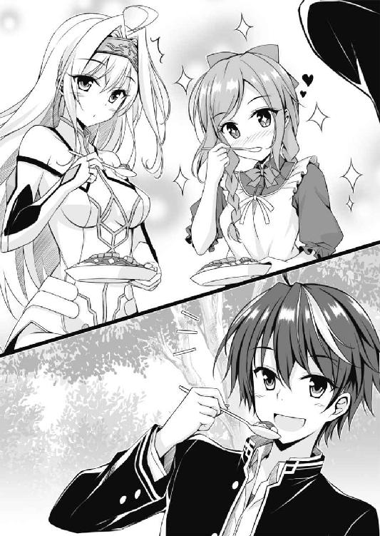
......。
............。
「ふぅー」
食べ終えた私は、満ち足りた気持ちで森を流れるそよ風に身をまかせた。至福だ。
「これが神なんですね。神だけが行使できる創造術なんですね。すてきです！」
リリーが手放しで褒めちぎる。ダジュラは得意げな顔だった。
「まったくだ。カツカレーはほんとうにおいしかった。ぜひまた創って欲しい」
私は笑った。
「ところでダジュラ神。食休みをとりたいお気持ちはわかるのですが、コルドンへむかったカイネ神と、なるべく早く合流するに越したことはありません。それにカイネ神は私たちが追いつくのを待ってからコルドン攻略に着手するおつもりかもしれませんし......」
リリーは空になった皿を地面に置いて進言した。私の見たところ、彼女は歳かっこうに似合わぬしっかり者のようだ。
「そうだな。じゃあ食休みは羊の上でとるとして、すぐに出発するか」
ダジュラが腰を浮かせかけた──その時！
私は樹幹に黄色と黒の体色をした生き物がよぎるのを目撃した。
「ダジュラ！」
「なんだよ、大声だして」
「見ろ、ハチだ！ 私たちが神殿で戦ったあのハチだ！」
私が指さすと、樹木の陰でホバリングしていたハチはさっと背をむけた。
「ほう。ハチどもは撤退すると見せかけて何匹か残り、おれたちの後をつけていたのか？」
「私たちのことを仲間に伝える気かもしれない。だとすれば、その前に倒さなければ」
「よしッ！ リリーはここで待て。おれたちは食後の運動をしてくる」
「はっ......はい！ どうか、お気をつけて──」
ダジュラは私に目で合図すると魔剣を引き抜いて走り出した。私も急いでその後を追う。
神殿での戦いですでにわかっていることだが、このハチが飛ぶスピードはさほど速くない。また鳥とちがい地上五、六メートルの低空飛行しかできないようだ。黄色と黒の体色はひどく目立つし、森の木々に阻まれても後を追うのは容易だった。
ぐんぐん距離が縮まる。
もう少しで追いつく！
私は右手に電光を閃かせた。樹木が邪魔だが、射線が確保できたなら、私の雷撃で──。
いきなり木立ちが途切れて、見通しの良い石畳の街道に出た。
だが、雷撃を放つ絶好のチャンスにもかかわらず、私はぎょっとして固まってしまった。というのも、私たちが街道に出た瞬間、周囲の茂みからザアッ！ と音を立ててたくさんの兵士があらわれたのだ。
その兵士たちはみな、黒鉄の胸当てを装備していた。
（アンデル兵とはいでたちがちがう。さてはナヴレス兵か！）
私はあのハチが、私たちをここへおびき出すための囮役だったのだと悟った。
＊ ＊
ナヴレス兵はあっというまに私たちを取り囲む円陣を組んだ。
「まんまとおびき出されたな、神にしてはマヌケなやつよ」
きしるような声。もしやと思って見やると、案の定、神殿でとりにがした六枚羽根の大きなハチ、千針ホムリスだ。手下のハチを従えてナヴレス兵の頭上を旋回している。
「フッ、やれやれ。なんとなくそんな気はしていたが、やっぱりそうだったな」
ダジュラはのんきな口ぶりで返すと、キザったらしく髪をかきあげた。
「......神か？」
「こいつらが、ホムリス様がいっていたアンデルの神と英雄？」
兵士たちはそんなダジュラの落ち着き払った態度が不気味に感じられるのか、剣や槍を構えてはいるものの、目に怯えの光が見てとれる。
「ダジュラ、油断するな。雑兵とはいえ数が多いぞ」
私はダジュラののんきさに内心舌打ちしたい気分でささやいた。
「この闘神ダジュラにとっては雑兵だのハチだの、そんなのいくらいても同じことだ」
ダジュラが声高にうそぶくと、ナヴレス兵はいよいよ不安げな表情になった。
（確かに私とダジュラの力をもってすれば、雑魚はどうとでもなるだろう......しかし......）
ナヴレス兵の中に、目立って大きい巨漢がいる。
見上げるほどの巨軀。それを上から下まで重厚な黒い甲冑で覆っている。長柄の先に鉄球がついた得物を担ぎ、そのたたずまいに私はいいしれぬ圧力を感じた。
そいつは私とダジュラをじっと見ていた。顔は兜にすっぽりと覆われ、わずかに赤い双眸がのぞいているばかりなので表情は読みとれない。ただし、動じたところがまったく感じられない視線だった。
「ゼイモラ将軍。黒い服のやつが神殿で呼び出された神で、とてつもない切れ味の魔剣を使います！ そばにいる女はその神が創造した英雄で、稲妻を放ちます！」
ホムリスが大男の肩先に顔を寄せて告げた。ゼイモラと呼ばれた巨漢は鷹揚にうなずき、じわりと前に出た。
（............！）
なんという威圧感だろう。こいつは明らかにほかの者とはちがう。
「神殿ではホムリスたちが世話になったようだな」
大男は低くて深みのある、陽光を陰らせるような声を発した。
「名乗らせてもらうとしよう。おれの名はゼイモラ。牙面ゼイモラだ。ナタス神より、このアンデル島を攻略する部隊のいっさいをまかされている」
「ていねいな自己紹介、いたみいる。こちらも名乗るのが礼儀だな。おれの名は闘神ダジュラ！ そしてこの絶世の美少女は、おれが創造した英雄、その名も──」
「雷撃パリエルだ」
私は左手を握った。パチン！ と青いスパークが弾ける。雑兵たちはたったそれだけのことでぎょっとしたように身体を硬くしたが、ゼイモラとやらはあいかわらず動じない。
「ところでお姫様によると、島に上陸したナヴレス軍はコルドンって炭鉱町を占拠したそうだが......それがなぜここにいるんだ？」
ダジュラは世間話でもするような気安さで話しかけた。
「うむ。このゼイモラは無益な殺生を好まぬゆえ、王都アンデリオンへむかい、降伏勧告をするその途上だったのだ......。だが、すでに神を召喚したとなると、これを討ち破らぬ限り、王女をはじめ島民たちはおとなしく降伏せんだろうな」
「あれ？ なんだよ、まだ知らないのか？」
ダジュラは肩をすぼめた。
「なにをだ」
「おれよりも先に、王女はすでにべつの神を召喚していたんだぞ。その名も、正義の女神カイネ。おそらくは、唯一、この闘神ダジュラに匹敵する力を持つ強大な神さ」
「なに！ もう一柱、神が？」
ゼイモラはすばやくホムリスを振り返った。ホムリスは仰天したように赤い複眼をちかちかと明滅させ、首を横に振った。
「あ、やっぱり知らないのか。へぇ～。お姫様いわく、カイネはすでにコルドンを解放すべく、兵を引き連れてむかったらしいぞ。知らないってことは、途中で行き違いになったのかな」
「ううむ......」
「それで、牙面ゼイモラ、だったか？ どうする？ 強大な力を持つ神がなんと二柱も、このアンデル島を守るべく降臨した。無益な殺生は好まない、といったな。おれもそうだ、闘神ダジュラは心が広い。お前たちに降伏する気があるなら受け入れてやるぞ」
ナヴレス兵の間に動揺のざわめきが走った。
「将軍！ ガルジャだけで支えられるでしょうか？ いったん、コルドンへ引き上げては」
ホムリスが進言したものの、ゼイモラは沈黙を守っていた。
「ゼイモラ、お前が最高責任者なら早く決めてくれ。おれはコルドンへむかってカイネと合流する予定なんだが、あいつ短気だから、早く会いにゆかないとブチきれかねない」
ダジュラがうながすと──。
「......アンデリオンへ赴くのはひとまず中止にせざるをえんな」
ゼイモラは担いでいた鉄球棒を握りなおすと、木切れでも振るように軽々と振った。
ズン！ と地響きが走り、私の足の裏を震わせた。鉄球は石畳の道路を粉々に砕き散らして丸い大穴をうがっていた。
「ダジュラ神、それに雷撃パリエルか。まずはこの両名を倒し、コルドンへ引き返してカイネ神とやらを討つ」
やる気だ！ 口調は淡々としているが、にもかかわらず、ダジュラよりも迫力がある。
「あれ、そうくるの？ フッ......残念だな、ものわかりの悪いやつで。だが、戦って力の差をわからせなければ、従えといっても無理な話か」
ダジュラは自信満々で魔剣を構えた。青く輝く刃、その切れ味は知っている私なのに、なぜだろう、ひどく胸騒ぎがする。
「同感だ。力を持つ者は、互いを比べあって上下関係をはっきりさせねば人間関係を築けぬ。ホムリス、ここはおれにまかせて手を出すな。ほかの者もさがれ、巻きこまれて怪我をしてはつまらんぞ」
ゼイモラは得物を両手持ちにしつつ命じた。雑兵たちが後じさりし、囲みを広げる。
「ふふん。だ、そうだ。パリエル、ここはおれにまかせて手を出すな。一対一の戦いでこの闘神ダジュラとやりあおうとは無謀な......。だが、嫌いじゃない」
「しかし、ダジュラ──」
「だいじょうぶだいじょうぶ、パリエルはそこで見物してろって！」
ダジュラは余裕しゃくしゃくだった。まあ確かに、私が手を出せば敵側もホムリスや雑兵が戦いに加わってくるだろうから......ここは下手に手を出さないほうがいいのか？
「ダジュラ、気をつけてくれ。そのゼイモラという男、かなり自信があるようだぞ」
「自信を持つだけなら誰だって持てるさ。自分より大きな存在にぶつかるまではな......！」
私はダジュラに心配げなまなざしを送ったものの、ひとまず彼のそばを離れた。
ナヴレス兵がつくる囲みの中、ゼイモラとダジュラは互いに睨みあった。
ゼイモラは腰を低くして得物を振りかぶり、まっこうから撃破しようという構え。
対してダジュラは、剣を無造作にさげただけの構えだった。自然体といえば聞こえはいいが、ゼイモラの圧倒的な体軀と比べてダジュラはひ弱に見える。
「参る！」
ゼイモラが吠えた。と同時に彼の巨体は、爆発的な勢いでダジュラに迫った。
（迅い！ 重厚な甲冑に身を包んでいるとは思えぬスピード！）
鉄球が唸りをあげて振り下ろされた。私はダジュラの目が、予想を上回る敵の力に驚愕して見開かれるのを目撃した。
ただし、それでもなおダジュラの口もとには不敵な笑みが浮かんでいた。
彼はゼイモラとは対照的に、すっ......と小さな動きで体をさばき、鉄球をかわしざま剣をふるった。
岩をも斬断する魔剣の刃が、ゼイモラの武器である鉄球棒、その中ほどを襲う。
（そうか、最初からそれが狙いか）
私はダジュラの余裕の正体を知った。彼の魔剣をもってすれば敵の武器を両断できる！
はず、だったのだが──。
魔剣と鉄球棒が打ち合った瞬間、ギャリンッ！ と金属音が鳴って火花が散った。
「えっ？」
ダジュラは驚きの声をあげた。
いったいなぜ？ 魔剣は弾かれ、反動を食らったダジュラは吹き飛ばされた。彼は五、六メートルも吹き飛ばされ、背中から激しく地面にたたきつけられた。けれどダジュラは身体がバウンドしたのを利して空中で姿勢を立て直し、足から地面に降り立った。
「えっ？ ええっ！」
ダジュラは再度うろたえた声をあげ、魔剣の刃とゼイモラに忙しく視線を往復させた。
「ホムリスによれば、かなりの切れ味を誇る剣とのこと。さだめし、良質の神粘土から創った剣なのであろうな」
ゼイモラはゆっくりとダジュラに向き直った。
「だが、このゼイモラの武器と鎧はナタス神よりたまわった特別な品。岩よりも硬く、魔法の剣であっても通じぬ！」
「なんだってぇー！」
ダジュラは見ているこっちがぐったりするほど、すなおに驚いた。
（なんてことだ！ つまりダジュラはこの怪物に通じる攻撃手段を持っていないのか？）
私はどっと冷や汗が噴きだすのを感じた。では逆にゼイモラは？ ダジュラを激しく吹き飛ばした光景から察するに、ゼイモラがとてつもない膂力で振るう得物はダジュラにじゅうぶんなダメージを与えられるのではないか？
「ダジュラ神。覚悟はよろしいな」
ゼイモラは死刑宣告のように告げると、再びダジュラめがけて突進した。
「うわあっ！」
ダジュラは悲鳴じみた声をあげて大きく跳躍し、横殴りに襲ってきたゼイモラの鉄球をかろうじてかわした。
けれど着地した膝は震え、顎はわなないている。さっきまでの余裕は完全に失われ、敗北は時間の問題としか思えないありさまだ。
「おおっ、さすがは将軍！」
「ゼイモラ様！ ゼイモラ将軍！」
ナヴレス兵はいっせいに沸いた。ゼイモラは気を良くしたように軽く得物を一回転させると、鉄球をぴたりと正面に据えて突きの構えをとった。
「な、なかなかやるな。だけど、おれは神だ！ そこんとこ忘れてないだろうな！」
ダジュラは右手で魔剣を構えたまま、左手をポケットに入れて小さな神粘土をとりだした。
「クリエイション！」
神粘土をこねながら唱える。創造したのは丸い小さな錠剤で、ダジュラはすばやくそれを口に放りこんだ。
スゥー。
「『この薬の名は、ストレングス！ 薬学の知識もある闘神ダジュラにはこのような薬を創るなど造作もないこと......！ この薬には服用者の力を一時的に増大させる効果がある！』というわけで、ゼイモラ。ここからが本番だ！」
威勢よく言い放ってダジュラはゼイモラに斬りかかっていった。
ゼイモラのはるか手前で跳躍し、猛禽類が獲物に襲いかかるように、上をとって打ち下ろしの激しい一撃をたたきつける。
「ぬうッ」
ゼイモラはうなり声をあげ、得物を下から打ち上げた。
ガァン！ と、さっきよりも激しい金属音が響き渡った。両者の力が拮抗していることを示すように、得物を打ち合わせたダジュラとゼイモラの姿は一瞬、停止して見えた。
が......直後、ダジュラは大きく弾き飛ばされた。
「な──なんでだ！ 神粘土がダメなのか？ グレードが低くて効果が小さいのか？」
着地したダジュラは手が痺れたのか魔剣をとりおとしかけ、あわてて柄を握りなおした。
ゼイモラはくぐもった笑い声をあげた。
「神は神粘土を用い、状況に応じて必要な品を創造できる。ゆえに神はタイタンにおいて最強の戦士。なればこそ、これ以上の力を持たぬうちに討ちとらねばな」
脅し文句を受けてダジュラは顔を青くした。
（くっ......）
私は身構えた。私が加勢しなければ、ダジュラは死ぬ！
「ダジュラ、離れろ！」
私は足の裏に電場を生じさせた。
ダン！ ダン！ ダン！
同極面を接したふたつの電場を生成し、斥力を使ってジグザグに宙を疾る。ゼイモラのはるか頭上に舞う。全身からありったけの力を集める。
「招雷！」
さけびざま、両手首をクロスさせてゼイモラにむけた。私自身の目がくらんでしまうほど激しい光が閃く。暴力的な轟音を奏でて稲妻がゼイモラの巨体へと迫る──。
「むッ」
ゼイモラの足は飛び退ってかわそうとする動きを見せたが、とうていまにあうものではない。第一、雷撃は金属に吸い寄せられる性質を持つ。金属製の武器と鎧をまとっているゼイモラは、自ら雷撃を招いているのも同然だ！
大男はまともに稲妻を食らった。
「ゼイモラ様！ お、おのれ、一騎討ちなのに卑怯な真似を！」
ダジュラのそばに降り立った私にむかって、ホムリスが憎々しげにわめいた。
「それはダジュラとゼイモラの問題で、このパリエルの知ったことではない。だいたいそんなことをいうのなら、この小さな島に軍団を送りこんできているお前たちこそなんだ！」
私はやり返したが、視線はホムリスではなくゼイモラに注いでいた。
（やった......はずだ）
ありったけの力を振り絞り、私が放てる最強最大の雷撃を浴びせた。ということは？ まさかと思うが、もしこれが通じなかったら私にゼイモラを倒す術はない。
ゼイモラの鎧の隙間からは、微かに煙が立ち昇っていた。そしてそれは焦げ臭かった。
しかし、私は息を吞んだ。やつの兜が動き、赤い双眸が私を見据えたではないか！
「たいしたものだ、雷撃パリエルとやら。かなり良い神粘土から創造された英雄と見受ける。でなくば、これほどの稲妻は放てまい」
怪物はしゃべった。その抑揚は先ほどまでと変わりのない、落ち着いたものだった。
「だが、このゼイモラには通じぬ。炎、稲妻、酸、冷気......そうした特殊な攻撃に耐えられるよう、ナタス神が強靭な肉体を授けて創造したこのゼイモラには、な」
つまりこのゼイモラは、防御力に本領がある英雄というわけか！
「そしてこの鎧。これもまた強力な神粘土より生み出されたもので、たいがいの斬撃や打突は効かん。おれは無敵だ。不死身だ！」
ゼイモラの自信に満ち溢れた言葉は私の耳の底を打ち、心の深い部分へと浸透した。
「ダジュラ神。雷撃パリエル。かなわぬと知ってこの場で降伏するなら、ナヴレスの将として取り立ててもらえるよう、責任をもってナタス神にとりなしてやるが、いかに！」
私は恐怖していたこともあり、激しく心が揺れてしまった。
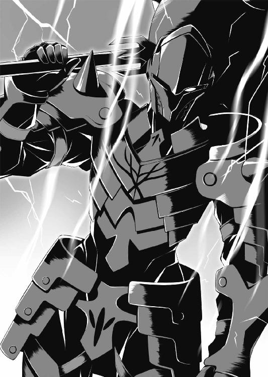
私はダジュラに創造された。でも、だからといってダジュラに義理立てする必要はない。この状況を冷静に検討すると、降伏する選択肢もある。というより損得勘定で話をするなら、そのほうが良さそうに思える。こんな『闘神』などと名乗っているが口ばかりでかっこつけたがりの頼りない男についていったら、私の将来はどうなってしまうのか不安だ。
と......。
「パリエル。闘神の名が泣く不甲斐なさですまない。こいつ、見かけによらず紳士的みたいだし、お前は降伏しちゃってもいいぞ」
ダジュラがそっとささやいてきた。私は意外な言葉に驚いて彼を見た。その時にはもう、ダジュラはパッと身を翻していた。
「やるな、ゼイモラ！ だが、これで勝ったと思うなよ。次はこうはいかないぞ！」
捨てゼリフを吐き、ダジュラは囲みをつくっている雑兵に斬りかかった。彼らの盾や槍をすぱすぱ切断する。魔剣の切れ味に恐れをなし、雑兵どもは悲鳴をあげて逃げまどった。
それっ、とばかりにダジュラは跳躍し、雑兵たちの頭上を飛び越えた。そのまま街道わきの森へ入り、一目散に逃げてゆく。
「ダジュラ！」
気づいた時には、私は雷跳で雑兵たちの頭上を越え、彼の後を追っていた。
（ああっ、なぜだ。こんなやつ放っておいてもいい気がするんだが──）
走りながら後悔の念がよぎった。なぜそうしてしまったのか、自分で自分がわからない。もしかしてダジュラみたいなダメな神に創造された私は欠陥品なのか？
「ええっ！ パリエル、おれについてきてくれるのか？ うれしいっ！ パリエルは優しい子だっ！ いい子だっ！ フッ、まあパリエルをそういうすてきな女の子として創造したのはおれなんだけど」
並走する私を見て、ダジュラは顔を明るくした。
「そんなことをしゃべっている場合か！ 追ってくるぞ！」
背後をちらりと振りかえる。ゼイモラが「逃げるだと？ それでも神か！」と怒鳴っている。雑兵たちは当然のごとく後を追ってきていた。そしてそれ以上のスピードで、ホムリス率いるハチの群れが、宙を飛んで猛追してくる！
「招雷ッ！」
私は走りながら後方めがけて数条の稲妻を放ち、追っ手を牽制した。いや、牽制しようとした。けれどほとんどの稲妻は森の樹木に当たってしまい、牽制にならなかった。
「くそぅ、闘神ダジュラともあろう者が敵に背をむけて逃げるなんて情けない。でもパリエル、次は勝ってみせるから。カイネと合流して、炭鉱の町を解放して、グレードの高い神粘土を入手すれば！ その神粘土でパワーアップアイテムを創れば！ あんなやつ超余裕だから！」
「いいわけはいい、とにかく走れ！」
まったく、なんなんだこの男は。この分だと、ダジュラの知り合いのカイネとかいう女神にも期待はできない。首尾よく合流を果たしたとしても、あの強大なゼイモラを討ち破りこの島に平和を取りもどせるのか？ はなはだ疑問だ。
それでもとにかく今は逃げるしかない。追っ手を振り切らなければ。
「うあっ！」
いきなり、ダジュラが大声をあげて足を止めた。
「なにしてるんだ！ なんで止ま......」
彼の背中をたたこうとして、私はその手を途中で止めた。
樹木が唐突に途切れ、そのむこうは断崖になっていた。のぞきこむと下には音を立てて川が流れている。
「うわああああ！ なんじゃこりゃー！」
「なにって、断崖絶壁だろう。助かった！」
この崖を渡れば、敵のうち追ってこられるのは飛行能力があるホムリスとハチだけだ。雑兵たちやゼイモラだってハチに運んでもらえば崖を渡れるだろうが、それには時間がかかるはず。すなわち、私たちにとって最大の脅威であるゼイモラの追撃を振り切れる。
私はすぐさま雷跳で崖のむこうへ飛ぼうとしかけたものの、ダジュラが「うわー！ 助かってないって！ 万事休すだって！」とわめくのを聞いて、ハッと気づいた。
この崖、むこう側までは数十メートル、高さも同じくらいある。つまり飛行能力のないダジュラでは、崖のむこうへ渡ることも、下へ降りることもできない......！
といって、もたもたしている暇はない。
「ダジュラ！ 神粘土で薬を創れ！ 一時的に身体が軽くなる薬とか、そんなやつを！」
「いやっ、あのっ、ポケットに移しておいたのは、さっき薬を創った神粘土だけなんだ」
なにー！
「いたぞ、逃すな！」
声が聞こえた。振りむくと、ホムリス率いるハチの群れが樹木の間を器用に縫って飛び、もうそこまで迫っている。
（ああもう、しかたない！）
私は覚悟を決めた。
「ダジュラ、つかまれ！」
ダン！
私はダジュラの手を強く握り、雷跳で崖のむこうの空間へ飛び出した。
ダジュラをつれて雷跳で飛べるのか？ 自信はまったくなかった。だが、仮に飛べなかったとしても落下のスピードは殺せる......はずだ。
ダン！ ダン！ ダン！
内なる力を振り絞り、次々に電場を生成して斥力で跳ね飛ぶ。
「ああっ！ だめだ！」
私は悲鳴をあげてしまった。やはりダジュラと一緒では重量オーバーだ！ それにバランスをうまくとれない！
私はダジュラの手をつかんだまま、心で思い描くのとはかけ離れたぶかっこうな軌道を宙に描き、頭を下にして落下していった。
（なんてことだ。なんでこんなダメなやつのために、私は......）
猛烈な勢いで水面が迫る。落下速度はぜんぜん殺せていない。
それに崖の上からはわからなかったが、この川の流れの速さときたらどうだ。こ、こんな激流に吞みこまれたら......。
「パリエル！」
不意にダジュラの手が伸びて私の身体を強く抱き寄せた。
彼は私の頭に手を回し、自分の胸に押しつけた。
（......あっ......）
それが着水時の衝撃から私を守るための行為だと悟った時、なぜ彼のために窮地に陥る選択をあえてとったのか、わかった気がした。
（この人は......ダジュラは......）
ダメなやつかもしれない。
でも、いい人だ。善良な......人だ。
けれどそれを理解した刹那、世界のすべてが終わるような衝撃がきて、私の意識はぷっつりと途絶えた。
ＳＣＥＮＥ６
神なのにかっこ悪いなんて、ただの人間がかっこ悪いのより恥ずかしいよな。
────坂上 大樹
雑学番組で見たことがある。数十メートルの高さから落下した場合、水はコンクリートに匹敵する硬さになるんだってさ。
おれを連れて雷跳で飛ぼうっていうパリエルの心意気はうれしかった。でもそれは無謀な試みだったんだと知って、おれは全身に鳥肌が立ってしまった。
（だめだ、落ちる！）
おれはとっさにパリエルの頭を腕でかばった。神であるおれや英雄であるパリエルはこの世界の常人よりも丈夫な身体のようだ。しかし、この高さでも助かるのか？
（カイネ！ おれがタイタンに召喚されたのはお前のせいなんだぞ！ 死んだら化けて出てやるからなっ！）
心の中で悪態をついたのとほぼ同時に、頭をカチ割るような痛みがズンときた。
首が押し縮められたような嫌な感覚。強烈な衝撃が頭から首へ、首から背骨へ、そして全身へと広がった。
もし水深が浅かったら、おれは水底の岩で頭蓋骨を砕かれ、あえなく最期を迎えていたと思う。けれど幸運なことに川はかなり深かった。
（意識を......意識を保つんだ......）
もし意識を失えば、激流に吞みこまれて溺れ死ぬ！
おれはかろうじて精神の焦点を結ぶことに成功すると、水面を目指して必死に足をばたつかせた。顔が水面に出る。ぷあっ、と大きく息を吸いこむ。
「パリエル、無事か？」
首をねじって、抱きしめたままのパリエルを見た。
（......あ......）
彼女は蒼白な顔で、ぐったりとしていた。目は閉じられ、おれの声に無反応。衝撃で気絶しただけだよな？ 死んではいないよな？ 頼む、そうであってくれ！
「生きている！ やつら、生きているぞ！」
「ゼイモラ様！ 崖を下りて追いましょう！ 逃がせば厄介です！」
上から声が降ってきた。ぎょっとして振り仰ぐと、崖の縁から兵士たちが川を覗きこんでいる。くそぅ、逃げきるまでは安心できない。
ただ、幸か不幸かこの川は猛烈に流れが速かった。ことさら逃げようとせずとも、おれとパリエルはどんどん流されて連中との距離は開いてゆく。
「いてっ！」
激流に運ばれる途中、おれは何度か岩に激突した。普通のタイタン人ならそれだけで死んでいたことだろう。でも神であるおれは、激突のたびにひどい痛みが走ったものの、死にはしなかった。
（とはいえ、こうしてパリエルを抱えながら水面に顔を出しているだけでもかなり骨が折れる。体力に余裕があるうちに川から身体を引き上げなければ......。だけど、流れがゆるやかになってくれないと川岸まで泳ぎつけな──んっ？）
流れゆく先へ視線をやったおれは、でかい穴が迫っているのに気づいた。
（この川、洞窟へ流れこんでいるのか？）
すぐに視界が真っ暗になった......と、思いきや！ なんと洞窟の中は暗くなかった。壁や天井がうすぼんやりと光っていて、視界が確保できるぞ。
（あ！）
行く手に、でかくて平べったい大岩が迫っている。あれだ、なんとかしてあの岩の上に！
おれは賭けに出た。左腕をパリエルのわきのしたにさしこんで彼女をしっかりと抱き、右腕をフリーにする。足をばたつかせて身体のバランスを調節する。頭から岩へと突っこむ。右手を前方に伸ばす。
指先に岩の尖った感触が走った。必死に力をこめてその小さなとっかかりを握る。
（やった！ 流れの速さに打ち勝って、つかまることに成功した！）
足を動かし、水中に隠れている岩の下部に足場となる出っ張りを探す。あった！
慎重につま先へ力を集めつつ、膝をかがめていったん水中に没し、強引にジャンプした。
さすがは神！ おれの身体はパリエルを抱きかかえたまま激流のパワーを逃れて宙に舞い、岩の上に転がった。
ハアッ、ハアッ、ハアッ......。
かなり体力を消耗してしまったな。パリエルを岩の上にそっと横たえると、しばらくは息を整えるのに時間を費やした。
「パリエル。おい、パリエル！」
ようやく息が整うと、あいかわらずぐったりとして動かないパリエルの上にかがみこみ、頰を軽くたたいてみた。
返事がない。
（これは、あれか。人工呼吸をしなくちゃならないシチュエーションなのか？）
顔の前に手をかざしてみる。やっぱり息をしていない......。や、やるっきゃないですよね、これ......。
「パリエル、息をしろ！ 息をしろって！」
パリエルの胸に手をあてて何度か押した。するとパリエルはこぷっと水を吐き、次いでけほけほとせきこんだ。
「ああっ、息を吹き返した！ 神様アリガトォー！」
この世界じゃおれは神らしいけど、思わずそう口走っちゃったよ。
「......ダジュラ......？ あっ！」
蘇生したパリエルは目の焦点をおれの顔に結ぶと、すばやく上体を起こした。
「やつは？ ゼイモラは？ ここはどこだ？」
「川に落ちた後、流れに身をまかせていたらこの洞窟に入っちゃったんだ。ナヴレス兵は、おれたちが川に落ちたものの死んではいないのを目撃している。すぐに追撃してくるだろうから、あまりゆっくりしてもいられない。立てるか？」
おれはパリエルが立つのを助けるため、中腰になって右手を差し出した。
その時になって、どきっとした。
超今さらなんだけど、パリエルはずぶ濡れだ。濡れた髪から一滴、また一滴と垂れ落ちる雫......。その雫は肌に張りついたスーツを伝い落ち、胸の谷間や太ももへ......。
不安げなまなざしでおれを見上げている表情もいいなぁ～。それにパリエルは乙女ずわりをしていた。えーとほら、両足をそろえて片側へ寄せ、折り曲げた座り方ですよ。
（これはそそる......！ おれの感性にモロヒットだっ！）
思えばカイネはこの乙女ずわりをした例しがない。あいつ、顔は整っていてまず美少女の部類だけどさー。スポチャンの休憩時に床に座る時って、必ずあぐらだから。どかっ！ とあぐらをかいて、右手を膝の上にポン。男かっつーの。おっさんかっつーの。
（それにくらべてパリエルのこの女の子らしい所作......。ああ、心にグッとくる！）
パリエルはすなおにおれが差しのべた手をとった。
でも、すっかり冷えきったつめた～い手だ。（だいじょうぶかな）と心配しながらも手を引いて起こす。パリエルは立ち上がったものの、ふいに膝が揺れて下半身が崩れた。
「あっ」
反射的におれは彼女の腰に左手を回して支えた。いやこれ、支えるってゆーか、抱き寄せるかっこうになっちゃったよ！
（おおぅ！）
パリエルはかなり体力を消耗しているのか、あらがおうとせず身体をあずけてきた。
（なんてやわらかい身体なんだ！ なんて優しい丸みを帯びたラインなんだ！ 触れている手が溶けちゃいそうなんだけど！）
それに、おれの肩に頭をあずけた彼女の呼吸がまたいい！ 呼気にふくまれる甘やかな香りといったら！ そ、そんでもって、そんでもって、おれの身体に押し当てている胸の双丘の感触っつつつつつつつ！
（さすがだな、おれ！ このおれがイマジネーションのすべてをかき集めて創造した理想の美少女！ ああ、なんて幸せなシチュエーションなんだ！ こんな美しエロかわいい女の子を抱きしめているという事実っ！ ハアアアアアアア、みなぎってきたー！）
おれだって川の水で身体は冷えきっていたはずなのに、すんごい勢いで血流が身体をめぐり、寒さが吹っ飛んでしまった。
そして、ふと思った。
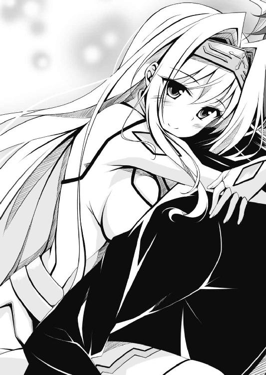
（パリエル、バレンタインデーに本命チョコをくれないかなあ）
この世界にバレンタインデーの習慣はないだろう。でも彼女はおれにとって、そういう、恋がロマンスでラブな女の子になりうる......いや、なって欲しいっ！
おれ、顔まっかになってたんじゃないかな。そこはそれ、闘神ダジュラもお年頃ですから。性欲旺盛な男子高校生ですから。
だけど状況が状況なんで、かろうじて理性が勝った。フッ、闘神ダジュラはいついかなる時でも決して冷静さを失わない。
「パリエル、おぶされ」
おれは彼女をいったん離すと、背をむけてしゃがみこみ、うむをいわさぬ口調で命じた。
「えっ、でも......」
恥じらいが感じられるためらいがちな響きの声。これまた乙女ポイントが高いなぁ～。ちなみにカイネなんて、おれと十年以上つきあいがあるのに、乙女の恥じらいを見せたことが一度もない。信じられるか？ 一度も、だぞ。
「ぐずぐずしてはいられない。連中が追いついてくる前にここを離れるんだ。かなり広い洞窟のようだし、どこか隠れるのに良さそうな場所を見つけてから休もう」
「わかった」
パリエルはぺたんとおれの背中に身体をあずけた。
おおうっ！ おっぱいがおれの背中とぴったんこですっ！ くぅ～、やわらけ～！ それに体重がこれまたいい。なんていうかな、これは女の子の重さだ。重すぎれば女の子らしくないし、軽すぎれば実感が湧かないけど、この重さはそのあたりが絶妙だっ！
「しっかりつかまっているんだぞ」
おれは靴底を軽く擦って、この平べったい岩が滑らないかどうか確認した。コケ生した川の石ってつるつる滑るからな。でも幸い、陽光が届かない場所だからか、この岩の表面にコケは生えていないようだ。靴底の食いつきがいい。
顔をあげて目測する。川のほぼ中央に位置するこの岩から対岸までは四、五メートルってところか。パリエルを背負っていること、体力を消耗していることを考慮すると、神であるおれの跳躍力でもぎりぎり届くか届かないかくらいのきわどい距離だ。
すうっ、と大きく息を吸いこむ。ゼイモラに不覚をとり、パリエルの前で恥をかいてしまったのが苦々しい。ここはひとつ頼りになるところを見せておかなくちゃな。
「それっ」
助走をつけ、力を振り絞って対岸へとジャンプした。
着地成功！ ......って、着地の瞬間、膝がぐらついたけどうまく立て直したぞ。ふぅー。
「よし。じゃあ──」
周囲を見渡す。ほの明るい洞窟ではあるものの外にくらべれば光量が少ないので見通しが悪い。また、あちこちに子どもほどもある岩が屹立しているため物陰も多い。
「洞窟探検としゃれこむか」
正直なところおれも不安だったけど、精一杯の強がりってやつさ。
くすっ、とパリエルが背中で笑った。
「なんだよ、笑うことないだろ」
「すまない。でも、案外へこたれていないようでよかった」
「あのな。いっておくが、この闘神ダジュラが不覚をとることなんて、いいとこせいぜい、一万年に一回あるかないかだ......！ そしてこのダジュラ、その手の強敵との再戦では必ず勝ってきた！ そこんとこ、よく覚えておくように」
「よく覚えておいてもいいのか？ じゃあ、今のセリフ忘れないぞ」
パリエルはまたしてもくすくすと笑った。ぐぬぬぬ。
「ところでダジュラ、この洞窟だが──天井や壁がぼんやりと光っているな」
「ああ」
「ひょっとしてこれは、すべて神粘土なのか？」
あっ！
おれは急いで手近な壁に歩み寄り、目をこらした。てっきり発光性の植物が壁面を覆っているのかと思ってたんだけど、そうじゃない！ 壁そのものがぼんやりと光っている！
「ほんとだ、神粘土だ！ やったー！ 神粘土さえあればなんでも創造できるっ！ ゼイモラやホムリスが追撃してきたところで返り討ちだっ！」
「そうだろうか？」
「んっ？」
「見たところ、薄ぼんやりと光っているだけで目を引くほど強く光っている個所はない。ここにある神粘土は、グレードの低いものばかりだと思う」
「あ......。いわれてみれば......」
お姫様がくれた参考書にも載っていたな。グレードの低い神粘土は容易に見つかるけど、グレードＡやＢといった強力な神粘土はめったに見つからない、と。
「だとすると、ここにある神粘土で創れるのはせいぜい食料品や日用雑貨程度だろう」
パリエルは賢いなあ。うーん、創造主であるおれより頭いいんじゃないの？ これが世にいう、青は藍より出でて藍より青しってやつ？
「フッ。とはいえ、なんでもすぱすぱ切っちゃうおれの魔剣をもってすれば、この壁面から神粘土を切り取るのは容易だ。おなかがすいたら神粘土でカツカレーでも創るとしよう。そのくらいなら、ここにある神粘土でじゅうぶんだからな」
「それはありがたい」
「それに奥へ進めば、強力な神粘土が見つかるかもしれない。よぉし、がぜんやる気が出てきたぞ！」
おれは気を良くして洞窟を奥へ奥へと進んだ。そうとも、強力な神粘土が一個あれば超絶パワーアップ効果のある薬でも創って、ゼイモラなんかあっさり返り討ちだ。今度こそ、パリエルの前でかっこいいとこ見せちゃうからな！
「ところで、リリーはだいじょうぶだろうか」
ふと、パリエルがこぼした。
「ホムリスの手下がおれたちをつけていた以上、敵はリリーの存在も当然知っているよな。けど、やつらは当面、おれとパリエルの捜索に全力を挙げている。だから、リリーはだいじょうぶだよ」
仮に彼女が窮地に陥っていたとしても、今のおれたちには助けようがないんで、心配してもしょうがないんだけどね......。おそらくそれはパリエルだってわかってる。わかっていて、それでも無力な少女を心配しているんだ。いいねぇ、そういうの。パリエルはいい子だっ！
（うん？）
川から聞こえる水音が遠のくのにつれて、洞窟の床は登り調子になり始めた。
（なんだこれ、進めば進むほど勾配がきつくなっていくぞ）
しまいには、かなりの急勾配になった。
（くそぅ、けっこう辛いな）
おれだって大幅に体力を消耗している。パリエルを背負って歩くのは決して楽じゃない。
だけど、ここで弱音を吐いたんじゃそれこそ神らしくないし男らしくない。
（なあに、てきとうなところで『疲れたな』じゃなく『おなかが減ったな』といって足を止め、神粘土を採取して食事をとりつつ休憩って手もある。そうさ、まだがんばれる。まだまだ！ このくらい、どうってことないぞ）
なぜだか、初めてカイネと出会った日の、「かいねは、つおいんだぞっ！」というセリフが脳裏をよぎった。
（あの日、カイネにあっさり打ち負かされて、それが悔しくて、切磋琢磨の日々が始まったんだよな......。おれってけっこう負けず嫌いなタチなんだろう。負けること、かっこ悪いことを、恥ずかしいと思う気持ちが強い性分なんだろう......）
足に力をこめて一歩、また一歩と歩く。背中にはおれの理想の美少女を背負っているんだ、むしろこれは役得で、この時間がずっと続けばいいのにと思うくらいでなくちゃな。
「ところでダジュラ。この洞窟、ほぼ一本道の構造だな。敵が追いついてきたら、隠れてやりすごすのは難しそうだ」
「んっ？ ああ。それだけに、ゼイモラと再戦する前に強力な神粘土を手に入れたい」
「だが、目を引く強い光はなかなか見つからないな」
「たぶん、ＡやＢといったグレードの高い神粘土はかなり希少なんだろう」
「............」
うーん。強力な神粘土なしでゼイモラと再び対峙することになったら、どうしよう。
......って、どうしようもないんじゃないのか？
（いっそのこと、グレードの高い神粘土が見つかる望みは捨てて、ここにいくらでもあるグレードの低い神粘土を使った対抗策を練っておくべきか？）
といっても、食料や日用品しか創れない神粘土じゃなあ......。例えば防御力を高めるために、盾代わりのフライパンを創造したとする。だけどゼイモラのあの攻撃力の前じゃ、そんなもの紙細工同然だろう。それにおれはスポチャンで剣の扱いには慣れているものの、盾の扱い方なんて知らないから、かえって動きを妨げ自分で自分の首をしめることになりかねない。
あれこれ考えをめぐらせながら歩いていると、ふいに広い空間に出た。
「あっ......」
おれが通っていた中学校の体育館ほどもある大空洞だった。高さもそのくらいある。
「パリエル、このへんで少し休憩にしないか。おなかが減ったし、カツカレーでも──」
とおれがいいおえる前に、
「ダジュラ、あれを！」
パリエルが鋭く注意をうながし、前方を指さした。
「んっ？」
「見ろ、明かりが揺れている」
ハッとして前方を注視した。ほんとだ、赤い光が揺れている！ しかも光源は複数だ。赤いのは炎の光だからか？
脳裏に、松明を持った複数の人間が近づいてくるイメージがよぎった。敵か？ 味方か？ いずれにせよパリエルを背負ったままでは戦えない。いったん彼女を......。
下ろそう、と腰をかがめた刹那、なにかが疾風の勢いで接近してきた。
おれがそのスピードにぎょっとした時にはもう、そいつは刃を閃かせて斬りかかってきていた。
ＳＣＥＮＥ７
まったく！ 男ってどうしてこう性欲全開なのかしら。
────三浦 会音
「誰だテメー！ 名乗りやがれぇー！」
こんな洞窟の奥深くで、怪しい人影を発見......！ あたしは一も二もなくそいつに斬りかかった。先手必勝は女神カイネの信条なのよ！
「うわああああああああああああああああああ！ カイネ、おれだー！」
そいつは閃く刃の下で悲鳴をあげた
......あら？ 聞き覚えのある声、見覚えのある顔じゃないの。
「あ」
あたしはあと一ミリで刃が額に食いこむってところで、天意の薙刀を止めた。
薙刀が巻き起こした風がダジュラの髪を吹き流し、そして去る。ダジュラは目をまん丸にして刃越しにあたしを見ていた。
「誰かと思えばダジュラじゃないの。こんなとこでなにしてんの？」
「お、おまっ、お前──お前なあああああああああああ！ 相手も確かめずに斬りかかるな！ だいたい、名乗りやがれといっておきながら、名乗る暇も与えず斬りかかるってなんだっ！ それに、こんなとこでって！ カイネがこの謎世界におれを呼んだんだろうが！ お前ってやつは女のくせにどうしてそう乱暴なんだ！ ヂグジョォー！」
早口言葉みたいな勢いでまくしたてたダジュラは、いいきった瞬間に緊張の糸が切れたらしく、へなへなとその場にしゃがみこんだ。
「あー、ごめんごめん。あたしがブッ倒した四剣ガルジャってやつが、この坑道に逃げこんだんじゃないかなーって考えて。てっきりそいつかと......んっ？」
ダジュラは女の子をおんぶしていた。あたしと目があうと、彼女は少しうろたえた様子でダジュラの背を離れた。
（むっ？）
なんなの、この子。絵にかいたような美少女なんだけど。しかも水着みたいな、肌にぴったり張りつくエロいスーツ着てるんだけど。
聡明なること賢者のごとき正義の女神カイネは、瞬時にその子の正体を見抜いた。
「......ダジュラ。その子はなに？ あんたがタイタンで最初に創造した英雄ってわけ？」
「え？ ああ、紹介するよ。雷撃パリエル！ 電気を発生させ、またこれを自在に操る能力を持つ雷の化身だ」
「ハァ～。ったく、こんな妄想全開のエロいもん創っちゃってまぁ」
「う、うるさい！ パリエルを悪くいうとカイネでも許さないぞ！」
「あっそ」
あたしは薙刀を引いて肩に担いだ。ダジュラは立ち上がったものの、斬りかかられた怒りがおさまらないのか、フー、フー、としばらく荒い鼻息を吐いていた。
「みんな、だいじょうぶよ、こっちへ来て。味方だったわ」
あたしは振り返って呼びかけた。
「カイネ神。こちらの方は......？」
ツルハシを担いだヒゲもじゃの鉱夫が、見た目のいかつさに似合わないおっかなびっくりの口調でたずねる。
「えーとね、この黒い服を着てんのは、あたしの従属神で闘神ダジュラ。そっちのエロいかっこした女の子はダジュラが創った英雄パリエルだって」
「なにおー！ 誰が従属神だっ！ おれはカイネの手下じゃないっ！ あと、その、エロいかっこだなんて失礼なことをいうなっ！ 雷撃パリエルはなあ、カイネなんかとちがって美しく気高く賢い、まさにそう、理想の美少女なんだからなっ！」
ダジュラは顔を真っ赤にしてぎゃんぎゃんわめいた。
「はいはい。要するにそーいうのがあんたの理想ってわけね」
「う......うん、まあ......」
ダジュラは気恥ずかしげにパリエルを見た。パリエルは探るような視線であたしを眺めながら、「彼女がダジュラの知り合いのカイネ神なのだな？」と確認した。
「ああ、こいつがカイネさ。おれの幼馴染で、腐れ縁っていうか、とにかく長いつきあいなんだ。ありえないくらい乱暴者だけど、薙刀の腕前はピカイチ、頼れるやつだよ」
「あんたこそ失礼なこといわないでほしいわね。誰が乱暴者よ、正義の女神であるこのカイネは悪党にしか力を振るわないんだから」
「つい今しがた、おれに薙刀を振りおろしかけておいてなにをいう」
「あれはちょっとした手ちがいよ。あんた男でしょ、細かいことぐちぐちいわないの！」
「いわないの！」
あいちゃんがあたしの真似をしてダジュラにいった。
「んっ？ この猫耳幼女は......カイネが創った英雄か？」
「そうよぉ～。その名も聖霊アイス！」
「それって、おれたちの小学校でよく見かけた白ネコと同じ名前......だよな？ カイネはあのネコをずいぶんかわいがってたっけ」
「そう、そのイメージを基に創ったの。見なさい、このあいちゃんを！ みんなに愛され殺伐とした世の中に清涼な風を吹きこんでくれる、超きゃわいい女の子なんだから。ねー、あいちゃん」
「ねー」
あたしが頭をなでると、あいちゃんはとってもいい笑顔でこたえてくれた。ほんと、かわいいわぁ。癒し系っ！
「ふうん。神粘土から創造した英雄となると、その子ってなにか特殊能力があるのか」
「ええ。あいちゃんはねえ、このタイタンで今後あたしたちが神としてやってゆく上で最も頼りになる英雄なんだから。神粘土を探知する能力を付与して創造したのよ」
「神粘土を探知？ あっ、なるほど！ 神粘土は重要な戦略資源で、これがないことにはなにも始められないもんな。カイネにしては考えたな！」
「なによ、カイネにしては、って。ひっかかるいいかたね」
「いや、褒めてるんだよ。マジでマジで」
「ほんとかぁ～？」
「ほんとだ」
と、パリエルがダジュラの袖をひっぱった。
「ダジュラ、こんな地の底で思いもかけず知り合いと出会い、うれしいのはわかる。だが、世間話に興じている場合じゃないだろう」
「そうだった。カイネ、敵が──ナヴレス兵がおれたちを追ってきている。そいつらの中にゼイモラっていう強力な英雄がいるんだ。おれ、戦ったんだけど歯が立たなくて......。いずれ追いついてくるだろうから、やつらを撃退する手段を講じておかないと！」
「あら。島に上陸した三人の英雄のうち、最強と目されるゼイモラ？ そいつって王都アンデリオンへむかって進軍中って聞いてるけど」
鉱夫たちは不安げにざわついたけど、あたしはべつだんあわてなかった。どうせいずれは戦わなくちゃならない相手なんだから、むこうからこっちへ来てくれるなら手間が省けてありがたい。それにダジュラがすでに手合わせしたとなると、そいつがどんな能力を持っているのか情報を得られる。
「まあいいわ。ダジュラ、さしあたり、ここまでの経緯をお互いに話しましょ」
立ち話もなんなので、あたしはどっかりとその場にあぐらをかいた。
＊ ＊
「......とまあ、タイタンに降臨したあたしはすぐにコルドンへむかったの。この天意の薙刀でばったばったとナヴレス兵をなぎ倒し、お留守番の四剣ガルジャも鎧袖一触！ その後、ゼイモラがアンデリオンへ進軍中と知ったんだけど、強力な神粘土があればそんなやつどうとでもなるから、まずは鉱夫を引き連れて町はずれの坑道へ潜ったってわけよ」
「じゃあ、この洞窟って上へ行くと町へ出るのか」
「ええ。神粘土探知能力を持つあいちゃんに導いてもらって、ここへたどりついたの」
「んとね、このへんにね、かいねちゃんが、ばななつくるいしの、すごいのが、あるの！」
あいちゃんは猫耳をぴくぴくさせながら、自信ありげに胸を張った。
「とまあ、以上がこれまでのダイジェスト。じゃあ、今度はダジュラが話して」
ダジュラはお姫様に召喚されたこと、コルドンの町へむかう途上でゼイモラの前へおびき出されたこと、戦ったものの歯が立たず逃げて崖下へ落ちたこと......を、ざっと語った。
「とにかくゼイモラは強かった。防御力に優れる英雄で炎や稲妻といった特殊攻撃は通じない。その上、この魔剣でさえ斬れない硬度の鎧をまとい、おれを吹き飛ばすほどの怪力ときている。ならこっちもパワーで対抗だ、とその場で腕力を増す薬をクリエイションしたんだけど、神粘土の質が低かったようでたいした効果が出なくてさ......」
ダジュラは敗れたことをかっこ悪いと思っているらしく、パリエルをちらちら見ていた。
「ダジュラの名誉のためにいっておくが、まちがいなく手ごわい相手だった。おそらく、かなり強力な神粘土から創造された英雄にちがいない」
パリエルがいいそえてダジュラを見た。ダジュラは目でうなずいた。
（............）
あたしはその様子にこめかみの青筋がぴくついた。なんなのよこの二人は、お互いに心が通じ合ってる風情なんだけど。あたしはダジュラと十数年もつきあいがあるのよ？ でもパリエル、あんたはダジュラに創造された生まれたてのベイビーでしょうがっ！
またそれとはべつに、あたしはパリエルに対して奇妙な印象を持っていた。
（なんなのかしら、この変な感覚は。この子、顔や身体つきの造作はさほどあたしに似ていない。なのに、見ていると、生き別れの姉妹を前にしているような、鏡の中に隣接世界の自分を発見したような、そんな不思議な印象を受けるんだけど）
パリエルのほうでもあたしに対してそういう印象を受けているのか、しきりとあたしの表情や仕草を気にしている様子なのよ。いったい、なんなのかしら、これ......。
（まあ、いいわ。それより当面はゼイモラってやつにどう対処するかよね）
あたしは頭を切り替えることにした。
（ダジュラは、出会ったころはあたし専用の動くサンドバッグにすぎなかった。でも、あたしとともに切磋琢磨してきた日々は彼を本物の剣士にした。そのダジュラが勝てないとなると、ゼイモラはほんとうに強敵と考えるべきね）
ダジュラに面とむかっていったことはないけど、このカイネに対抗できる剣の使い手がいるとすればそれはダジュラだ、とあたしは思っている。
「なあカイネ。ゼイモラが追撃してきたらどうする？ なにか対抗策はあるか？」
ダジュラは気弱げに上目づかいであたしを見た。
「あるわよ」
あたしは断言した。
「え！ ひょっとして、カイネには強力な神粘土のストックがあるのか？」
「ないわ。お姫様があたしに渡してくれたのはグレードＡの神粘土四個よ。あたしはそのうちふたつを使って天意の薙刀とあいちゃんを創造し、もうふたつはダジュラのために残しておいたの。出発前にお姫様が十個くらい神粘土を渡してくれたけど、それはグレードの低いものばかりだしね」
あたしは腰に吊るした巾着を軽く振ってみせた。道中、鞍のわきの袋に入れていた神粘土を、この巾着へ移して持ってきたのよ。
「神粘土がないなら、どうやって対抗するんだよ」
「斬ればいいんじゃないの」
「え......」
「そいつ、斬撃や打突を無効化するために強力な鎧をまとっているんでしょ。逆にいえば斬撃や打突まで無効化できる不死身の肉体じゃないってことよ。ダジュラが創造したその魔剣、なんでもかんでもおとーふみたいにすぱすぱ斬れちゃうんでしょ？ だったら鎧の隙間......関節部分に刃を滑りこませれば、膝でも肘でもすっぱりいっちゃえるじゃない」
「かんたんにいってくれるが、動いている相手の鎧の隙間を狙うなんて、そうやすやすとできることじゃないぞ」
「でも防御力に優れる英雄であるがゆえに、怪力ではあるものの特殊な攻撃能力は持ってないんでしょ。だったら、できるわよ。ダジュラは一人前の剣士なんだから」
あたしとしては、ダジュラの強さを信頼しているんだぞ！ って発破をかけたつもりだった。なのに、ダジュラときたらあいかわらず自信なさそうな表情のままだった。
「ところでカイネのその赤い刃の薙刀、なにか特殊能力を付与して創造してるのか」
「もちろん！ この天意の薙刀はねえ、所持者のパワーを増す効果があるのよ。ただでさえ最強の女神カイネ様が、さらに強くなって手がつけられなくなっちゃうわけ。あとね、効果音が鳴るのよ効果音が。ほら」
ブオンッ！
あたしが薙刀を軽く振ると、時代劇ばりのけれんみのある効果音が響いた。
「お、いいなあ、効果音！」
「でしょ！」
「おれもいずれ、効果音の鳴る腕輪でも創るか。それはさておき、おれがその薙刀を使ってパワーを増した状態ならゼイモラに対抗できるかな......？」
「え。無理でしょ、ダジュラは薙刀の扱いに習熟しているわけじゃないんだから」
「......だよな。使い慣れていない得物を使おうとすると、間合いのとりかたはもちろん、なにもかも感覚がちがってくるからなあ」
ダジュラは嘆息して洞窟の虚空へ視線を投げた。
「なあ、カイネ。カイネの提案した戦法は一考に値する。けど、もっとかんたんに勝てる方法があるぞ。おれもカイネも創造術を駆使できる神なんだから、この洞窟でいい神粘土を発見すれば、それで一時的にパワーや防御力やスピードが増す強力な薬を創って──」
「あー、だめだめ、そういう考えは。このアンデル島は、大国に侵攻されているちっぽけな国なわけ。それを救うには、さしあたり、島に上陸したナヴレス兵を追い払わなくちゃいけない。でも、その後もあたしたちはナヴレスと戦っていかなくちゃならない。そうでしょ？ だから、強力な神粘土で消耗品にすぎない薬を創っちゃうなんて、そんなもったいないことやってちゃだめでしょ。よほど追いこまれた状況ならいざ知らず、強力な神粘土は末永く戦力となる英雄や武器防具の創造にまわさなくちゃ」
パリエルが人さし指を唇にあてて「一理ある」とつぶやいた。てゆーか、さっきから鉱夫たちの視線がこの子に集まっている。まったく、男って生き物は！
「そうはいうが......もしもの時のために強力な神粘土を確保しておいて損はないだろう。えーと、あいちゃん」
ダジュラはあいちゃんに向きなおった。
「あいちゃん、なの」
「神粘土を探知する能力があるそうだけど、この洞窟のどのへんにいい神粘土があるか、わかる？」
「んとね、あのね、あっちがいいの」
あいちゃんは洞窟の一角を指さして猫耳をぴくぴくさせた。
「ほら、あんたたちなにをぼーっとしてんの？ 壁でも床でも、ツルハシ打ちこんで採掘にかかりなさい。いい神粘土を発見することは、この王国を救うのと同義なんだからね！」
あたしがピシリといいつけると、鉱夫たちは大急ぎであいちゃんが指示した方へむかった。
「ま、あたしが思うに......ダジュラはゼイモラと再戦して神粘土に頼らず倒すべきね」
あたしはダジュラにも、鞭打つようにピシッ！ といってやった。
「なんでだよ」
「あたしが見るに、ダジュラはゼイモラに負けたことで委縮しちゃってる。いつものダジュラって、あたしほど自信の塊ってわけじゃないものの、戦いを楽しめるくらいには肝が据わっているのに......。今はおどおどして別人みたい。あたし、そんなダジュラは見たくないし、これから戦争やろうって時にヘタレがいたって邪魔なだけよ」
ダジュラはむっとした様子で口を尖らせた。
ところがダジュラがなにかいうよりも先に、「カイネ、いくらなんでもそれはいいすぎだろう」と、パリエルがたまりかねた様子で抗議してきた。
「ハン！ 男は甘やかしちゃだめなのよ。本人のためにならないの。そーいうもんなの！」
あたしはこの子がダジュラの創造物であるってことに改めて思いを馳せた。ダジュラはこういう、優しくいたわってくれる女の子を欲していたわけ？
......。
............。
......少々、気まずい空気ね。
「あー、コホン」
あたしは空咳をひとつした。正義の女神カイネの印象が悪くなるといけないから、この話題からはいったん離れておくのが得策と見たわ。
「とにかくゼイモラたちが来る前に、最低限の備えはしておくべきでしょうね」
あたしは腰に吊るした巾着から神粘土をふたつ取りだした。
右手に握りこむ。むにむに軽く揉んでイメージを構築する。
「クリエイション！」
指の隙間から光が溢れ、そして消えた。
「はいこれ。ダジュラ、パリエル、ひとつずつあげるから飲んでおきなさい」
「薬か？」
ダジュラはうさんくさげに、あたしが創った丸薬をしげしげと眺めた。
「そーよ。ダジュラもパリエルも体力を消耗してるでしょ。だから体力回復効果のある薬を創ったのよ。この洞窟に表出している神粘土のほとんどは、鉱夫にいわせるとグレードＥとＦばかりだって。そこまでグレードの低い神粘土じゃ薬を創ってもたいした薬効はないだろうけど、この薬を創った神粘土はそれより多少はマシよ」
どうよ、この気配りは。女の子らしいっ！
「なるほど、飲んでおいて損はないな」
ダジュラは薬を口に放りこんだ。パリエルもそれに倣う。
「ふうん、神粘土で創った薬だけのことはあるな。もう効いてきたのか、身体が軽くな......ウワアアアアアアアアアアアアアアアア！」
ダジュラは大声をあげて口をおさえた。パリエルも「なんだこれは！ なにを飲ませた！」と悲鳴をあげて口をおさえる。
「カイネっ！ なんだこの薬はー！ 口の中が！ 舌がっ！ 苦いっ！ まずいっ！ グワアアアアアアアアアア！」
ダジュラは顔をぐにゃぐにゃにしていた。必死に唾液を絞り出し、口中に広がった苦味成分を薄めようとしているらしい。
「そんなに苦いのぉ～？ ご愁傷様」
ふふん、とあたしは笑った。
「お姫様から、神粘土についての参考書は渡された？ それを読んだ？」
「読んだよ！」
「あれにかいてあったでしょ。神粘土はマイナスの因子を持たせることでプラスの因子を伸ばせるのよ。つまり薬なら、薬効と同時に副作用を持たせれば、より強力な薬効になるってことよ」
「副作用っ？ そんな薬をおれたちに飲ませたのか？ いったいどんな副作用だよ！」
「たいした副作用じゃないわ。体力回復の効果があるけど、超ニガイって設定で創ったの」
「身震いが止まらねぇー！ 嚙まずに飲みこんだのに口の中がっ！ こんな苦さ、おれの人生で初めてだっ！ 覚えてろカイネー！」
「うっさいわね。その副作用の分、薬効は強力なのよ」
あたしはかがみこんで洞窟の床に転がっていた小石を──ぼんやりと光っているグレードの低い神粘土を──ふたつ拾いあげた。
こね、こね、こね。
「クリエイション！」
神コップ、じゃなかった、紙コップ入りのオレンジジュースを創ってダジュラとパリエルに差し出す。
「そんなに苦いなら、これで口直ししなさい」
ダジュラは、んごっ、んごっ、と喉を鳴らしてジュースを飲みほした。パリエルも、ものもいわず一気飲み。
「ぷはっ、ハァー、ハァー、や、やっと口の中が落ち着いた」
ダジュラは額の汗を拭った。
「脂汗が出るほど苦かったの？ まあでも、死にやしないわよ。それより、身体の方は？ 疲労は回復した？」
「......確かに......身体が軽くなりはした......」
パリエルはそういったものの、あたしに恨めしげな視線をむけている。
「あっそ。ならいいじゃない、良薬は口に苦し、よ」
軽く肩をすぼめると、ダジュラはあたしの顔を見ながら苦笑した。
「まったくカイネときたら、たいしたもんだよ」
「なにが？」
「こんな異世界に放りこまれたってのに、なんというか、いつものカイネそのものだ」
「だって、これこそあたしの望んだ人生だもの。正義の女神カイネとして降臨し、悪の神が率いる軍勢と戦って無辜の民を守る！ あたしずっと、こういうシチュエーションを夢想してたわ。それが現実のものとなったんだから、まさに願ったりかなったりってやつよ。このあたしにふさわしい、真の人生が始まったって感じ？」
「そういうカイネだからこそ、お姫様の『魔神ナタスに対抗できる強力な神よ来たれ』って願いで召喚されたってことなのかもな」
「ダジュラこそ、そのへんどうなの？ あんただって、ほんとはこういうオモシロシチュエーションで大暴れしたかったでしょ。この世界に呼んであげたあたしに感謝しなさいよ」
ダジュラは髪を軽くかきあげた。
「フッ。まあおれも、それなりにこの世界を楽しんではいる」
「フフ......。そうそう、その意気よ。ゼイモラとの戦いだって、強敵との戦いを楽しんでやる！ って気持ちでなくちゃ！」
「ダジュラ！ カイネ！」
だしぬけにパリエルが立ち上がった。彼女の視線はダジュラとパリエルが来た方へむけられている。
さっ、と緊張が走った。あたしもダジュラも弾かれたように立ち上がる。
まだ距離があるけど、薄明かりの下、巨体の戦士の姿がうっそりと浮かび上がっていた。
そいつの頭上には馬鹿でかいハチが飛び回っている。背後には剣や槍や弓を手にした兵士たちがつき従っている......！
「うわっ」
「ナヴレス兵だ！」
鉱夫たちも彼らの接近に気づいたようで、あわてふためきながら、あたしのそばへ駆けもどってきた。
「あのでかいのが敵の大将、牙面ゼイモラってわけね？」
あたしが確認すると、ダジュラは声もなくうなずいた。
「あっ！ あいつです将軍！ あの女がコルドンへ攻めてきた神です！」
ゼイモラのそばで何者かがわめき、剣の切っ先であたしを示した。
「あら～。誰かと思えばコルドンを放り出して逃げちゃった四剣ナントカさんじゃないのぉ～。でもあたしに一本ブンどられちゃったから、二つ名は三剣に変更したのかしら」
軽くあおると、ガルジャは単眼をぐわっと開いて憎々しげに睨んできた。
（こいつ、コルドンであたしに敗れた後、どこへ逃げたかと思っていたんだけど、坑道に逃げこんでいたのか）
この坑道は最下層が川に通じているとすでに情報を得ていて、それで逃走経路に選んだんでしょうね。反対側からやってきたダジュラとはどこかで行き違いになったか、あるいは物陰に隠れてやりすごし、そうこうするうちにゼイモラたちと偶然合流した、か......。
「将軍！ ここで再びあの女神とあいまみえたのはまたとない幸運！ どうか、このガルジャにやつと戦う機会をお与えください！ 必ずや名誉挽回してみせます！」
ガルジャはいいざま、シャリンッ！ と四本の得物を打ち合わせた。一般兵のものを借りたのか、あたしに投げつけた曲刀の代わりに片手槍を装備している。
「もう一度あたしとやろうってわけ？ 案外、いい根性してるじゃない。今度は足もともしっかりしているようだし、酔いは醒めたってことかしらね～」
わざと聞こえよがしな大声でいうと、ガルジャはどきっとしたように喉仏を上下させた。上司のゼイモラにあたしのことを報告したけど、酒が入っていて不覚をとった件は伏せていたってことかしらぁ～。
気まずげに視線を泳がせるガルジャにはかまわず、ゼイモラの巨体がじわりと前に出た。
「カイネ神。ガルジャから話は聞いている。そちらのダジュラ神とは手合わせずみだが、改めて名乗らせてもらおう。おれの名は牙面ゼイモラ。ナタス神配下の魔将軍の一人！」
堂々とした名乗りだった。たたずまいに大物の貫録がある。ガルジャとは役者がちがうな、とあたしは直感した。
「あらそう。まず名乗りをあげるなんて、なかなか礼儀正しいじゃない。気に入ったわ」
「おれはナタス神よりアンデル島攻略をまかされてこの地へ来た。カイネ神よ、すでにダジュラ神からこのゼイモラのことは聞いているであろう？ 並の英雄では神にかなわぬが道理、しかし、おれはちがう」
「たいした自信ねえ」
笑い飛ばしたいところだけど、それはできなかった。だって、ダジュラを敗退させた実績があるんだもの。
「ナタス神はタイタン全土を征服すべく、軍団の強化につとめておられる。良将、優れた英雄、戦略資源である神粘土はいくらあっても足りぬのだ。ゆえにカイネ神、それにダジュラ神よ。この場で降伏しナタス神に忠誠を誓えば、必ずやナヴレス軍においてしかるべき地位にとりたててもらえるであろう。いかがかな？」
「ハン！ そのセリフ、そっくりそのまま返してやるわ。テメーらが今すぐ這いつくばって『すみませんでした』って謝罪すれば配下に加えてやってもいいわよぉ。この......最強にして正義の女神たる、カイネの配下にね！」
ガルジャが（今すぐこのアマをブッ殺したい）といわんばかりに全身から殺気をほとばしらせた。でもゼイモラは、ごくありふれた挨拶を受けたように静かにうなずいた。
「まあ、そうくるであろうな。互いに力を尽くして戦い、どちらが強いかはっきりせねば、こうした交渉は前に進まぬものだ。さりとて、このゼイモラは仮にも将として兵を率いる身。こうしたお約束の手順はいちおう踏まねばならんものと心得ておる」
「几帳面な性格ねえ、ますます気に入ったわ。だけど、ガルジャみたいなカスならともかく、あんたみたいな優秀な人材が敵側にいるのはこっちとしては迷惑なのよ。てことで、ブッ倒させてもらうから覚悟しなさいな」
ウフフ......。楽しいわあ、なんて楽しいのかしら！ わくわくが止まんないっ！
言葉のキャッチボールといっても色々あるけれど、こんな戦国武将みたいな会話をずっとしたくてたまらなかったのよ！ ダジュラとスポチャンやりながらこれに似たノリの会話はしていたけど、あれはあくまでもごっこ遊び、これは本物だものね！
「うーむ。ガルジャから自ら戦場に立つ腕自慢の女神と聞いてどのような輩かと想像をめぐらせていた。なるほどこれは女傑だな」
ゼイモラは感心感心といいたげにしきりとうなずいていたけど、ふいに兜の隙間から覗く赤眼をダジュラへ向けた。
「......ゼイモラ......！」
ダジュラは魔剣をひっさげて前に出た。そうそう、あんただってこのシチュエーションを楽しみなさいよ。ひとこといってやりなさい。
「この闘神ダジュラを打ち負かし、自分の方が格上だとでも思っているのか？ だとすれば、それは大きなまちがいだ。さっきは軽くひとあてして様子見をしたにすぎない......！ おれはここにいるカイネと早く合流したかったんだよ、遅くなるとやいのやいのうるさいからな。つまりそう、さっきは用事があって急いでいたんだ。今度はそうはいかない！」
だいぶ苦しいっつーか、いいわけめいたものいいねえ。でも、一度敗れた相手にむかってやる気を見せたんだから、まあ及第点ってとこかしら。
ゼイモラはダジュラの強がったセリフがなぜかツボに入ちゃったらしく、笑いをこらえるように肩をゆすった。
「ナヴレスの将よ」
と......パリエルまでが会話に加わってきた。彼女は、あたしとダジュラにちらっと視線をやってからゼイモラにむきあった。
「この雷撃パリエルは、つい今朝方ダジュラに創造されたばかりの英雄。だが、ダジュラは善の心を持ち、ともに戦うに値する神だと感じている。もしよければ聞かせてもらいたい。お前たちが仕える魔神ナタスとはどのような神なのだ？」
ダジュラはどきっとしたようにパリエルの横顔を注視した。なるほど、パリエルにしてみればダジュラは生みの親だけど、だからといって無条件にダジュラの側について戦えるかといえば......そうじゃないでしょうね。
「であれば、ものを知らぬ生まれたての赤ん坊に教えてやろう」
ゼイモラが口を開くより先に、ホムリスだっけ？ 六枚羽根のでかいハチがやかましく羽唸りを響かせた。
「ナタス神こそはタイタン最強の神！ 逆らう者はいっさい容赦しない、強大にして苛烈なる存在！ ナタス神の御力の前では、どんな英雄も、どんな神も、塵芥にすぎない！ 彼こそはタイタンの支配者となられるにふさわしい力の権化であらせられる！ 命惜しくば今のうちに降伏したほうが身のためだぞ、小娘！」
この物言いを聞いたパリエルはわずかに目を細めた。
「つまり、気に入らない相手は力をもって組み敷くわけか。虫けらを潰すように......。そんな横暴な神に仕えていてお前たちは幸せなのか？」
するとホムリスは沈黙してしまった。
「私はそんな嫌なやつに仕えたいとは思わない。ダジュラがそのナタスと戦うために私を創造したというのなら、喜んでダジュラの側に立とう」
「パリエル......」
ダジュラは感銘を受けたように瞳をうるませていた。ハァー。男ってみんな、美少女ってやつに弱いのね。てゆーか、あたしだってじゅうぶん美少女の部類だっつーの！ なのにダジュラは、パリエルを意識しすぎだっつーの！
「ふむ。しかしパリエルとやら、変に意地を張ってひとつしかない命を失ってはつまらんぞ。気が変わったなら遠慮なく降伏しろ。受け入れるにやぶさかではない」
押し黙ってしまったホムリスに代わり、ゼイモラが後を引き継ぐ。
「誘いをかけるだけ無駄だ。この雷撃パリエルの心を揺らすのは不可能と知れ」
「そうか。では......語るべきことは語ったし、そろそろ始めるとするか。見たところ、ここは広くて戦うには絶好の場所であるしな」
ゼイモラは軽く肩を回すと鉄球つきの棒を構えた。ガルジャが、ホムリスが、ナヴレス兵が身構える。
「あんたたちは邪魔だから、どっか隅っこのほうに避難していなさい。あいちゃん、怪我するといけないから、おじさんたちと一緒にいるのよぉ」
あたしは鉱夫たちにいいつけると薙刀を右手で構え、バッ！ と左手をゼイモラたちに突きつけた。フフ、どうよ、この素敵すぎる決めポーズは。
「ガルジャよ。望み通り雪辱の機会を与える。今度は不覚をとるな」
ゼイモラはガルジャをちらりと見やって命じた。
「ありがたき幸せ！」
「だがお前だけでは心もとない。ホムリス！」
「はっ」
「ガルジャとともにカイネ神と戦え。お前の配下のハチたちも同様だ」
「かしこまりました」
「おれはダジュラ神と戦う。先ほどの言葉が負け犬のいいわけなのか、そうでないのか、確かめさせてもらおう」
ゼイモラは宣言するようなでかい声でいいはなった。
「あ～ら、聞いたぁ？ ここにいる中で一番強い正義の女神カイネには英雄が二人がかりですってよ。ま、妥当な判断だけど。ダジュラ、ゼイモラはまかせていいわね」
「ああ、今度は負けない！」
「パリエル。あんたは雑魚どもの相手をしつつ、余裕があるならダジュラを援護して」
「了解した」
一瞬の静寂──。
「者ども、かかれッ！」
号令しざま、ゼイモラは鎧の音もやかましく突進してきた。
＊ ＊
「かかってきなさ～い！ 返り討ちにしてくれるわ！」
といったものの、待つのは性にあわない。あたしは天意の薙刀をふりかざし、ガルジャめがけてダッシュしていた。
「今度はそうやすやすとはやられんぞ！」
ガルジャはでかい目をいっぱいに見開いて、さっと片手槍を振るった。
リィン......と鈴みたいにきれいな音が鳴った。あたしが挨拶がわりに思い切りよく繰り出した初撃は、ガルジャに槍を打ち合わされたことでそらされてしまった。
（！）
こいつ、二つ名は四剣だけど、明らかに槍のような長い得物の使い方も習得している。あたしくらいの薙刀使いになると、そういうあたりはすぐわかっちゃうのよ。
初撃をそらすことに成功したガルジャは、どうだといわんばかりの笑みを浮かべた。
（なるほど、ただ単に酔いが醒めたから今度は......ってわけじゃなさそうね。剣だけではリーチの短さが不利になると悟り、こいつなりに対抗策を講じたわけか）
とはいえ、このあたしの猛攻を小細工で防げると思っているのなら、それはナメすぎってもんよ。そして、あたしをナメたのなら、その代償は東京都心駅前の一等地より高くつくんじゃボケェ！
「勝ってもいないうちから笑ってんじゃねぇー！ 攻めに攻めて押し潰してやるッ！」
あたしは威勢よくいい放って第二撃を繰り出そうとし──。
その動作の途中で、頭上に影がさした。あたしは反射的に、それがなにか確認せず横っ飛びに距離をとってから振り仰いだ。
「チッ、勘の鋭いやつ！」
ホムリスがきしるような声を発した。やつが放ったと思しき光の矢は、あたしが直前までいた空間を通過し、岩盤に突き刺さって四散した。
「どんどんかかれ！ たとえ神とて不死身ではない。討ちとれば恩賞はほしいままだぞ！」
ガルジャがさけんだ。おうッ、と吠えて雑兵とハチの群れがあたしを取り囲む。
「ふん。数にものをいわせましょうってか。その甘い考えごとたたき潰してやる！」
内心、（ちょっとまずいかなー）と感じてはいた。だけど、気持ちで負けたら勝てるものも勝てなくなる。
「そらあッ！」
あたしは薙刀を旋回させて群がってきた雑兵とハチを軽く吹っ飛ばすと、あくまでガルジャに的を絞って突撃した。
思い切りよく斬撃を繰り出す。雑魚どもはあたしに蹴散らされて恐怖したんだろう、槍ぶすまを作って囲みこそ崩さないものの、天意の薙刀が生み出す死の旋風の圏内にはなかなか踏みこんでこない。
「おやおや、威勢がいいのは口だけか？」
ガルジャは生意気にもあたしに対していいかえす余裕をみせた。片手槍を使って薙刀の軌道をそらし、そらしきれないほど強烈な打撃は三本の剣を巧みに使ってガードする。
「こンのガキャー！ とっとと死ねやボケ！」
あたしはなかなかクリーンヒットが出ないことに苛立ち、やっきになって攻撃し続けた。なにが「おやおや」だ、口ばっかし君が。防戦一方の癖しやがって！
ドガァン！
いきりたったあたしが大上段から繰り出した強烈な打撃（効果音つき）を食らい、ガルジャはパワーを殺しきれずに下半身を揺らした。
（よしッ、ここだ！）
カタをつける突きを放とうとした刹那、斜め後方で微かに風が唸ったのを耳がとらえた。
（またホムリスか？）
横っとびに逃げて振り向くと案の定ハチ公が光の矢を放っていた。間合いをとってチマチマ攻撃してくるくらいだからそう強い英雄とは思えないんだけど、うざったい！
「ええい、まったく！」
あたしは視線を周囲に配った。あたしの相手はガルジャ、ハチ公とその手下、そしてざっと百名ほどの雑兵。ダジュラとパリエルの相手はゼイモラと百名ほどの雑兵だ。
槍ぶすまの隙間から、ダジュラがゼイモラと対峙しているのが見えた。おおむね一騎討ちのかっこうだ。パリエルは宙を移動しながら稲妻を放ち、ゼイモラに加勢しようとするナヴレス兵を牽制しつつ、隙を見てはゼイモラにも稲妻を放っている。
（パリエルは空中を移動できる能力があるわけね。だけど、あっちはあっちで手いっぱい。こっちへ来て加勢して、というわけにはいかない）
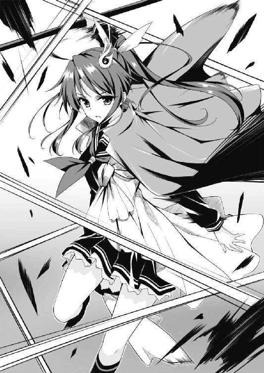
苛立ちと焦りを募らせていると、ガルジャが鼻で「ふん」と笑った。
「なにがおかしいッ！」
「女！ 貴様が強いことは認める。だが、貴様を倒さずとも時間稼ぎさえしていればことはたりるのだ。将軍がダジュラ神を倒してしまえば、いかな貴様とて......！」
「へぇ～。つまりあんたたちは、ゼイモラならダジュラに勝てると踏んでいる。んで、ダジュラを倒せばゼイモラはこっちへ加勢にこられる。それを頼みにしてるってわけね」
「ふふん、今ごろ気づいても遅いがな」
「けっ、なにかっこつけてんだボケ。どうりで防戦いっぽうなわけだわ。自分にはあたしを倒す実力はないと知って、最初から時間稼ぎするだけの腹積もりかよ、このカスが！」
「なんとでもいえ。これが賢い戦い方というものだ」
「笑わせんな！ そういうのはな、賢いんじゃなくて、小賢しいっつーんだよ！」
あたしは激昂し、今まで以上に苛烈に攻めたてた。
しかしガルジャはあいかわらず防戦に回って凌ぐばかり。くそぅ、こいつ、いっこうに攻撃してこない。攻撃してくれば隙が生まれ、カウンターで撃破するチャンスとなるのに！
それでもなお、あたしの猛攻を凌ぎきれずガルジャが足を揺らすシーンが時折ある。あるが、すかさずホムリスが援護して決定打を防ぎにかかる。
チィッ！
あたしは舌打ちしてすばやく頭を回転させた。
まずい。ひじょーにまずい。彼我の戦力はかなり拮抗している。そしてあたし一人では、こいつらを撃破して戦力の均衡を崩すのは無理っぽい。
（となると、ダジュラになんとかしてゼイモラを倒してもらうしかない！）
そうすればダジュラとパリエルはこっちへ来られる。戦力の均衡が崩れ、ガルジャとホムリスはもちろん、ナヴレス兵は全員逃げるか降伏するかしかなくなるはずだ。
じゃあ、ダジュラは......一度は負けているゼイモラに勝てるだろうか？
あたしはダジュラとともに鎬を削った日々を思い起こした。
フ......。
フフ......。
「面白い。それじゃ、あんたたちのクソつまんねー時間稼ぎにつきあってあげる」
あたしが不敵に笑って告げると、ガルジャはいぶかしむ顔つきになった。
「あんたたちはゼイモラの強さを信じ、ゼイモラがダジュラを撃破することに賭けているわけね？ じゃあ、あたしはダジュラがゼイモラを撃破する方に賭けるわ」
「なにをいいだすかと思えば、くだらん！ ナタス神配下の英雄の中でも、魔将軍の一人に数えられるゼイモラ様が負けるなどありえん！」
ガルジャはでかい声でいいかえしてきたけど、あたしの自信に満ちた顔つきに一抹の不安を覚えたような気配があった。
「じゃ、今日がゼイモラの敗れる日ってわけね。いっとくけど闘神ダジュラはねえ、この正義の女神カイネと唯一互角にわたりあえる神なのよ。ダジュラはゼイモラと手合わせしてすでに敗北した、とあんたたちは思いこんでいるみたいだけど、ちょっと油断しただけでしょ。本気になったらどうなるか。それはこの後わかるわぁ」
すーっ。
ふぅーっ。
あたしは深呼吸して薙刀を正眼に構えた。
（ダジュラ。これだけのタンカを切ったあたしに恥をかかせたら、ただじゃおかないわよ！）
でも、ダジュラならやってくれると思う。
あたしと研鑽を積んだ日々は無駄じゃなかったと、きっと証明してくれると思う。
（信じているからね、ダジュラ！）
あたしは心の中で呼びかけると、ガルジャを睨みつけて再び打ちかかっていった。
ＳＣＥＮＥ８
闘神ダジュラに二度の敗北はない！（と、いいなあ）
────坂上 大樹
（くそぅ、強力な神粘土を入手できないままゼイモラと再戦かよ！）
おれは心の中で愚痴をこぼしたけど、委縮して縮こまっていたわけじゃないぞ。
（こうなったら神粘土なしで勝つまでだ。カイネとともに研鑽を積んできた剣士の実力をもって！）
一度は手も足も出ず敗北した相手だ、それはわかっている。
だけど、おれは一度負けたくらいでしょげかえるやつじゃない。そうとも、スポチャンだって最初のうちはカイネにまったく歯が立たなかったけど今はちがう。おれは負けても立ち上がる不屈の精神の持ち主なんだ。それこそがおれの持ち味だッ！
とはいえ──。
「パリエル、おれに当てるなよ！」
ゼイモラと対峙したおれは魔剣を勢いよく振って決めポーズをとりつつ、ひとこと注意しておいた。ゼイモラは一瞬の油断もできない強敵だ、そんなことはないと信じたいが、パリエルの稲妻に誤爆された日にはそれが命とりになる。
「自分が創造した英雄をもっと信じろ！」
パリエルはおれの頭上から声を降らせ、両の手首を頭上で交差させた。
「万雷招雷！」
大気を引き裂く轟音。幾条もの細い稲妻が降り注ぐ。敵の雑兵はゼイモラを援護すべくおれに矢を放とうとしていたが、感電して悲鳴をあげた。
またその稲妻のうちの一条は、兜をかぶったゼイモラの脳天に食らいついた。
「むうッ」
感電したゼイモラはくぐもった声をあげて全身を震わせた。といってもそれはごくわずかな震えにすぎなかった。鉄球棒を握ってどっしりと腰を落としたやつの構えは崩れない。やはりこいつの特殊な肉体には、パリエルの稲妻が有効打とならないんだ。
ゼイモラはおれを見据える赤眼を細めた。
「何度やっても同じこと、このゼイモラに炎や稲妻や冷気は通じぬ。おれを倒したくば、ダジュラ神よ、自らの力をもってあたるのだな」
「フッ、そうさせてもらうとしよう」
おれは左足を引いて半身の構えをとった。魔剣を握った右手を前に伸ばし、左手は身体のバランスをとるため後ろへ伸ばす。フェンシングもそうだが、腕一本で軽い長剣を得物とする場合、これはごく自然かつ使い勝手のいい構えなんだ。
ゼイモラはじわりと前傾姿勢になった。空間に殺気が満ちる。
「いくぞ、神よ！」
ゼイモラは吠えると、思い切りよく突進してきた。
「来いッ！」
心には嫌な汗をかいていたけど、それでもおれはじゅうぶんすぎるほど冷静であり、やつの太刀筋を見極めるべく刮目していた
ゼイモラが鉄球つきの棒を大上段に振り上げる。
胴ががらあき！
おれはダッシュしてやつと交差しざま、魔剣を振るった。
刃がやつの鎧の胴をとらえる。ギンッ！ と金属音が響いて、弾かれた剣の反動が手首を震わせた。
「くっ──」
おれはそのまま前方へ走り抜けて距離をとってから振り返った。
ゼイモラが振り下ろした鉄球は、岩盤をしたたかに打っていた。砕け散った岩の破片が盛大に飛び散り、そのうちのいくらかはゼイモラの鎧に当たって小さな音を立てた。
（だめだ。剣を当てるだけなら容易だが、やはりやつの鎧は切断できない）
おれは必死に頭を回転させ、この怪物に勝つための戦略を検討した。
（カイネの提案した戦法でいくしかない......か？）
（そうだ。鎧の関節部分に魔剣の刃を滑りこませる、それしかない）
（難しいぞ。ただしやつは鎧を着ているため動きが制限されるし、視野も狭い。身軽さではおれのほうに分があると見た）
おれならできる！ と心を固めきる前に、ゼイモラは再び突進してきた。
「ぬんッ」
やつは気合と殺気をほとばしらせ、思い切りよく鉄球棒を振るった。
（岩盤を砕き散らすあの鉄球の硬度と、やつのパワー......。もし食らえばおれは絶命、ないし大怪我を負うだろう。ただしおれの見たところ、こいつは得物の扱いが大味で洗練されていない。度胸剣法に近いな）
度胸剣法ってのは、武器の扱いはさほどでないものの、度胸があってケンカ慣れしている手合いが力まかせに振るう太刀筋をさす。
つまり素人臭い太刀筋なんだけど、度胸剣法が弱いとは限らない。実戦ではお上品に戦う必要はないし、がんがん前に出て深く斬りこむことで相手を心理的に圧倒できる。現に江戸時代には、名のある道場の名のある侍が、町でいざこざを起こした無頼の徒に──実際に人を斬った経験のある博徒のたぐいに──あっさり負けた例もあったそうだ。
とはいえ、修練を積んだ剣の使い手が冷静さを保って相手の太刀筋をじっくり観察でき、しかも一対一なら、素人よりはるかに分があるのはいうまでもない。
そして少なくともこの時、おれはゼイモラのことを冷静に分析していた。
（ゼイモラの鉄球棒はリーチにおいておれの剣に勝る。ただし、おれがいつも相手にしていたカイネの薙刀にくらべれば短いから、まだ戦いやすい。それにこのタイタンでは脚力が強化されているため、おれがダッシュで懐へ飛びこむスピードは増している。このため、得物の長さによる不利を軽減できる......。なにより、こいつは度胸剣法であるがゆえに起こりがまる見えだ）
起こり、とはなにか。
剣は手で握られていて、剣を振る前に前腕が動く。前腕が動く前には肘が、肘が動く前には肩が動く。また突進するなら、あらかじめ腰を落としたり膝をかがめたりする必要がある。こうした、動作の起点として生じる動き、それが起こりだ。予備動作ともいう。
剣道でもスポチャンでもフェンシングでもそうだが、剣術の上級者の戦いでは起こりを見ているか否かが重要なファクターとなる。相手が得物を振る前に、肩や下半身など動作の起点となる部分の動きをいちはやくとらえることにより、次の攻撃がどういう軌道で来るか予測できるんだ。予測が正確なら、その攻撃に前もって対処できることになり、圧倒的に有利なのさ。
（おれは薙刀使いのカイネ相手に剣で戦ってきた。リーチの長さによる不利をカバーするため、起こりをとらえる点には心血を注いできたと自負している。自信を持つんだ！）
集中！ 時間の流れがゆるやかに感じられた。
（なるほど。横殴りの一撃が来るな）
肩と上体の起こりから、おれはそう断じた。
足と腰に力を溜め、（いくぞ！）と心でさけんで一気に前へ出る。
ゼイモラが振った鉄球は、おれの頭部をとらえる高さで左から襲いかかってきた。
（当たった......！）
予想通りの軌道！ やつの攻撃が到達するよりもずっと早く、おれは身体を沈めていた。
サッカーのスライディングの要領で滑りこむ。やつの体側を通過しざま剣を振るった。
狙いは膝の下だ。膝は大きく動く関節であるため甲冑の隙間も大きい。膝を破壊してしまえば重い甲冑を装備したまま戦いを継続するのはほぼ不可能になるだろう。なにより、剣の長さで低い位置は攻撃しにくい。その心理的盲点を衝かれればかわせまい！
おれの剣はゼイモラの右膝めがけて疾った。甲冑の隙間にまちがいなく刃が滑りこむ、とおれは刃が到達する前に確信した。
だが！
やつの膝は魔剣の刃先が今まさに滑りこもうという刹那、すっと上に引き上げられた。
おれは、あっと声をあげていた。刃はすねあてに当たり、弾かれてしまった。
（こ、こいつ！ いい反射神経だ、咄嗟に足を上げてガードするなんて！）
でも、感心している場合じゃなかった。なにしろおれはスライディングで攻撃しにいったんだ。つまり、仰向けになった状態だ。急いで飛び退かなければ、やつの次の攻撃の餌食に──。
おれが振り仰いだ時にはもう、ゼイモラは鉄球を大きく振り上げていた。
（......あ......）
恐怖で全身の毛穴が開いた。
攻撃から逃れるべく咄嗟にローリング。二回転がる。左腕を折りたたんで地面につく。足でジャンプするのと同じ要領で、腕力で強引に身体を跳ね上げる。立ち上がった！
だが、まだやつの得物の射程距離だ。
おれはゼイモラのほうを向いた姿勢のまま、間合いを広げるべく後方へ飛び退った。
いや、飛び退ろうとしたんだ。
しかし、やつの鉄球は空間をたわめるような風を巻き起こしておれに迫っていた。
（かわせない......）
おれは半ば諦めながらも（身体をよじってかわそう）と思った。けれどおれがその動作に移るよりはるかに速く、鉄球は腹へとめりこんできた。
ズン、と凄まじい衝撃が走った。
鉄球がとらえたのは右のわきばらだった。だけどインパクトの瞬間、おれを襲ったのは腹部の痛みではなく、全身がしびれたような感覚だった。骨の芯まで浸透する強烈な衝撃が、骨伝導で全身に広がったんだと思う。
おれは勢いよく吹き飛ばされた。
我ながら殊勝なことだけど、（吹き飛ばされたことでやつと距離をとれる。受け身をとって、すぐに体勢を立て直さなければ！）という思考が走った。
ところが、しびれた身体はおれの意思を受けつけなかった。身体が動かない！
おれは背中から硬い岩盤にたたきつけられた。その光景を見ていた者には、おれは投げ捨てられた人形のように映ったんじゃないだろうか。
「く......」
呼吸した拍子に口からぬるぬるしたものがあふれた。......血か？ 全身がバラバラに砕けてしまいそうな痛み。肋骨をへし折られたか？ いや、ダメージはもっと深いところまで達しているみたいだ......。
（た、立ち上がらなければ！ マジで殺されちまう！）
本能がわめき散らしていた。おれはむりやり首を持ち上げてゼイモラのほうを見た。
やつは（この一撃で神を倒す！）と力みすぎてしまったのか、体勢を崩して身体を泳がせていた。だが、兜から覗く赤い双眸はおれを見ている。すぐに突進してきて、おれにとどめの一撃を加えるはずだ。
ダァン！
ゼイモラの後方で青い光が閃き、破裂音が響いた。
パリエルだった。彼女は雷跳で宙を疾駆し、突進に移っていたゼイモラのそばをすり抜け、あっというまにおれのもとへ達した。
「ダジュラ、立て！」
パリエルはおれの左手をひっつかんで強引に引きずり起こした。逃がしてなるかとばかりにゼイモラが加速する。
うおうッ、と吠えざまゼイモラは鉄球を振るった。
けれど、パリエルがおれに肩を貸して宙へ逃れるほうが一瞬早かった。
パリエルは雷跳で瞬く間にゼイモラを引き離し、カイネのすぐそばへ着地した。
「招雷！」
稲妻を発して蝟集している雑兵を遠ざけつつ、おれを床に横たえる。
「カイネ！ ダジュラがゼイモラにやられた！」
「えっ......？ うわー！ なにやってんのよ、だらしないわね！ あんたって、なんでそんなに弱いのよー！」
カイネは天意の薙刀をブン回す手を止めず、おれを罵倒した。な、なんてやつだ。お前はお前で忙しいのはわかる。だけど、口から盛大に血ィ吐いちゃってる幼馴染にむかってそんな心ない言葉を浴びせるなんて！ あんまりだ！ 法廷で訴えたいっ！
けれどおれは悪態をつくことさえできなかった。呼吸のたびに、こぷっ、こぷっ、と血があふれて止まらない。それに......意識の焦点がぼやけて......きた......。なんだよ、この寒気......。もうこれ......絶対死ぬ......。このまま意識が遠のいて死......ぢぐじょぉ......。
「カイネ、神粘土で薬を！ ダジュラは重傷だ、治療する薬を創造してくれ！」
パリエルが泣きそうな声でわめいた。さすがはおれが創った理想の美少女、カイネとは大ちがいだ。優しいっ！
「そんな強力な神粘土があれば、とっくの昔に使って戦況を有利にしてるわよ！」
......ですよねー......。
と、ナヴレス兵から奇妙な響きのざわめきがあがった。目だけ動かしてそちらを見やる。なにか小さな生き物が、ネコ科動物の俊敏さで、兵士たちの足の林を駆け抜けてくる──。
「かいねちゃん！ これ！」
この修羅場には場違いなかわいらしい声が聞こえた。誰かと思えばあいちゃんだ。鉱夫たちとともに避難していたはずなのに、なんでここへ？ 危ないじゃないか！
......って、その小さなお手てには光り輝く鉱石が握られている！ 神粘土か？ けっこういい感じに光ってるぞ、グレードＣ、いやＢか？ 神粘土探知能力を活かして、この洞窟のどこかから拾ってきてくれたのか！
「あっ！ 神粘土ね？ そうなのね！」
「あいちゃん、できるっ！」
猫耳幼女は胸を張り、カイネは目を輝かせた。
でも、さ。
この神粘土でおれを救ったところで、根本的な問題の解決にはならない。
たとえおれを治療する薬を創ってくれても、おれ、ゼイモラには勝てないよ......。
（カイネ、おれを助けるな。その神粘土でパワーアップできる薬でも創ってお前が飲め。そうすればゼイモラたち全員を蹴散らすことは無理でも、囲みを切り崩していったん外まで逃げおおせるくらいはなんとかなる。そうだろ？）
死を悟ったせいか、おれは自分を捨てる気になっていた。でも、もはや唇を動かすことさえ意のままにはならない。
「にげ......ろ......」
最後の力を振り絞り、短くそう告げるのがやっとだった。
だけどカイネは「逃げる？ そんな性にあわんことできるかー！」と吠えた。
右手一本で薙刀を持ち、左手であいちゃんから神粘土を受けとる。
「まずい、創造術を使わせるな！」
ホムリスのきしるような声。ガルジャがあわてたように打ちかかってくるのをカイネは右手一本でさばきつつ、左手で神粘土をすばやくこねた。
「クリエイション！ パリエル、これ！ ダジュラにブッ刺して注入して！」
カイネがパリエルに放ったのはぶっとい注射器だった。いかにも薬効のありそうな、青く輝く液体が入っている。
「刺すって、どこに？」
「どこでもいいから、はやく！」
カイネはすぐさま薙刀を両手持ちにもどすと、激しく振り回して周囲の敵をひるませた。パリエルはその隙におれの首筋に注射器を突き立てると（この時、おれの身体はもはや痛みさえ感じなくなっていた）、一気に中身を押しこんだ。
（うわっ！）
とたんに全身がカッと熱くなった。なんだこれ、生命力が流れこんでくる！ エネルギーが全身を駆け巡る！
身体が急激に回復する過程で腹部から激痛が襲ってきたものの、それも瞬く間に消えてしまった。すげえ、あの大怪我が一気に全快かよ。創造術ってすばらしい！
「すっ、すまない」
おれはさっきやったように左腕一本の力で身体を跳ね上げ、立ち上がった。
「ダジュラ！ あと一回だけチャンスをくれてやるわ。三度目の正直よ、今度こそゼイモラをブッ倒してきなさい。いいわね！」
と命じたカイネは、復活したおれを見もしないでガルジャに打ちかかっていた。ううっ、あいかわらず優しさのかけらもない言葉だ。だけどカイネは、おれのために貴重な神粘土を使ってくれた......。なあカイネ、お前って根はいいやつなんだよな。ありがとう！
「ダジュラ、私も手伝うぞ。二人でゼイモラを倒すんだ。招雷！」
パリエルが雷撃を放って雑兵たちの一角を崩す。
女の子三人にここまで助けてもらったんだ、やるしかない。というより、おれかカイネが敵の英雄を撃破して拮抗している戦力の天秤を傾けないと、この場は切り抜けられない。つまり全滅する。たとえ嫌でもやるしかないんだ！
おれは奥歯を嚙みしめ、パリエルが崩した一角へ走りこみ、魔剣を振り回して突破した。
ゼイモラは......すでにおれ目がけて突進してきていた。
やつの赤眼がとほうもなく怖いものに思えて、一瞬、身体がすくんだ。
だけど、やるしかない。そう、やるしかないんだ。
「このヤロォー！」
闘神っぽくないセリフだけど、おれは心の力を振り絞ってさけんだ。すると恐怖に塗りつぶされかけていた心が、一周して元の場所にもどりました、みたいな開き直りに転じた。
「よくもやりやがったなー！ もう許さねえ！」
あとはとどめを刺すだけと思っていたんだろう、ゼイモラはおれを見てひるんだように突進の勢いをゆるめた。
おれは自分から積極的に間合いへ飛びこむと、遮二無二剣を振って激しく攻め立てた。魔剣と鉄球棒、ふたつの得物が打ち合って火花が散る。
「さては神粘土を使って治療したのか。やはり神、そうやすやすとはいかんな！」
ゼイモラは感心したような口ぶりだった。でも、そんなセリフを吐けるのは心に余裕がある印だ。
「防御力に自信があるからって、余裕ぶっこいてんじゃねえぞー！」
おれはわめいてさらに魔剣を振るスピードを速めたが、ゼイモラは落ち着いた様子でこれをさばいた。弱点である関節部分以外ならいくらでも打たせてよし、わずかでも隙があればカウンターで......という意図が透けて見える。攻めにくいったらありゃしねえ！
（この野郎、どうすれば倒せるんだ？）
もう一度、膝か肘あたりを狙って......やるか？
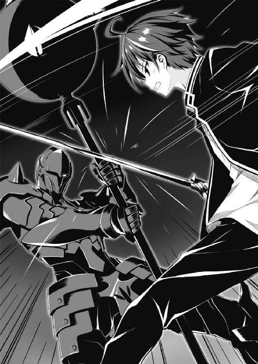
（いや、さっきの失敗でわかった。こいつ、度胸剣法ではあるものの反射神経はかなりいい。なにより、一度使った手をもう一度使ったところでそれが通じるとは思えない）
ううっ、どうすりゃいいんだ。あいちゃんのファインプレーとカイネのお慈悲で奇跡の復活を遂げた強くてかっこいいみんなの憧れ闘神ダジュラだが、もう一回クリーンヒットを食らったら今度こそ終わりだ。それにカイネが創った薬で怪我は全快したものの、流れ出た血液や戦いで失ったスタミナまで回復したわけじゃないらしく、疲労が激しい。
（それにひきかえ、ゼイモラは鎧を着ているのに動きに衰えが見えない。まだまだスタミナに余力を残しているな）
つまり持久戦で勝ち目はない──。
「このおっ！」
青い光が閃き、ドン！ と破裂音が轟いた。パリエルの放った雷撃が洞内を青く染め、雑兵を牽制しつつゼイモラを打った。
ゼイモラは感電してわずかに震えた。だがやはり、おれが勝負をかけられるほど大きな隙は生まれない。そして今になって気づいたが、パリエル、肩を大きく上下させているぞ。体力を消耗していて、もうじき雷撃を放てなくなってしまうんじゃないか？
（おれとパリエルのスタミナが尽きる前に決着をつけなければ。考えろ、考えるんだ！ この状況を打開する戦術を！）
カイネから初めて一本とった、あの幼かった日。
フェイントをかけてみよう、と思ってそれがうまくいったんだ。そう、戦闘ではほんのちょっとしたひと工夫があっさりと活路を開く。
（んっ？）
狂おしく思考を回転させていたおれは、ふと......ゼイモラの鎧に注目した。
やつとの最初の手合わせは、さんさんと降る陽光のもとで、だった。確かその時、やつの鎧は漆黒、つまり漆を塗ったような光沢のあるピッカピカのものだった。
ところが今、ゼイモラの鎧は光沢を失い、ひどくくすんでいる。
（なんでだ？ この戦闘で埃をかぶって汚れたのか。まあ、やつは鉄球で岩盤を砕き散らすたびに、その破片を自分で浴びているから不思議じゃないが......。でも、それにしたって汚れすぎじゃないか？ 光沢がほとんどなくなっているぞ）
あっ！
突然、おれはその理由に気づいた。それは天啓と呼んでいいほど強烈な閃きだった。
（そうなのか？ きっとそうだ！ だとすると──）
だとすると、まだ勝負はわからない。おれの推測が当たっているなら、それを利用した起死回生の策がある！
（よし）
おれは覚悟を固めた。どのみちスタミナは残り少なくてまともに戦える時間はあとわずかだ。これに賭けてやる。あり金を残らずＢＥＴだ！
「食らえッ！」
おれはいったん後方へ飛び退って間合い広げた。着地と同時に、魔剣を掬い上げるように振るい、切っ先で足もとの岩盤を掬いとる。
この魔剣は岩をおとーふみたいに斬ってしまうから、この洞窟の岩盤だって斬ろうと思えば斬れる。切っ先でこそぎとられた岩の破片が、ゼイモラめがけてバラバラと飛んだ。
「むッ？」
ゼイモラはおれが戦法を変えたのを見て、警戒したように足を止めた。
「石つぶてで目つぶしか、小細工を......」
やつは首をすくめ、鉄球棒を持ち上げて顔面をいつでもガードできるように構え直した。
おれは内心、ほくそ笑んだ。
「ただの目つぶしじゃないぞ。この洞窟は神粘土だらけだ。こうやって岩盤を削りとっているうちにいい神粘土が見つかれば、パワーアップアイテムを創って形勢逆転できる！」
「一石二鳥のつもりか？ 笑止な。グレードの高い神粘土がそうそう見つかるはずもない」
ゼイモラは馬鹿にしたようにくぐもった笑声を響かせた。
（笑っていられるのも今のうちだ。目つぶしが決まればよし、神粘土が見つかればそれもよし。だが、もうひとつ意図があるのさ。一石三鳥、三段構えの策なんだ）
そしてじつは、三番目の策こそゼイモラ打倒の鍵を握る本命だ。
おれは身軽さで勝る利を活かし、残る体力を振り絞ってゼイモラの周囲を走り回った。走りながら、何度も何度も魔剣で岩盤を斬り、しつこく石つぶてを浴びせ続ける。
「ええい、往生際の悪い！ そんな石くれをいくらぶつけたところで無駄なあがきに終わるぞ！ 神なら神らしく、勝負に出たらどうだ！」
やがてゼイモラは業を煮やしたように怒鳴り、ガードを捨てておれを激しく攻撃し始めた。おれはそれを紙一重でかわし続けた。やつの鉄球は虚しく洞窟の岩盤を穿ち、おれの攻撃と同様に石の破片を大量に撒き散らした。
（くっ......。息があがってきたな。だが、おそらくゼイモラはこちらの策を看破していない。そろそろ仕掛けていいころあいだ）
ただ、この策を実らせるにはおれ一人の力ではだめなんだ。パリエルの協力がいる。
（頼むパリエル、おれの意図を察してくれ！ パリエルがおれのイメージ通りに創られた英雄なら、おれの『設定』にある『あの技』をパリエルは使える、そうだろ？）
走りながらパリエルを捜す。その美しい姿が、ゼイモラの肩越しに見えた。
（パリエル！）
おれは彼女に、ぱち、ぱち、と間隔をあけてまばたきをした。それからすばやく、視線を下方へ──ゼイモラの足もとへやった。そこにはゼイモラが鉄球で砕いたもの、おれが岩盤を切り裂いて浴びせたもの、大量の石くれが散らばっている。
パリエルは、はっとしたように大きく目をみひらき、こくんと小さくうなずいた。おれは彼女に意図が伝わったことを確信した。
（ここだ。勝負をかけるぞ）
おれは足を止めた。半身の構えになり、すっと魔剣の切っ先をゼイモラにむける。
そのまま、突進してくるゼイモラを待ち受ける。
「ようやく打ち合う気になったか、そうでなくてはな！」
さけんだゼイモラの声音に、おれはゆるみを感じた。超硬度の鎧と強靭な肉体。だが、その優れた防御力ゆえに油断が生まれたのなら、むしろそれはお前の弱点だ！
「パリエル、今だっ！」
おれはさけんだ。
ダァン！ と雷跳の音も高くパリエルはゼイモラの頭上に舞った。
「これで......どうだ────────っ！」
パリエルは右手を高く掲げると、ぐるっと円を描く軌道で腕を振るった。
宙に描かれた円は青く輝き、電光の蛇となって逆落としにゼイモラを襲った。
ただし、それは今までの雷撃とはちがった。威力はさほどでもなさそうな細い電撃が、さながら縄で縛るようにぐるぐると幾重にもゼイモラに巻きつく。
すると！
あたりに散らばっていた石片が、魔法でもかけられたように宙に浮いた。
次の瞬間、無数の石片はピラニアの大群みたいに、あらゆる方向からゼイモラを襲った。
「なにッ」
その光景を見て、ゼイモラは自分が罠にはまったことを悟ったのかもしれない。やつは鉄球棒をふるって石片の嵐をたたき落とそうとするそぶりを見せた。
（だが、もう遅い！）
大量の石片はあっというまにゼイモラの全身を覆っていた。正確には、石片はゼイモラが装備している鎧に吸着したんだ。
それらの石片のいくつかは鎧の表面ではなく隙間に入りこんだ。そのため関節部分がロックされてしまい、やつは得物を振るいかけた動作の途中で完全に固まってしまった。
ゼイモラを取り巻いている電気の蛇は十秒ほどで消失した。着地したパリエルが地面に片膝をつく。この一撃で力を使い果たしてしまったらしい。
「パリエル、あとはまかせろ！」
ここぞとばかりに、おれは猛然と突っかけた。
電気の蛇の消失にあわせて、ゼイモラの鎧に吸着していた石片はバラバラと落下した。しかし、鎧の隙間にがっちりとはまりこんだ石片はそのままだ。
「しまっ......」
やつが「た」をいい終えるよりも早く、おれは渾身の力をこめて、下から上へ斬り払う一撃を繰り出した。
魔剣が兜をしたたかに打つ。ガァン！ とひときわ激しい金属音が洞内にこだました。
おれが魔剣を力いっぱいたたきつけてもなお、やつの兜は破壊できなかった。けれど強烈な打撃で兜は吹き飛ばされ、宙を舞った。
衝撃でのけぞったゼイモラの巨体が、動きを封じられたままどっと仰向けに倒れる。
「勝負あったぞ！」
おれはゼイモラを見下ろして剣をやつの喉元に突きつけた。
......って、なんだこいつは！
兜に隠されていたゼイモラの素顔は不気味なものだった。死人のような青白い肌に、青黒い血管が幾本も浮き出ている。頭髪も、眉毛も、毛は一本も生えていない。落ちくぼんだ赤いふたつの目。ブタのような低い鼻。唇をめくれあがらせて突き出ている犬歯──。
（なんて醜い顔だ）
『人』よりも、『怪物』や『モンスター』に近い容貌だ。
「......さすがは......神......」
ゼイモラはうめき、敗北を認めた証に手を開いて得物を手放した。
「フッ。この闘神ダジュラと戦うのは十年、いや十万年早かったな」
スゥー。
「『種明かしは、こうだ。激しい戦闘の最中でも冷静沈着な闘神ダジュラは、ピカピカだったはずのお前の鎧がいつのまにか汚れてくすんでいることに気づいた。埃をかぶって汚れたのか？ いいや、ちがう。お前の鎧はおれの魔剣をもってしても斬れない特別製。ただし、その素材は鉄や銅のような磁性を帯びるタイプの金属だったんだ！ このためお前の鎧はパリエルの雷撃、すなわち電気を何度も浴びているうちに微弱ながらも磁性を帯びてしまった。この洞窟の岩盤は、どうやら鉄鉱石のような磁石にくっつく性質をもつ岩だったらしい。そのためお前の鎧は、戦闘中に岩盤が砕かれて生じた埃や石片を吸着し、ひどく汚れていたのさ......。以上のことを名探偵も顔負けの洞察力で察したおれはこれを利用することを考えついた。魔剣で積極的に岩盤を斬り裂き、石片をそこいらじゅうにバラ撒いて......仕上げはパリエルの電磁縛鎖だ。パリエルが最後に放った雷撃は、お前をぐるぐる巻きにするものだったろう？ あれによって、鉄の芯に銅線のコイルを巻いて電気を流したのと同じように、お前の鎧は強力な電磁石となってしまった！ あとはわかるな？ 磁石と化した鎧にむかって、あらかじめ意図的にバラ撒いておいた石片が吸い寄せられ、そのうちのいくらかは鎧の隙間に入りこんでお前の関節を固めてしまったんだっ！』」
フゥー。フゥー。つっ、疲れているのに一気にしゃべったもんだから、息があがっちゃったよ。
でも気持ちいいっ！ 『設定』や『自分語り』や『勝利確定後の上から目線の種明かし』って、どうしてこう快感なんだ？ たまりませんっ！ 癖になっちゃうっ！
なにより、おれとパリエル、二人の力をあわせて強敵を撃破したってのがまたいいよな。これはそう、愛の力ってやつじゃないのか？ きっとそうだ！
「そんな、将軍が、負けるなんて......」
ゼイモラは途中までかなりおれを押していた。それだけに彼の敗北はショックだったようで、ナヴレス兵は呆然自失の状態だった。
「撤退だ！ 撤退する！」
カイネを囲んでいる方からホムリスの特徴的な声が聞こえた。
おれがそちらを見やった時にはもう、でかいハチは手下を引きつれて洞窟の出口へ飛び去っていた。ガルジャが「待て！ 置いてゆくな！」とさけび、すぐに後を追う。雑兵たちはそれこそもう戦意喪失、なだれを打ってホムリスとガルジャの後を追う。
「ガルジャ！ また逃げんのか、弱虫毛虫ブタのケツがァ────！」
カイネは凄い悪態を浴びせたけど、へとへとに疲れているようで、追撃はしなかった。
（とにもかくにも、おれたちは勝ったんだな）
おれはゼイモラに視線をもどした。
「......油断しているつもりはなかった。それでも、神のほうが一枚上手だったか」
ゼイモラは牙の生えた口をゆがめて、ひどく寂しそうな笑みを浮かべた。
「感心するべき相手は私だろう。この勝利は、私が目配せだけでダジュラの狙いを察すればこそ、だ」
パリエルがやってきて胸を張った。
「フッ。そうはいうがな、パリエルがそれに気づいたのは、このおれがパリエルを美しく気高く力強く、さらに賢い英雄として創造したからこそ......！」
「はいはい」
パリエルはくすりと笑った。こいつぅ～、笑うとほんとかわいいなぁ～。
「ふー。ひやっとさせられたけど、どうやら勝ったようね。ダジュラ、パリエル、このあたしが褒めてつかわす！」
カイネが薙刀を担いで大またにやってきた。
「あいちゃんも、がんばった」
あいちゃんがちょこちょこ走ってきてカイネの前にまわりこむ。カイネを見上げる瞳はきらきらしていて、いっぱい褒めてもらいたそうだ。
「そうそう！ あいちゃんは殊勲賞よ！ ダジュラ、あいちゃんにお礼いっときなさいよ。あいちゃんが神粘土を拾ってきてくれなかったら、もうとっくに死んでたんだから」
「ああ、うん。あいちゃん、ありがとう。助かった」
遅まきながら礼を述べると、あいちゃんは「あいちゃん、できる！」と力強く主張した。
「さ......さすがは神......！」
「魔将軍を打ち破るとは！」
洞窟の隅っこで震えていた鉱夫たちも集まってきて、口々におれをたたえる。
「さて、しかし──」
おれはゼイモラを見下ろして首をかしげた。
（こいつ、どうしたもんかな。でかいハチどもは容赦なく斬りまくったおれだけど、こいつの喉に剣をぶっすり刺すのには抵抗がある）
モンスター的な醜い容貌だけど人間の形をしているし、人語を理解できる知性もある。なにより......こいつって敵とはいえ終始堂々とした態度だった。部下たちに手本を見せるように自分自身が率先して戦う姿勢は男として立派だったと思う。
（神、それもおれとカイネ、二柱の神を相手に戦おうとしたんだから大したタマだよな。いっぽうおれは......勝ちに奢って得意げにべらべらしゃべっちゃったけど、あいちゃん、カイネ、パリエル、みんなに助けてもらってようやくゼイモラを倒せたんだ）
そう考えると殺すのは忍びない。でもこいつの武器と防具は神粘土で創られた高級品のようだから、戦利品としてとりあげ、命だけは助けてやるのが妥当かな？ おれには大きすぎる鎧だけど、装備できる体格の英雄を新たに創造するか、もしくは──お姫様の部下のガラシュっておっさんの体格ならかろうじて装備できるかも。
「神よ」
処遇を決めかねているとゼイモラが口を開いた。
「願わくば命果てる前に、聞いておきたいことがある」
おや？ ゼイモラのほうでは、負けた以上、殺されても当然と考えているみたいだ。
「なんだ。いってみろ」
「神は......ナタス神は、おれをこのような醜い姿に創りたもうた......。だが、ダジュラ神よ。貴殿が創造したパリエルなる英雄はじつに美しい。なぜだ......」
おれははっと胸をつかれた。
ゼイモラの赤い目は今にもこぼれ落ちそうな涙をたたえていた。
（そうか。あの参考書にかいてあったな）
神粘土を使って創造術を行使する際、弱点や欠点といったマイナスの因子を付加すると、より強力な長所を持つものを生み出せる。
魔神ナタスは、このゼイモラにわざわざ醜くおぞましい姿を与えて創造したんだ。より強力な戦闘能力を付加した英雄とするために！
おれは顔を引き締めた。
（魔神ナタス......！ やつは創造物に一個の人格など認めていない）
会ったことはないが、そいつは人を人とも思わず、己の欲望を満たすためならどんな悪いことでも平気でできるやつにちがいない。
「立て」
おれは魔剣を鞘におさめると、かがみこんで無造作に手を伸ばし、小手に包まれたゼイモラの手をとった。
ゼイモラにとっては意外なことだったらしく、彼はいそがしく目をしばたたいた。
「いいから立て」
おれは強引に手を引いてゼイモラの上体を起こした。ゼイモラはまだ鎧の隙間に石片が食いこんでいるためだろう、ひどくぎくしゃくした動作で立ち上がった。
おれはゼイモラの鎧を二、三回軽くたたいた。関節部分に挟まっていた石片がばらばらと落ちる。
「牙面ゼイモラ。おれに問うまでもなく、その理由はもう自分でわかっているはずだ」
「............」
「魔神ナタスは邪悪な存在だ。だが、おれやカイネはナタスとはちがう。ゼイモラ、もしナタスの手駒として生きてきたこれまでを悔い、善なる神の側について戦いたいなら、今からでも遅くはない。ナタスのもとを離れろ。そして今後は、おれとともに戦え！」
ゼイモラは赤い瞳でおれを見つめ、しばし肩先を震わせていた。
やがて巨漢は倒れこむように片膝をつくと、深く頭を垂れた。
「ダジュラ神。貴殿のはからい、感謝にたえませぬ。このゼイモラ、一命を救っていただいた恩顧に報いるべく、今後は貴殿に忠誠をつくすことをここに約します」
「確かに聞いた」
おれは大真面目にうなずいた。
「ちょっと！ 待ちなさいよ、ダジュラ」
ところが、カイネが待ったをかけてきた。
「え。なんだよカイネ、反対なのか？」
「そうじゃなくて！ この女神カイネを無視してそういうことを勝手に決めちゃだめでしょうがっ！ あんたはあたしの従属神なんだから、立場をわきまえなさいよ！」
「......えっと......じゃあ......ゼイモラを仲間にしたいんだけど、いい？」
「いいわよ」
カイネはあっさりとうなずいた。なんてめんどくさいやつだ......。
「おおっ、ダジュラ神といい、カイネ神といい、なんとお心の広い......！」
「し、しかし、信用していいのか？」
鉱夫たちは心配げにささやきあっていたけど、おれは自分の寛大さに満足した。
「......ダジュラ」
と──かたわらに立っていたパリエルが、なにを思ったかおれの手をぎゅっと握った。
「んっ？」
なにこの子、どうしちゃったの？ 頰を上気させて、きらきら光る瞳でおれを見ている。
「その......。私を美しい姿で創ってくれて、ありがとう」
「フッ。ことさら礼をいわれるようなことではない」
おれは軽く髪をかきあげた。でも、こんな風にお礼をいわれたらうれしいに決まってる。頰の筋肉がゆるんじゃうな。
「ふん。自分の性的欲求をそのまんま実体化させておいて、なにをかっこつけてんだか」
でも、カイネがすぐによけいなひとことをいった。
「そんないいかたするなっ！ パリエルに対して失礼だろうがっ！ まったく、人がせっかく勝利の余韻とちょっといい話を楽しんでいるんだから、少しは気を遣えよ」
「あっそ。でもね、ダジュラ。そのいい気分はもうじき終わるわよ」
カイネは意地悪な笑みを浮かべた。
「......えっ？」
「ダジュラの大怪我を一瞬で治した注射だけど、そろそろあの薬の副作用が始まるから」
「は？ 副作用？ まさかあの薬も、薬効を高めるために副作用を与えて創造したのか？」
「そうよぉ。といっても実害のある副作用じゃこまるでしょ。だから、『薬を注射してしばらく経ったら筋肉痛が起こる』にしておいたから」
なんですとっ？
「はは......。筋肉痛なんて、そんなのどうってことないさ」
「さあ、それはどうかしら。あんな重傷が一瞬で回復しちゃう薬だもん、副作用も強烈なやつがくるはずよぉ～。覚悟はいい？」
「カイネ、お前な......なあああああああああああああああああああ！」
突然、電気が身体じゅうをかけ巡ったみたいなビリビリが走った。おれはその場にブッ倒れてごろんごろん転がりまくった。
「ぐあああああああああああ！ いだいっ！ いだいっ！ いだいよぉ────！」
なんじゃこりゃあ！ 筋肉痛なんて生易しいレベルじゃねえ！ 腕や足はおろか顔面の表情筋もふくめて全身の筋肉がいっせいに悲鳴をあげている！ ウボアー！
「ん～。とにかくこれで、ナヴレス兵は島から撤退するわね。神としての初仕事はひとまず終了！ あたしたちはいったん外へ出て、お姫様が待つアンデリオンへ引き上げるわ。あんたたちはがんばって神粘土を掘削するのよ」
カイネは鉱夫たちに指示を出すとあいちゃんの手をとり、さっさか立ち去ってゆく......。
「うぐあああああああ！ いだいっ！ いだいよヂグジョォー！ カイネっつつつ！ ゴルアアアアアアアアアア！ てめええええええええええええ！」
この筋肉痛はいつおさまるんだ！ おのれえええええ！
「ゼイモラ、初仕事だ。ダジュラをおぶって地上まで運んでくれ。私は腕力や脚力には自信がない」
「おれが？ かまわないが、信用してくれるのか」
パリエルに頼まれたゼイモラは意外そうな口ぶりだった。
「ダジュラが信頼すると決めた以上、私も信頼する。だが、いちおう後ろを歩かせてもらうぞ。へたなまねはしないことだ」
「うむ、では──」
ゼイモラは兜を拾い上げてかぶりなおすと、しゃがみこんで手を背中側に回した。鉄球棒を横に渡して腰かけにする。
「ダジュラ神、どうぞ」
「いだいっ！ いだぐで立てないっ！」
「やれやれ、世話の焼ける」
パリエルがおれのわきの下に手をさしこんで立たせた。
「グアアアアア！ そっと触って！ そっと触って！ いだいよぉおおおおおおおお！」
こうして──。
このおれ、闘神ダジュラの最初の戦いは勝利に終わった。神らしい、スタイリッシュでかっこいい勝利にはほど遠かったけどね。
ＳＣＥＮＥ９
あっ、そうだ。強力な神粘土が手に入ったら、腐れ縁を断ち切る薬を創造すればいいんじゃないか？
────坂上 大樹
坑道を抜けて地上に出た時には、もうだいぶ日が傾いていた。
コルドンの町に着いても、おれの筋肉痛はまだ続いていた。町の住人が大喝采で迎えてくれたけど、おれにはそれを味わう余裕はなかった。カイネめー！ ヂグジョォー！
（それにしても、カイネのやつ......おれがパリエルを連れてあらわれてから、ご機嫌ナナメな雰囲気なんだよな。おれが理想の美少女を創造したのを快く思っていないのか？）
あれか。女の子は自分と同等、あるいは自分よりかわいい同年代の子に対して本能的にライバル意識を持つってやつか？
それともまさか、カイネはおれとパリエルの仲がいいことに嫉妬しているのか......？ いや、あいつにそんな繊細な神経があるわけないな、うん。
「ダジュラ、だいじょうぶか？ まだ痛むのか？」
「......だいぶ治まってきた」
ほんとはまだ身体じゅうがぴきぴきしていたものの、パリエルがひどく心配げな様子なので、おれはゼイモラの背から下りた。
「あ。治ったの？ じゃあ王都アンデリオンに凱旋するわよ。羊を用意しなさい！」
カイネがてきぱきと兵に指示を出し、おれたちは帰還の途についた。なお、ゼイモラはでかくて重くて羊に乗れないため徒歩だ。
「ダジュラ神！ パリエル様！ ごぶじでしたか！」
暮れなずむ街道を羊に揺られて進んでいると、リリーに出くわした。
「無事だったのか、よかった！ カイネ、話したよな？ この子がほら、リリーだ」
「ふーん。お姫様があたしやダジュラのために選んだ世話役なんですってね、よろしく」
「リリーです、お見知りおきを......。ええっ！ そ、その方は？ アンデル兵ではありませんよね？」
リリーはゼイモラを見て目を丸くした。
「島に上陸したナヴレス軍の将軍、ゼイモラだ。降伏しておれたちの仲間となった。まあ、そのへんは道々話すよ」
このころになると筋肉痛もほぼ治まっていたので、おれの心は穏やかだった。
（神。ＧＯＤ。このおれが神になっただなんて......）
今さらながら、夢を見ているみたいだ。
空に輝く星々は美しかった。街灯のない世界で夜の闇が濃いから、星の輝きがまばゆく感じられる。やたらとでかいこのザリア羊といい......ここは異世界なんだな......。
（今ごろ、元の世界じゃおれとカイネの両親が大騒ぎしてるのかな）
まさかと思うが、おれとカイネが手に手をとって駆け落ちした、なんて馬鹿げた話にはなっていないだろうな！
「あら。見て、ダジュラ。水道橋がある」
カイネが羊を寄せてきて指さした。
「ほんとだ。三日月を背景に、なかなか絵になるな」
......って、えらく大きな三日月だ。地球で見る月よりもふた回りは大きいぞ。満月になったら、かなりの光量で夜を照らしてくれることだろう。
「あたし、世界遺産を紹介するテレビ番組で見たことあるんだけど。あの水道橋ってローマ時代のそれにそっくりよ」
「このタイタンは様々な神を召喚することで発展してきたらしい。大昔、ローマ帝国から召喚された神がもたらした文化もあるのかな」
「そうかもね。水道橋って水を流すため、水平をきちんと測量した上で、わずかに傾けて建築しなくちゃならない。技術的にとても難しい建築物なんだって」
「この世界って銃や戦車はないけど、文明程度が低いわけじゃないんだな」
ポク、ポク、とリズミカルな蹄の音を立てて羊たちは歩く。彼らは時折、思い出したようにブメエエエエエエ！ と鳴く。街道わきの草むらからは虫の声が聞こえてくる。
羊も、虫も、植物も、かつてタイタンを訪れた神が創造してきたのなら......それは壮大ですてきな神話だ。
だが今、タイタンのすべてを我が物にし、逆らう者は皆殺しにしようとする邪悪な神が活動を開始している。
魔神ナタス。おれとカイネは、そいつの凶暴な意志を食い止められるのだろうか？
あれこれ考えを巡らせていると、月光を浴びた尖塔が見えてきた。
「神よ、もうじき王都アンデリオンに到着です」
リリーがささやいた。
「あら。街道に火が灯っているわね。お出迎えかしら」
カイネが鞍の上で腰を浮かせた。
「カイネ神とダジュラ神の御帰還だ！」
「神よ！ 島を守りたまえ！」
おれたちがあらわれると、街道の両脇に松明を手にして待っていた民衆が歓声をあげた。普段ならもうおねむの時間だろうと思える小さな子どもたちまでいて、おれとカイネに尊敬のまなざしをむけている。いやあ、悪くない気分だな！
こうして、ちょっとした凱旋パレードを経て王都アンデリオンに到着！ この都は、周囲をぐるっと石壁で囲んだ城塞都市のようだ。
門の前にはアン王女が儀仗兵を従えて待っていた。
「カイネ神。ダジュラ神。このたびは我が国を救っていただき、たいへん感謝しております。島の者を代表し、篤くお礼申し上げます......。お疲れのことでしょう、食事をご用意いたしておりますので、どうかおくつろぎください」
お姫様が目配せすると、見覚えのある大柄な騎士──ガラシュが進み出て、カイネが騎乗している羊のくつわをとった。騎士って領地を与えられている領主、つまり貴族階級だよな？ それが民衆の前でこういうことをしたのは上下関係をはっきり示すためなのかも。
おれだったら「あ、いいよいいよ、そんなことしなくても」と遠慮したところだ。でもカイネは当然のような顔でふんぞり返り、特になにもいわなかった。
＊ ＊
「おっ......！」
街路をたどって城に着くと、おれの中にある少年のハートがときめいた。大きな石で組み上げられたいかめしい建物！ 周囲には幅十メートルほどの堀がめぐらされている。あちこちにかがり火が焚かれており、炎の明かりで陰影が揺れる様がまたいい。
「お城だ！ カイネ、お城だぞ！」
おれは思わずはしゃいだ声をあげてしまった。お城、戦車、剣、そういうものって男の子を無条件に喜ばせる『なにか』があるよな！
「いいわねえ、気に入ったわ！ チャラチャラした華美な装飾がないのもあたし好みよ！」
普通の女の子は華美な装飾の施されたお城のほうが好みなんじゃないか？ まあでもそこはカイネだから、今さらツッコミを入れるまでもないな。
「我が国の政治の中心、王城でございます」
お姫様に導かれ、跳ね橋を渡る。この跳ね橋もいい。中世ヨーロッパ風世界観のお城だ。
（......でも、王都は外壁でぐるりと囲まれ、その中心にある城はこんな風にいかめしくて堀まである。平和ならそんなもの必要ないよな）
そういえばお姫様がいっていた。かつてタイタンは、邪悪な神が引き起こした大乱に見舞われた、と。今回のような戦争は初めてじゃないってわけだ......。
中庭で羊を下りる。そこからはアン王女、ガラシュ、リリー、そしておれたち一行のみが徒歩で進んだ。儀仗兵が守る門をくぐって、いよいよ城の中へ！
この城は内部の装飾も簡素で質実剛健の気風が感じられた。でも掃除が行き届いていて、埃もクモの巣も見当たらない。
お姫様は広い廊下を途中で左に折れ、つきあたりにある白い扉の前で足を止めた。
扉のそばに埋めこまれている水晶に手を触れる。すると水晶が光を放ち、扉が開いた。扉のむこうは箱を連想させる、数名しか入れない小さな部屋だった。
「これって......エレベーター？」
カイネがいぶかしむようにつぶやいた。うん、おれも直感的にそう思った。
「この部屋は転移室と呼ばれ、上階にも下階にも瞬時に転移できます。かつてこの城の建造を指揮した匠神ウラムが、神粘土を用いてこの仕掛けを創ったと伝えられております。またウラム神は城の西棟を自らの居住空間と定めました。それ以来、神には西棟を使っていただくのが我が国の伝統となっております」
お姫様が由来を語りつつ、縦に並んだ小さな四つの水晶──現在は下から二番目の水晶が淡く光っている──のうち、上から二番目に手を触れた。おそらく西棟は地上三階、地下一階の構造なんだな。
音もなく扉が閉まり、すぐにまた開いた。振動はいっさいなかったから、機械的な移動じゃなくて、魔法的な神秘の力による瞬間移動なのかもしれない。
「わーい！ ふかふか！ ふかふか！」
転移室から廊下へ出るなり、あいちゃんがぴょんぴょん飛び跳ねた。この西棟、建物の構造はこれまで見てきた城のほかの場所と同様、石組みの無骨なものだ。だけど床にはじゅうたんが敷き詰められ、壁には色鮮やかなタペストリーがかけられて、神のために贅を凝らしましたって心意気が感じられる。また天井には一定間隔で水晶が埋めこまれ、それが蛍光灯みたいに白い光を放っているため、城のほかの場所と比べて格段に明るい。
「さ、こちらへ。カイネ神、ダジュラ神、そして英雄のみなさま。できる限りのものをご用意いたしました。お口にあうとよいのですが」
お姫様は広い食堂へおれたちをいざなった。ワオ！ でかい長テーブルに、ぴかぴかの銀の食器、果物の盛り合わせ、湯気の立つ焼きたてのお肉などがずらりと並んでいるぞ。海の幸に恵まれた島だからか、エビの丸焼きや貝のスープなど、日本人好みの海鮮料理もいっぱいある......！ 壁際にはたくさんの給仕が並び、飲み物を提供するのも、食器をとりかえるのも、細心の注意を払って行おうという構えだ。
「姫様」
と、小男が急ぎ足で現れ、アン王女になにごとか耳打ちした。
「......カイネ神、ダジュラ神。たいへん申しわけないのですが、わたくしはこれで失礼させてください。リリー、カイネ神とダジュラ神のことをお願い」
「はい、姫様。万事、おまかせください！」
お姫様は目礼して姿を消した。おれやカイネと変わらない年恰好だけど、彼女はこの国の為政者だから、学生には想像もつかないくらい忙しい身なんだろうなあ......。
こうしておれたちは少し遅めの夕食にありついた。
「いやー、運動した後は食べ物がおいしいっ！」
カイネは、もうなんちゅーか、凄い勢いで料理をむさぼり食った。まあ、おれもカイネに負けず劣らず食べまくっちゃったけどね。命がけの戦いを制したせいか、食べものの味が生きてることをまざまざと実感させてくれるんだ！
あいちゃんも、パリエルも、おいしいおいしいとよく食べた。ただゼイモラだけは、創造主である魔神ナタスに反旗を翻したことが心の澱になっているのか、巨体に似合わずあまり食が進まない様子だった。
「ふぅー、よく食べた......。ごちそうさま......。うぅ、眠いな......」
おなかがいっぱいになると、すぐに疲労が押し寄せてきて瞼が重くなった。
「あたしもさすがに疲れたわね。リリー、もう寝るから寝室へ案内して」
「かしこまりました。では、こちらへ」
リリーに導かれてふかふかの廊下を歩いていると、ふいに不安の蛇が鎌首をもたげた。
（うーん......。神として降臨し、みなさんにあがめられ、お城に住んで、おいしいものを食べて、かたわらにはおれが創造した理想の美少女までいて......。これ以上なにを望むんだってくらい恵まれたシチュエーションだけど、でも──）
でも、この後、どうすんだ？
マジで戦争すんの？ 魔神ナタスとかいう邪悪の権化と？
「こちらが神、そして英雄のみなさまのための居室です」
リリーが案内してくれた区画は、廊下の両脇に一定間隔でドアが連なっていた。
「十部屋あり、どの部屋も調度品類や寝具を整えてございます。ドアの近くにある水晶にお手を触れますと、室内の明かりをつけたり消したりできます。このリリーをはじめ使用人に御用の際は、ベッドのそばに置いてある鈴を鳴らしてくださいませ」
おれは手近な部屋のドアを開けて、ちょっと覗いてみた。広い！ 天蓋つきのベッドや刺しゅう入りの長椅子といった家具が余裕をもった間隔で配置され、これもまたＴＨＥ・上流階級って風情だ。
「ありがとう。あー眠い。あいちゃん、きなさい。一緒に寝ましょうね～」
「うん！」
「てことでみんな、おやすみー。あっと、ダジュラ！」
「なんだよカイネ、急にでかい声だして」
「あんたまさかと思うけど、パリエルと一緒に寝ようとか考えてないでしょうね」
「そっ、そんなこと（少なくとも今はまだ）考えてないって！」
「あっそ。ならいいわ。んじゃ、おやすみ」
カイネはあいちゃんの手を引いて、さっさと手近な部屋に入った。
「パリエル、今日はほんとうにありがとうな。ゼイモラも、仲間になった以上、過去はとやかくいわない。二人ともゆっくり休んで、いい夢を見てくれ」
「そうさせてもらう。おやすみ、ダジュラ」
パリエルはすぐに踵を返したが、ゼイモラはなぜか立ち去らない。
「......ダジュラ神」
「なんだ」
「貴殿は、おれが寝こみを襲うかもしれん、とは思わないのですか」
「思わない」
「なぜ」
「人を見る目はあるつもりだから」
ゼイモラは自分を納得させるようにうなずくと、「そのお言葉、深く胸に刻んでおきます」と告げて去り、廊下を一番奥まで歩いてつきあたりの部屋へ入った。カイネやパリエルが入った部屋からは離れた部屋をわざわざ選んだのは、寝こみを襲ったりはしないと言外に表明したつもりなのかな？
「さて......」
おれもすぐに眠りたかったんだけど、思うところあってカイネの部屋へむかった。
「なあ、カイネ。ちょっといいか」
カイネは窓辺に立ってカーテンを開け、三日月を見上げていた。あいちゃんは早くもベッドで寝息を立てている。
「あら、どしたの？」
「聞いておきたいことがあるんだが」
「なによ」
「なあ、その......。カイネはこの後、どうするつもりなんだ」
「どうって？」
「いや、だからさ。おれたちは地球の日本から、この異世界に来ちゃったわけだろ？」
「えっ。まさかとは思うけど、こんな楽しい世界にそれも神として降臨したのに、もう帰りたいとでもいうんじゃないでしょうね」
「......カイネはそのへん、どうなのかと思って」
「お姫様から聞いてない？ 神を召喚するには召喚石が、元の世界へ神を送りかえすには帰還石が必要なの。帰還石がないうちはどうせ帰れないわ。もっとも、あったところで、あたしは当分帰る気ないけど」
「つまり、魔神ナタス率いるナヴレスと本気でやりあうつもりなんだな」
「もちろん」
「カイネは落としどころをどう考えている？ 英雄や魔法の武器をたくさん創造し、このアンデル島が自主独立を保てるだけの戦力を確保できる目途をつけてから、元の世界に帰還......そんなところか？」
すると──カイネはニヤッと笑った。
「なにいってんの、そんな小さな目標つまらないわ」
「じゃ、魔神ナタスを完全にやっつけるところまでやろうっていうのか」
「それ以上のことをするのよ」
「え......」
「あたしねえ、こう思うの。新たに召喚された神が身勝手な欲望を満たそうとするたびに、このタイタンは戦火に見舞われてきた。でも、最強にして善なる神がタイタン全土を支配しちゃえば、今後はもう二度とタイタンは戦争の心配なんかせずにすむのよ！」
ぞわっ、と背筋に鳥肌が立った。
「おいカイネ、お前、まさか──」
「そういうわけで、このあたしが！ 究極の神にして正義の象徴たる女神カイネが！ ナヴレスはもとより、タイタン全土を掌握して支配しようと思うのよ。みんなの幸せと恒久平和のために......！ すてきだと思わない？」
うわああああああああああああああああああああああああああ！
（こ、こいつが取扱い注意の爆発物なのは今に始まった話じゃないが......。こいつを野放しにした日には、魔神ナタス以上のむちゃくちゃをやり始めかねないっ！）
こいつにはブレーキが必要だ。おれが監視していないとまずい。でないと、このタイタンのみなさまにご迷惑をおかけしてしまうっ！
「ダジュラ。もちろん、協力してくれるわよね？」
カイネはじっとおれを見つめた。
おれはどきっとした。カイネの瞳はきらきらしていて、美しかった。
その瞳を見つめ返していると、不思議なことに（お前な、馬鹿も休み休みいえ）って思いは小さくなり、（まあ確かにそれって面白いかもな）ってわくわくが頭をもたげてきた。
こいつは機関車だ。
よくも悪くも、人を引っ張ってゆく魅力と意志を備えている。
「フッ......。まあ、この闘神ダジュラを頼りたい気持ちはわかる。しばらくはつきあってやろう」
おれはついついそう答えてしまった。
「よぉ～し！ それを聞いて安心したわ。あたし、ダジュラはなんだかんだいって頼りになると思ってんのよ。でも覚悟して、明日からはもっともっと忙しくなるんだから。てことで、よく休んでおいてね！」
「ああ。おやすみ、カイネ」
おれは部屋を出た。
うーん、もうやるっきゃないのか？ そうなのか？
迷いもあれば不安もあった。でも今はただただ眠い。おれはベッドへ倒れこむと、スイッチを切ったように眠りに落ちていったんだ。
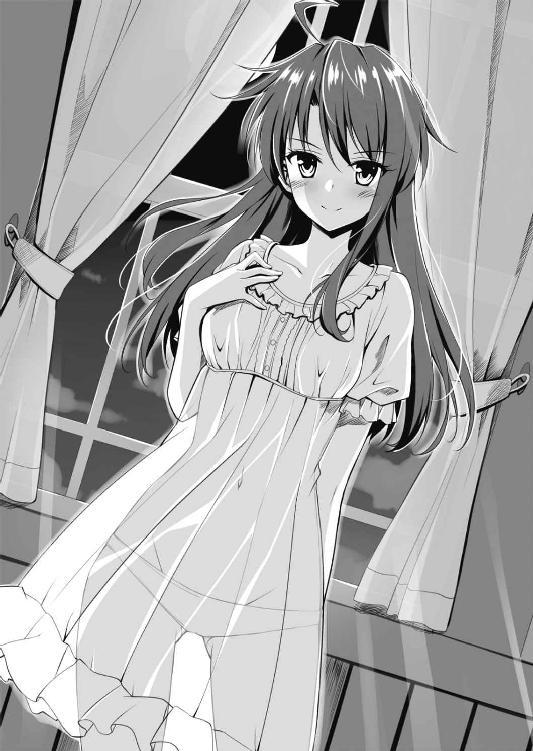
ＳＣＥＮＥ10
国を預かり民を守るのは、わたくしに課せられた使命なのです。
────プリンセス アン
ふうっ......。
わたくしは自室へもどると長椅子に身体を横たえました。
「このような姿勢で報告を聞くのを見たら、父上は眉をひそめるかしら」
「とんでもない。姫様は我が国の命運を双肩に担い、最大限の努力をしておられます。どうぞ、お身体をいたわってください」
諜者は長椅子の前に片膝をつき、報告を始めました。
「魔神ナタスは依然として神粘土の採掘のため大量の人員を投入し、次々に新たな英雄や武器を創造している模様です」
「......そう」
「ただ、ナヴレスの国民にとっては悲劇であるものの、我がアンデルにとっては朗報といえる情報がございます」
「それは？」
「ナタスは皇都ガルラに、これまた多くの労働力を投入して建設作業を始めました」
「なにを建てるというのです」
「信じがたいほど巨大な、山を超える規模の神殿──ナタス神殿だそうです。唯一にして絶対なる魔神ナタスが未来永劫にわたって君臨するための神殿、とのことで」
「まだ戦争を始めたばかりなのに、そんな大事業に着手したのですか？」
「はい。敵がそのようなくだらん大事業に人的資源を投入するなら、これと戦う我が国にとっては朗報です。また神殿の建設作業に投入された者は過酷な労働を強いられているとのこと。ナタスは自ら国内に反抗の芽をはぐくんでいるようなものです」
「しかし恐怖を植えつけることで、国民の統制をはかれるのもまた事実......。それに、戦争を継続しながらわざわざそのようなことをするのは、他国にナヴレスの国力を見せつけ威圧する意図があるのかもしれません。ともあれ、ごくろうでした。アンデリオンでしばし休んだ後、引き続き情報収集にあたりなさい」
「はっ」
諜者は立ち去ろうとしかけて、ふと思い出したように振り返りました。
「おっと、そうそう。姫様が召喚した二柱の神がナヴレス軍を撃退、のみならず魔将軍の一人を捕虜にする大戦果をあげたとのこと。幸先の良い勝利でした。では──」
彼がいなくなると、侍従のセラムが「姫様。お茶など淹れましょうか」とささやいた。
「そうね。濃くなりすぎないように注意して」
「かしこまりました」
ゆっくりとお茶を味わいながら心を弛緩させていると、ドアをノックする音が響きました。
「リリー様です」
儀仗兵の声。わたくしが「入りなさい」と告げるとドアが細く開かれ、リリーの小さな身体が室内に滑りこんできました。
「リリー、カイネ神とダジュラ神の様子は？」
「料理は気に入っていただけたようです。食後は、すぐにおやすみになられました」
「そう。あなたは、あの二柱の神をどう見ましたか。思うところをすなおに述べなさい」
「はい。カイネ神のことはまだよくわかりませんが、ゾルダいわく、豪放磊落で女性離れした性格のようです。そしてダジュラ神ですが、その......とても気さくな人柄です。まずまず、二柱とも善神と考えてよいのではないかと」
「ですが、その善神が変心し、タイタンに災厄をもたらした例は枚挙に暇がありません。リリー、よく監視して、変わった言動や不穏な動きがあったらすぐに報せるのですよ」
「はい！」
リリーは一礼して退出しました。
「......ついに、我が国も神を召喚してしまったのですな」
扉が閉まるのを確認してから、セラムがつぶやきました。
「ええ。ナタスの暴威に対抗するためにはやむをえません。でも、カイネ神とダジュラ神が力を持ちすぎるのは、わたくしたちにとって危険です。注意しなければ」
わたくしは「父上のところへまいります」と告げて立ち上がりました。
ついてこようとする警護の儀仗兵を手で制し、一人で父の部屋へとむかいます。
「ミドナを呼んで」
わたくしは声をひそめて、部屋を守る兵に告げました。
「これは、姫様」
わたくしの乳母であり、現在は父の介護をしているミドナはすぐにやってきました。
「ミドナ、父上は就寝中ですか」
「いえ、まだです。今宵は姫が訪ねてくるであろうから、まだ眠れぬ、と──」
「そう」
わたくしはそっと入室し、窓際のベッドへ歩み寄りました。
カーテンが開かれ、月光がさしています。白い光を浴びて仰臥する父の姿は、ひどくやつれて見えました。
「アンよ。神を招いたと聞いた」
父は──アンデル第二十五代国王リアド・アンデルは──ゆっくりと目を開き、上体を起こしました。
「はい。父上の教えにそむいて否神条約を破ってしまったこと、お許しください」
「それについてはなにもいうまい。ミドナやガラシュの口から昨今の情勢は聞いておる。ナヴレスに降伏せず戦う道を選んだのなら、神を招かずばどうにもなるまいて」
「......はい」
「それにわしはこのありさま。すでに国の実権は、アンよ、お前の手にゆだねたのだ。まだ小娘にすぎんお前にこのような重責を負わせるのは父としても心苦しい。だが、お前はわしの自慢の娘だ。思うまま舵をとりなさい。賢神ザリアの加護あれかし」
「ところで、父上......」
わたくしはいおうかいうまいかためらったものの、やはりいわずにはいられませんでした。
「わたくしは神を召喚しました。それも二柱もです。すでに召喚してしまい、後もどりはできません。であれば神に頼んで、神粘土で父上の病を癒す薬を──」
「ならん！」
それはわたくしを吹き飛ばすほどの大きな声でした。
「で、ですが！ 神の創る薬ならきっと父上の病も癒えるはずです！ このアンはまだ小娘で、父上のようには国をとりしきることができません！」
思わず、わたくしも大声をあげてしまいました。
「それでも、ならん。わしが病を得たのは、それが天命だからだ。そも、ナヴレスが否神条約を破って新たな神を降臨させた原因はなんであったか。老いた皇帝が、あさましくも天命以上の寿命を欲し、これを延ばそうとして神を召喚した。愚かな権力者がおのれ一個人の欲のために大きすぎる力にすがったのが、この乱の原因だ。それはわかっておろう」
「ですが、ですが──」
「人はいつか死ぬのが当然、わしは死など恐れん。だが、王は命惜しさに神から薬をたまわった、などと悪しき前例を残し、それが後世に語り継がれることを恐れる。わしがそのような特別な薬を得てみよ、病を得た家族を持つ臣民はどう思うか。わからぬお前ではあるまい」
「......ですが、神から薬を得たことを秘匿し、自然と病が回復したと発表すれば......」
「姑息な。そんな弱いことでどうする、たとえ病を癒したところでいつかは死ぬのが人間だ、何度もいわせるな！」
叱責され、わたくしはうつむくほかありませんでした。
「王陛下、そのように声を荒らげては、お身体にさわります」
ミドナがおろおろと、なだめる手つきをしました。
「アンよ」
「......はい」
「わしはな、この国難に立ち向かえる王たる器の者が、ただわし一人であると断じたなら、そのようにしていたかもしれん。だがわしには、お前という優れた娘が......優れた後継者がいる。そうであろう？」
「............」
わたくしは......わたくしは......。
父にもっともっと生きて欲しいのです。元気な姿をとりもどして欲しいのです。それは家族として、ごくあたりまえの感情です。
でもわたくしは、この小さな島の姫として生まれました。
父にはほかに子はなく、またわたくしは結婚していませんから、後継者はただわたくしがいるばかりなのです......。
「失礼いたします」
わたくしは小さな声でつぶやき、退出しました。
そうするしかなかったのです。
ＳＣＥＮＥ11
我こそは唯一にして絶対の神なり。
────魔神ナタス
私は宮殿のテラスに出て、夕暮れのほの赤い光に染まった町並みを眺めていた。
ナヴレスの政治経済の中心地、皇都ガルラ。広大な都だが、私の住まいである宮殿よりも高い建物はない。そうした建物は私に対する不敬にあたるので、ことごとく破壊するよう指示したのだ。人間ごときが神である私を見下ろすなどあってはならない。
だが、私はこの宮殿自体に不満がある。
老いた皇帝が私の機嫌をとるために建てたちっぽけな宮殿！ 人間が暮らすのならじゅうぶんすぎる広さであるし、それなりに贅を凝らしている。だが私は神だ。それも、今後タイタンを未来永劫にわたり支配する究極にして絶対の神......！ 私の住まいは、私にふさわしいものでなければならん。
太陽が落ちてゆく西へと私は視線を転じた。
都の周囲の土地はもっぱら畑として利用されていたが、皇都西側の土地は私がすべて接収した。現在、多数の労働者を投入し、このナタスの終の棲家となるナタス神殿の建設が進行中だ。
全体の形状は底面が正方形の四角錐。底面の一辺の長さが十キロメートル、頂上部の高さは五千メートル。完成した暁にはタイタン最大の人工物となる。
ただしナタス神殿は、まだ測量を終えて整地に手をつけた段階であり、石ひとつ積み上げていない。今はまだ、神殿の姿はただ私の夢想の中にしか存在しないのだ。
とほうもない規模の建造物であるから、完成までにどれほどの歳月と人員を投入せねばならないのか、私自身見当がつかない。ただし、これだけはいえる。このナタスが版図を拡大し、新たな奴隷どもを獲得すれば、建設速度はどんどん増してゆくのだ。
「ナタス神。神殿を思い描いておられるのですか」
ヴィルシャがテラスにあらわれた。私が愛妾として創造した英雄であり、魔将軍の一人でもある。薄絹に包まれた豊満な肢体、淫靡さの漂う濡れた唇と瞳......。何度抱いても飽きない女だ。
「そうだ。神殿が完成するか否かは、この魔神ナタスの器量次第。だが、必ずや成し遂げてみせる」
「ナタス神であれば、きっと実現できましょう。ところで、そろそろ冷えてまいりました。中へお入りになられては」
「よかろう」
私は夢想を切り上げることにした。
テラスから中へ入ると、ヴィルシャが背後に回って私の背広を脱がせた。スーツ姿は、タイタンの人々にとっては異装だ。それゆえ、これはこれで神らしいと私は思っている。
私は玉座の間へ足を運んで腰を下ろすと、ネクタイをゆるめワイシャツのボタンをはずした。ヴィルシャが盆に載せた酒と銀製の杯を運んでくる。
「ナタス神、皇帝陛下が目通りを願っております」
酒が注がれて口にしかけた時、儀仗兵がやってきた。
「かまわん、通せ」
じきに、風采の上がらない小太りの男があらわれて私の前に片膝をついた。名をゴドム。主だった皇帝一族を殺しつくした後で、私はこの凡庸な愚物を──かなりの遠縁ではあるがいちおう皇帝の眷属ではある──お飾りの皇帝として即位させた。
「ナタス神。お目通りがかない、うれしゅうございます」
「前置きはいい、なんの用だ」
「は......。その、神殿の建設に動員している労働者の件ですが......。戦のため多くの男手を徴兵していますので、なかなか数が集まりません。これ以上の労働者を集めようとすれば、民の不満は抑えきれないほどのものに......」
「そこをなんとかするのが貴様の役目だ」
私は一蹴して、去れ、と手を振った。
「皇帝など廃してしまってもよいのではありませんか」
皇帝が背中を丸めながらみすぼったらしい歩き方で消えると、ヴィルシャがさも不思議そうにたずねた。
「国民の不満をぶつける相手として、ああいう手合いがいたほうがよいのだ。少なくとも、今はまだ......な」
それからしばし、私はヴィルシャが酌をするまま杯を重ねていた。
「ナタス神。夜分に、それもお楽しみのところもうしわけございません。四剣ガルジャ様、また千針ホムリス様が目通りを願っておられます」
ほろ酔い加減になったころ、儀仗兵が再びあらわれた。
私はすでにアンデル島攻略が失敗に終わったことを知っていた。雑兵の中にもぐらせている私の『目』が、伝書鳩にてその旨をいちはやく報せてきたのだ。
「通せ」
すぐに、ホムリスとガルジャが悄然とうなだれて入室してきた。
「おめおめと逃げ帰ってきた、か」
両名が片膝をつくなり、私は浴びせた。
「ナ、ナタス神よりお預かりした兵を損ない、退却したこと、深くお詫び申し上げます」
ガルジャはうつむいて床を見たままでいった。私と視線をあわせるのを恐れている。
「アンデル側が神を召喚する前に島を攻略する手はずでしたが、すでに二柱の神が召喚された後で、善戦むなしく......」
ホムリスもうつむいて羽根を震わせ、小さくなっている。
「ゼイモラはどうした」
ガルジャとホムリスはどうしたものか、といいたげに顔を見合わせた。
「それが......。将軍はアンデルの神に敗れ、そ、その......降伏なさいました......」
しばし、玉座の間に静寂が満ちた。
「降伏、だと」
私が口を開くと、両名はびくっと身体を震わせた。
「降伏だと！ ゼイモラめ、不甲斐ない！」
「はっ。ど......同感でございます......」
ガルジャの言葉を受けて、私は銀の杯を持つ手に力をこめた。
「ガルジャよ」
「は......」
「貴様が愚かにも酒を飲んで不覚をとった件、このナタスが知らぬとでも思ったか」
「────」
「その貴様に、ゼイモラを非難する資格があるのか？」
ガルジャはいきなり跳ね起きた。
「お許しを！ ナタス神、お許しを！ 口が、す、すべりまし......」
ガルジャが最後までいい終えるより先に、私は杯を投げつけた。
パァン！ と破裂音が響き渡った。それは物体が音速を超えた際に、空気を引き裂いて生じる音だ。
それほどの高速になると、小さな銀の杯であっても恐るべき破壊の力を宿す。
頭部の破裂したガルジャの身体は音もなくあおむけに倒れた。
「ホムリス。貴様は別命あるまで謹慎せよ」
ホムリスは蚊の鳴くような声で「はい」とかろうじて答えると、血に濡れた床で足をすべらせながら、逃げるようにして退出した。
「ナタス神。なにかふくむところがおありのようですね」
ホムリスがいなくなると、ヴィルシャがささやいた。
「ほう、わかるか」
「はい。私には見せかけの怒りと見受けられました」
「いかにも......。任務中に酒で不覚をとったガルジャはこのナタスを侮辱したも同然、それゆえ処罰した。だが、ゼイモラの降伏は織りこみ済みだ。ゼイモラには出立させる前にこう命じておいた。首尾よくアンデル島を攻略できればよし、彼らがすでに神を召喚ずみでかなわずと見たならば降伏せよ、降伏して情報を収集しつつ、再び我が手駒として寝返る時を待て、とな」
「そうだったのですか」
「アンデルの神がどれほどの器量の持ち主かはわからん。だがあんな小国、神粘土の産出量もたかが知れている。ゼイモラほど強力な駒を一枚伏せておけば、後でどうとでもなる」
「では、神よ。『ゼイモラがアンデルの神に降伏した、この件でナタス神は激怒している』と噂を流すよう手配いたしましょうか？ 噂をアンデル側の諜者が嗅ぎつけて報告すれば、彼らがゼイモラを信頼して良いと判断する材料になるかと」
「よい案だ。デオラあたりにやらせろ」
「では、ただちに」
ヴィルシャは一礼して去った。
「なにをしている。さっさと掃除の者を呼べ！」
私はガルジャの死体を一瞥し、儀仗兵にいいつけた。
（ふん......。アンデルで新たな神が召喚された、か。面白くなってきた）
どんな神かは知らんが、たたき潰してくれる。この魔神ナタスの神話を彩るため、少しは歯ごたえのある敵が欲しいと思っていたところだ。
私は玉座に深く腰かけて忍び笑いをもらした。まったく、楽しくてしかたない。戦争。血みどろの戦争！ これこそ、神にふさわしい娯楽だ！
了
あとがき
あんなこといいな、できたらいいな、吉村夜です。
人は誰しも、空を飛びたいとか魔法を使えるようになりたいとか、夢を見るものです。いえ、夢を見ずにはいられないのが人間なのだと思います。
子どものころ......私にとってドラえもんは『夢をかなえてくれるヒーロー』でした。もちろん私の家にドラえもんはいなかったけれど、空を飛んだり時間旅行をしたりといった数々の夢物語に胸をときめかせたものです。
大人になり、小説家になった私は、いつの日か私なりのドラえもんを描きたいと思っていました。
その想いが結実したのが、この『ごっど・わーるど』です！
夢をかなえたいとの思いは、究極的には、全知全能の存在、すなわち神になりたいとの思いに通じます。神になって森羅万象を自在に操れるようになれば、かなわない夢はなにひとつないのですから。
ただし、自分以外にも同等の力を持つ神が存在していて、しかもその神と利害が衝突するとなると話はべつです。邪魔者となるその神を消滅させない限り、自分は全知全能ではないことになります。夢をかなえるためには、自身と同等の力を持つ存在と戦って勝利をもぎとらなければならないわけです。
坂上大樹と三浦会音は神となり、万物を創造する力を手に入れました。しかしタイタンには、血塗られた夢を実現しようと各国へ魔手を伸ばす魔神ナタスがいます。二人はナタスを倒して正義や平和といった大きな夢を実現できるのでしょうか？ 二人の、いえ、二柱の神の活躍にご期待ください。
最後になりましたが、本作に力を貸していただいた富士見書房担当編集者のＭさん、絵師の早川ハルイさん、校正の方、営業の方......ありがとうございました。
では、また。第二巻で、あなたと会えますように。
吉村 夜
ろーぷれ・わーるどの時もぜんぜんあてにならなかったけど、でも次巻予告だっ！
ひとまずナヴレス軍を撤退させ、アンデル王国には束の間の平和がもどった。しかし、いつまた敵が攻めてくるかわかったものではない。戦略資源である神粘土を早急に確保しなければ......！ そんなある日、鉱夫たちがグレードＡの神粘土を発見した。よぉ～し、これで新しい武器や英雄を創造できるぞぉ～！ しかし、ダジュラとパリエルの目にあまるいちゃいちゃぶりに激おこぷんぷん丸なカイネは恐ろしいことを考えつく。「クリエイション！」と唱えてカイネが創ったのは粉末状のお薬。これをべつの神粘土から創ったカツカレーに混ぜてテーブルの上に置く。「おや？ こんなところにカツカレーが......」とうかつにも食べてしまうダジュラ。するとあら不思議、なぜか胸が膨らみ始めたぞぉ～。そう、カイネが創ったのは性転換薬だったのだ！ 戦記物からＴＳ物へと物語は方向転換っつつつつつつつつ！ 次回、ごっど・わーるど第二巻『うあー。この原稿、八月にかいてるんですけど、なにこの暑さ。日本って、年々暑くなってない？』。朝おん大樹の貞操が危ないっ！
ＧＯＤ Ｗ（｀・ω・´）ＲＬＤ１
─ごっど・わーるど─
吉村 夜
平成25年12月25日 発行
発行者 佐藤 忍
発行所 株式会社ＫＡＤＯＫＡＷＡ
〒102-8177 東京都千代田区富士見2-13-3
03-3238-8745（営業）
http://www.kadokawa.co.jp/
企画・編集 富士見書房
03-3238-8585（編集）
http://www.fujimishobo.co.jp/
(C) Yoru Yoshimura, Harui Hayakawa 2013
本電子書籍は下記にもとづいて制作しました
富士見ファンタジア文庫『ＧＯＤ Ｗ（｀・ω・´）ＲＬＤ１ ─ごっど・わーるど─』平成25年12月25日初版発行